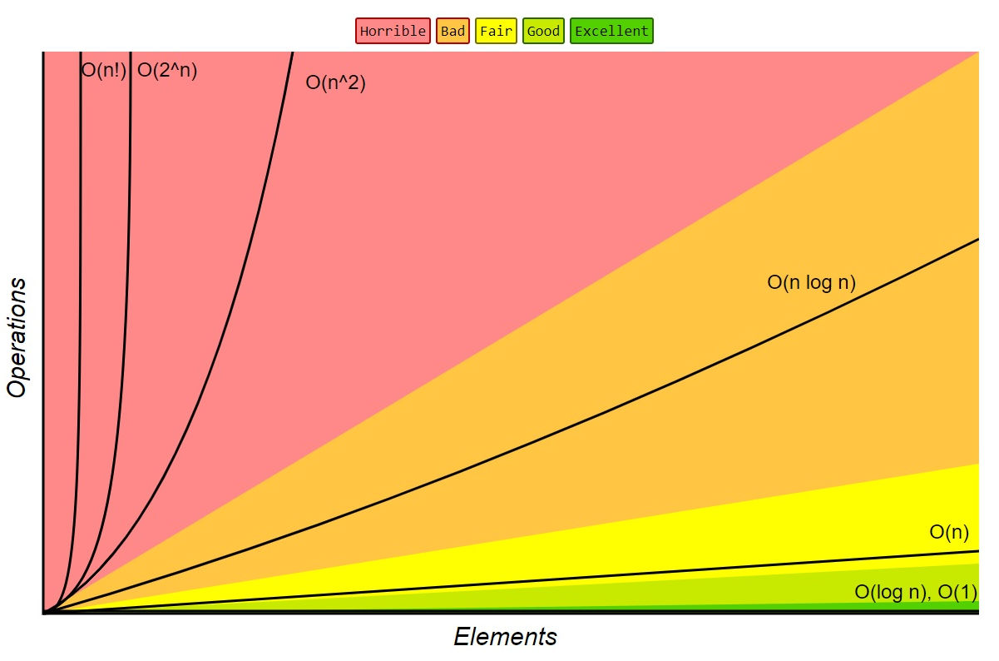
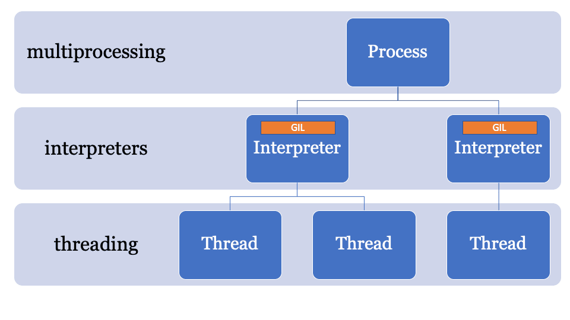
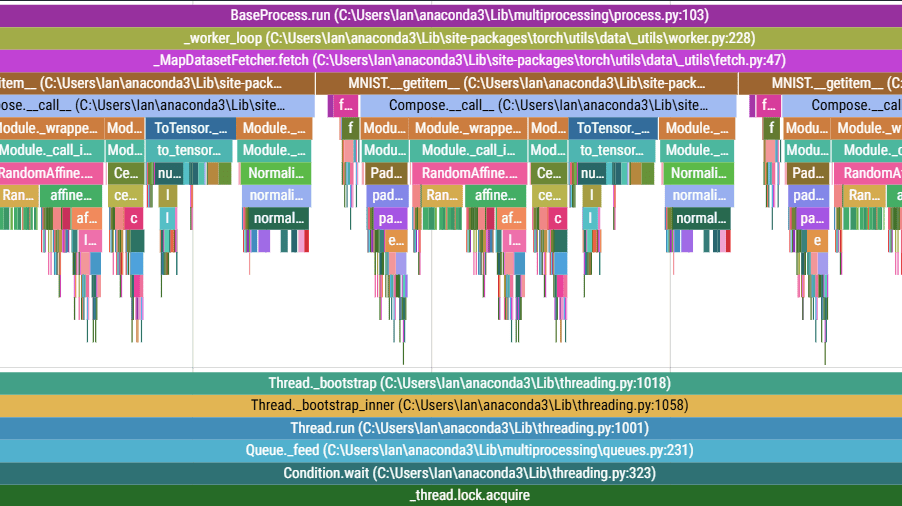
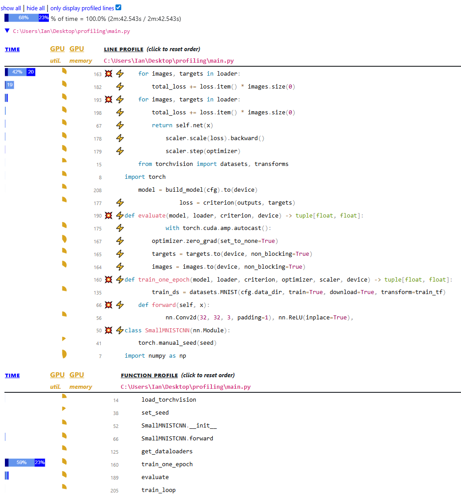
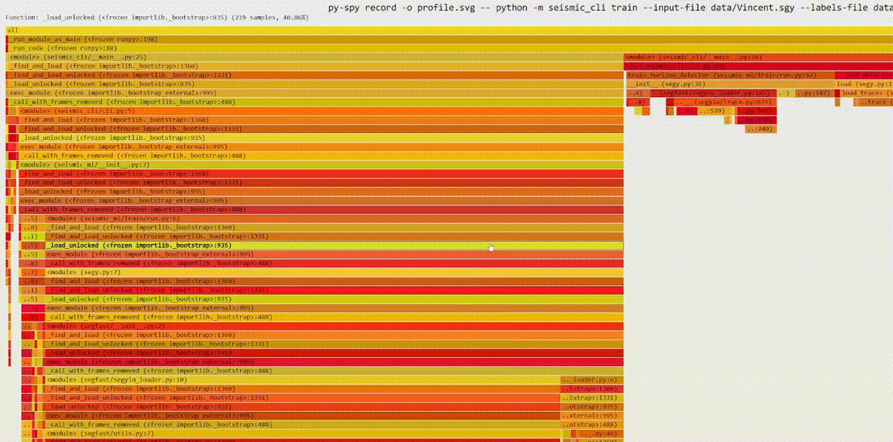

Python Advanced
Продвинутый Python: ООП, декораторы, итераторы, контекст-менеджеры и практика.
-
Про пакеты и модули
Модуль — файл
.py, содержащий Python-код (функции, классы, переменные), который можно импортировать.Пакет — директория с модулями и файлом
__init__.py, который делает её пакетом.Если совсем простыми словами: модуль — это один файл с кодом, пакет — папка с такими файлами. Импорт — способ взять код из одного файла и использовать в другом.
Три вещи, о которых обычно не задумываются:
- Python ищет файл — по списку каталогов в
sys.path: сначала папка запущенного скрипта, потом пути из переменнойPYTHONPATH, потом библиотеки установленного окружения. - Выполняет его целиком, сверху донизу. Импорт — это не «подключение заголовка», а полноценный запуск файла. Все определения классов, декораторы и код на верхнем уровне выполняются прямо сейчас.
- Кладёт результат в
sys.modules— словарь уже загруженных модулей. Повторныйimportтого же модуля не выполняет файл заново, а достаёт готовый объект из этого словаря.
Третий пункт объясняет и то, почему модуль — естественный синглтон (глобальная переменная в модуле существует в одном экземпляре на весь процесс), и то, почему правка файла не подхватывается без перезапуска.
Прямое следствие пункта 2: всё, что написано в модуле вне функций, сработает у любого, кто его импортирует. Загрузка модели на 2 ГБ, подключение к БД, чтение большого CSV на верхнем уровне превращают
import mypackageв долгую и небезопасную операцию.Особенно неприятно это для тестов:
pytestсобирает файлы импортом, и тяжёлая работа на верхнем уровне выполняется ещё до первого теста. Правило простое — на верхнем уровне только определения и дешёвые константы, всё остальное внутри функций.Пакеты могут содержать вложенные пакеты, создавая иерархию. Это упрощает организацию кода.
Оговорка про версии: начиная с Python 3.3 папка без
__init__.pyтоже импортируется — это «неявный пакет пространства имён» (namespace package). Но полагаться на это не стоит: без__init__.pyне работает часть инструментов упаковки, а поиск модулей ведёт себя менее предсказуемо. В обычном проекте файл создают, пусть даже пустым.Структура пакета
mypackage/ ├── __init__.py # делает директорию пакетом ├── module1.py ├── utils/ │ ├── __init__.py │ └── helpers.py └── config.py# Импорт модуля import mypackage.module1 # Импорт функции из модуля from mypackage.module2 import my_function # Импорт из вложенного пакета from mypackage.utils.helpers import format_date- Абсолютный:
from mypackage.utils.helpers import format_date— полный путь от корня проекта. - Относительный:
from .helpers import format_dateвнутри пакета, где точка означает «текущий пакет», две точки — «на уровень выше».
Относительные удобны внутри библиотеки: переименовали пакет — внутренние импорты не сломались. Но у них есть жёсткое ограничение: файл с относительным импортом нельзя запустить напрямую (
python mypackage/utils/helpers.pyдастImportError: attempted relative import with no known parent package). Запускать такой модуль нужно какpython -m mypackage.utils.helpers.PEP 8 по умолчанию рекомендует абсолютные импорты как более явные.
Роль
__init__.py# mypackage/__init__.py — определяет публичный API пакета from .module1 import ClassA, ClassB from .config import DEFAULT_SETTINGS # Теперь можно писать: # from mypackage import ClassA — вместо from mypackage.module1 import ClassA__all__— явное ограничение публичного API# module1.py __all__ = ["ClassA", "useful_function"] # только эти имена экспортируются при from module1 import * class ClassA: ... class _InternalClass: ... # не экспортируется (конвенция) def useful_function(): ... def _helper(): ... # не экспортируетсяif __name__ == "__main__"# utils.py def greet(name): return f"Привет, {name}!" if __name__ == "__main__": # Этот блок выполняется только при прямом запуске # При импорте модуля — НЕ выполняется print(greet("мир"))python utils.py # выведет "Привет, мир!" python -c "import utils" # ничего не выведет__name__— переменная, которую Python заводит в каждом модуле автоматически. В неё записывается имя модуля: для импортированногоutils.pyэто строка"utils", а для файла, запущенного напрямую, — всегда"__main__", независимо от имени файла.Отсюда и смысл конструкции: «выполни это, только если меня запустили как программу, а не импортировали как библиотеку». Внутрь обычно кладут точку входа, демонстрацию использования или ручной тест.
Практическая польза видна на примере
multiprocessingв Windows и macOS: там дочерний процесс импортирует главный модуль, и без защитыif __name__ == "__main__"он снова запустит создание процессов — бесконечная рекурсия из процессов.Библиотека выросла, и класс
Modelпереехал изmypackage/model.pyвmypackage/models/base.py.Если пользователи писали
from mypackage.model import Model, сломается весь их код. Если в__init__.pyбыл реэкспорт и все писалиfrom mypackage import Model— не сломается ничего: правится одна строка в__init__.py.Это и есть смысл публичного API: внешние пути стабильны, внутренняя структура свободна. Ровно так устроены крупные библиотеки —
from sklearn.ensemble import RandomForestClassifierне говорит ничего о том, в каком файле лежит реализация.__init__.pyпозволяет централизованно определять API пакета: пользователи импортируют удобные короткие пути, а внутренняя структура может меняться.__all__явно документирует публичный интерфейс.Про
from module import *стоит знать две вещи. Во-первых, он тянет в ваше пространство имён неизвестно что: два таких импорта подряд могут молча перезаписать одноимённые функции, и найти это потом тяжело. Во-вторых, читатель кода не понимает, откуда взялось имяprocess— искать приходится вручную.Поэтому
import *в рабочем коде не используют;__all__полезен не столько ради него, сколько как декларация публичного API: он же управляет тем, что покажетhelp(), и подсказывает линтерам, какие имена не считать неиспользуемыми.Настоящих модификаторов доступа (
private,public) в Python нет — вместо них соглашение:_helper— «внутреннее, снаружи не трогать». Технически доступно, но полагаться на него нельзя: сломается без предупреждения.__attrвнутри класса — срабатывает name mangling: имя превращается в_ClassName__attr. Это защита не от программиста, а от случайного совпадения имён при наследовании.__dunder__— зарезервировано за самим языком, свои имена так называть не нужно.
Смысл в том, что Python полагается на договорённость, а не на запрет: «мы взрослые люди» (consenting adults) — известная формулировка из сообщества.
- Назвать файл как библиотеку.
random.pyилиjson.pyрядом со скриптом перекрывает стандартный модуль, потому что папка скрипта идёт вsys.pathпервой. Ошибки при этом абсолютно необъяснимые:AttributeError: module 'random' has no attribute 'randint'. - Циклический импорт.
a.pyимпортируетb.py, а тот —a.py. Симптом —ImportError: cannot import name X from partially initialized module. Лечится выносом общего кода в третий модуль или переносом импорта внутрь функции. - Тяжёлая работа на верхнем уровне модуля. Импорт становится долгим и с побочными эффектами, тесты замедляются.
from module import *в рабочем коде. Неявные имена и молчаливое перекрытие.- Ожидать, что модуль перезагрузится после правки. Пока процесс жив, используется версия из
sys.modules; в Jupyter для этого есть%autoreload, в остальных случаях нужен перезапуск.
Что такое модуль и пакет в Python?
Модуль — файл
.pyс кодом, который можно импортировать. Пакет — директория с файлом__init__.py, содержащая модули и/или вложенные пакеты.Зачем нужен
__init__.pyи что в нём обычно пишут?Делает директорию пакетом. В нём определяют публичный API: импортируют классы и функции из внутренних модулей, чтобы пользователи обращались по короткому пути (
from mypackage import ClassAвместоfrom mypackage.module1 import ClassA).Что делает
__all__и зачем он нужен?Список имён, которые экспортируются при
from module import *. Явно документирует публичный интерфейс модуля; имена без__all__(начинающиеся с_) по конвенции считаются приватными.Как работает
if __name__ == "__main__"?При прямом запуске файла
__name__ == "__main__", при импорте —__name__равен имени модуля. Конструкция позволяет писать код, который выполняется только при запуске файла как скрипта, но не при импорте. Дляmultiprocessingна Windows и macOS она обязательна: дочерний процесс импортирует главный модуль и без этой защиты бесконечно порождал бы новые процессы.Что происходит при выполнении
import mymodule?Python ищет файл по путям из
sys.path, выполняет его целиком сверху вниз и кладёт получившийся объект модуля вsys.modules. Повторный импорт файл не перевыполняет, а берёт готовый объект из этого словаря.Почему нельзя писать тяжёлый код на верхнем уровне модуля?
Потому что он выполнится у каждого, кто импортирует модуль, — включая сборщик тестов. Загрузка модели, подключение к БД или чтение большого файла на верхнем уровне делают импорт долгим и с побочными эффектами. На верхнем уровне держат только определения и дешёвые константы.
Чем относительный импорт отличается от абсолютного и когда он ломается?
Относительный (
from .helpers import f) отсчитывается от текущего пакета, абсолютный — от корня. Файл с относительным импортом нельзя запустить напрямую: нуженpython -m package.module. PEP 8 по умолчанию рекомендует абсолютные импорты как более явные.Что такое циклический импорт и как его чинить?
Ситуация, когда два модуля импортируют друг друга; при загрузке один из них оказывается инициализирован лишь частично, отсюда
ImportError: cannot import name ... from partially initialized module. Лечится выносом общего кода в третий модуль, импортом внутри функции или переработкой зависимостей.Почему свой файл
random.pyломает программу?Потому что каталог запускаемого скрипта стоит в
sys.pathпервым, и ваш файл перекрывает одноимённый модуль стандартной библиотеки. Проявляется это неочевиднымиAttributeErrorу «известных» функций. Правило: не называть файлы именами стандартных и установленных модулей.
- Python ищет файл — по списку каталогов в
-
Алгоритмическая сложность
Алгоритмическая сложность — это оценка ресурсов, которые требует алгоритм в зависимости от размера входа $n$: времени и/или памяти. В большинстве случаев мы используем Big-O нотацию — верхнюю асимптотическую границу: $$T(n) \in \mathcal{O}(f(n)) \Rightarrow \exists c,n_0:\ \forall n>n_0,\ T(n) \le c\cdot f(n),$$ то есть мы можем оценить сверху время работы алгоритма функцией $f(n)$. $T(n)$ — время работы алгоритма на входе размера $n$, $f(n)$ — функция, которая оценивает время работы алгоритма, $c, n_0$ — константы.
Также встречаются нижняя граница $\Omega(\cdot)$ и точная оценка $\Theta(\cdot)$, но тут рассмотрим только $\mathcal{O}(\cdot)$.
Читается она так: «начиная с некоторого размера входа $n_0$, время работы $T(n)$ никогда не превысит $f(n)$, умноженную на какую-то постоянную $c$».
Три части формулы по отдельности:
- $c$ — поправка на «мелочи»: язык, железо, константные множители. Она есть, но какая именно — неважно.
- $n_0$ — обещание касается только больших входов. На массиве из 5 элементов быстрее может оказаться и «плохой» алгоритм.
- $\le$ — это оценка сверху, гарантия «не хуже, чем», а не точное время.
Итого $\mathcal{O}$ отвечает на один вопрос: как быстро растёт время, если вход вырастет вдвое?
Кажется странным: разве не важно, работает алгоритм 2 секунды или 20? Важно — но только пока размер входа фиксирован. Константа сдвигает график, а класс сложности задаёт его форму, и на больших $n$ форма всегда побеждает.
Числа делают это очевидным. Пусть алгоритм A выполняет $100n$ операций, а B — $n^2$, то есть на маленьких входах A в сто раз «тяжелее»:
$n$ A: $100n$ B: $n^2$ Кто быстрее 10 1 000 100 B, в 10 раз 100 10 000 10 000 поровну 10 000 1 000 000 100 000 000 A, в 100 раз Любая константа съедается ростом $n$ — вопрос лишь в том, на каком именно $n$ это произойдёт.
- Отбрасываем константы и младшие члены: $5n^2 + 3n + 7 \Rightarrow \mathcal{O}(n^2)$.
- Последовательные блоки складываются: $\mathcal{O}(f(n)) + \mathcal{O}(g(n)) = \mathcal{O}(\max(f,g))$.
- Вложенные циклы перемножаются: внешний $n\times$ внутренний $n \Longrightarrow \mathcal{O}(n^2)$.
- Деление задачи пополам даёт логарифм: бинарный поиск $\Longrightarrow$ $\mathcal{O}(\log n)$.
Класс Пример Комментарий $\mathcal{O}(1)$ Индексирование списка, доступ к dict Амортизированная константа $\mathcal{O}(\log n)$ Бинарный поиск Каждая итерация сокращает поиск вдвое $\mathcal{O}(n)$ Однопроходный подсчёт Линейно по входу $\mathcal{O}(n\log n)$ Сортировка сравнениями Timsort/merge/heap sort $\mathcal{O}(n^2)$ Два вложенных цикла Сравнение всех со всеми $\mathcal{O}(n+m)$ BFS по графу $n$ — вершины, $m$ — рёбра $\mathcal{O}(2^n)$ Перебор подмножеств Экспоненциальный рост $\mathcal{O}(n!)$ Все перестановки Очень быстро растёт 
Возьмём условный миллион простых операций в секунду и посмотрим, сколько работает алгоритм на входе разного размера. Числа приблизительные — важен порядок, а не точность:
$n$ $\mathcal{O}(n)$ $\mathcal{O}(n\log n)$ $\mathcal{O}(n^2)$ $\mathcal{O}(2^n)$ 100 мгновенно мгновенно 0,01 с больше возраста Вселенной 10 000 0,01 с 0,13 с 100 с — 1 000 000 1 с 20 с около 12 дней — Главный вывод: разница между $\mathcal{O}(n\log n)$ и $\mathcal{O}(n^2)$ — это разница между «подождать полминуты» и «ждать почти две недели». Именно поэтому на собеседовании просят улучшить квадрат до $n\log n$, а не оптимизировать константу.
$\log_2 n$ — это ответ на вопрос «сколько раз надо поделить $n$ пополам, чтобы получить единицу». Для миллиона — примерно 20 раз, для миллиарда — 30.
Отсюда практическое чутьё: логарифм почти константа. Увеличение данных в тысячу раз добавляет к $\log_2$ всего десяток шагов. Поэтому бинарный поиск по миллиарду записей — это 30 сравнений, и любой алгоритм с $\log n$ можно считать «дешёвым».
# O(1) — константное время arr = [10, 20, 30] x = arr[1] # индексирование списка — O(1) d = {"a": 1} y = d.get("a") # среднее O(1) доступ по ключу# O(log n) — бинарный поиск в отсортированном массиве def binary_search(a, target): lo, hi = 0, len(a)-1 while lo <= hi: mid = (lo+hi)//2 if a[mid] == target: return mid if a[mid] < target: lo = mid + 1 else: hi = mid - 1 return -1 # Время: O(log n), память: O(1)# O(n) — один проход def count_positive(a): cnt = 0 for v in a: # проходит n элементов if v > 0: cnt += 1 return cnt # Время: O(n), память: O(1)# O(n log n) — сортировка def sorted_copy(a): return sorted(a) # Timsort: O(n log n) в худшем/среднем, O(n) на почти отсортированных# O(n^2) — вложенные циклы def all_pairs_sum(a): s = 0 for i in range(len(a)): for j in range(len(a)): # n*n итераций s += a[i] + a[j] return s # Время: O(n^2)# O(n + m) — обход графа в ширину (BFS) на списках смежности from collections import deque def bfs(adj, start): # adj: dict[node] -> list[neighbor] seen = {start} q = deque([start]) order = [] while q: u = q.popleft() order.append(u) for v in adj.get(u, []): if v not in seen: seen.add(v); q.append(v) return order # Время: O(n + m), память: O(n)# O(2^n) — генерация всех подмножеств def subsets(nums): res = [[]] for x in nums: # для каждого элемента удваиваем набор res += [s + [x] for s in res] return res # Кол-во результатов 2^n -> время O(2^n), память O(2^n)# O(n!) — все перестановки def permutations(nums): if len(nums) <= 1: return [nums[:]] out = [] for i, x in enumerate(nums): rest = nums[:i] + nums[i+1:] for p in permutations(rest): out.append([x] + p) return out # Время ~ O(n!), память ~ O(n!) результатов + O(n) глубина стекаМеханический приём, который работает почти всегда:
- Найди самый глубоко вложенный цикл и посчитай, сколько раз он выполняется через размер входа.
- Перемножь количества итераций вложенных циклов, сложи последовательные участки.
- Не забудь скрытые циклы:
x in list,sorted(), срезa[:k],list.insert(0, x), конкатенация строк — внутри каждого из них есть свой проход по данным.
Третий пункт — самая частая причина ошибки. Внешне код выглядит как один цикл по $n$, но
if x in seen_listвнутри превращает его в $\mathcal{O}(n^2)$: строчка короткая, а работы в ней много.- Худший случай — гарантия «не хуже». Именно его обычно имеют в виду, говоря «сложность алгоритма».
- Средний случай — по типичным данным. Поиск в
dict— $\mathcal{O}(1)$ в среднем, но при массовых коллизиях хешей деградирует до $\mathcal{O}(n)$. - Амортизированный — усреднение по длинной серии операций.
list.append— $\mathcal{O}(1)$ амортизированно: изредка список перевыделяет память и копирует всё за $\mathcal{O}(n)$, но такие моменты редки, и в среднем на операцию выходит константа.
Путать их опасно: «поиск в словаре — константа» верно в среднем и неверно в худшем случае, и на собеседовании эту оговорку ждут.
- Копирование списка: $\mathcal{O}(n)$ по памяти; генератор — $\mathcal{O}(1)$ (ленивый).
- Рекурсия глубины $h$: стек $\mathcal{O}(h)$.
- Хеш-таблица (dict/set): средняя вставка/поиск $\mathcal{O}(1)$ по времени, но хранение ключей — $\mathcal{O}(n)$.
list.insert(0, x)иpop(0)— $\mathcal{O}(n)$ (сдвиг элементов); используйcollections.deque.x in my_list— линейно $\mathcal{O}(n)$; вset/dict— среднее $\mathcal{O}(1)$.- Срезы списков
a[:k]создают копию: память/время $\mathcal{O}(k)$. - Конкатенация строк в цикле — квадратичная; лучше
"".join(parts)$\Longrightarrow \mathcal{O}(n)$.
Классическая задача: найти пересечение двух списков по 100 000 элементов.
common = [x for x in a if x in b] # b — список: 10^5 × 10^5 = 10^10 операций b_set = set(b) common = [x for x in a if x in b_set] # b — множество: 10^5 операцийПервый вариант работает часами, второй — доли секунды. Алгоритм «тот же», изменился только тип контейнера:
inпо списку линейно сравнивает элементы,inпо множеству считает хеш и сразу прыгает в нужную ячейку.Это и есть самое частое практическое применение теории сложности: не изобретать алгоритмы, а замечать, что структура данных выбрана неудачно.
Оценка сложности объясняет, почему одни модели масштабируются, а другие нет:
- kNN на инференсе — $\mathcal{O}(n\cdot d)$ на один запрос ($n$ объектов обучения, $d$ признаков): модель не обучается, но каждый прогноз стоит прохода по всему датасету.
- Обучение дерева — примерно $\mathcal{O}(n\cdot d\log n)$: сортировка значений признака в каждом узле.
- Точный поиск ближайших соседей на миллионах векторов невозможен в лоб, отсюда ANN-индексы (HNSW, IVF) — они меняют точность на сложность, близкую к логарифмической.
- Квадратичная память attention, $\mathcal{O}(L^2)$ по длине последовательности $L$ — причина, по которой длинный контекст в трансформерах дорог.
Во всех случаях вопрос один и тот же: как растёт цена, когда данных становится вдесятеро больше.
- Оптимизировать не то. $\mathcal{O}$ ничего не говорит о константе: на реальном входе векторизованный «квадратичный» numpy-код может обгонять «линейный» Python-цикл. Профилировщик важнее интуиции.
- Забывать про память. Алгоритм с идеальным временем, которому нужно $\mathcal{O}(n^2)$ памяти, просто не запустится на большом входе.
- Считать
inодинаковым для всех коллекций. По списку — $\mathcal{O}(n)$, по множеству и словарю — $\mathcal{O}(1)$ в среднем. - Игнорировать стоимость создания структуры.
set(b)внутри цикла сводит на нет весь выигрыш: множество надо строить один раз, снаружи. - Путать «сложность алгоритма» и «сложность реализации». Timsort в CPython написан на C, поэтому «медленный» $\mathcal{O}(n\log n)$ из стандартной библиотеки почти всегда быстрее «быстрой» ручной сортировки на Python.
Что такое Big-O нотация и что она оценивает?
Верхняя асимптотическая граница времени или памяти алгоритма в зависимости от размера входа $n$. Константы и младшие члены отбрасываются: $5n^2 + 3n \Rightarrow \mathcal{O}(n^2)$.
Какие основные классы сложности нужно знать?
$\mathcal{O}(1)$ — константа (доступ по индексу). $\mathcal{O}(\log n)$ — бинарный поиск. $\mathcal{O}(n)$ — один проход. $\mathcal{O}(n \log n)$ — сортировка. $\mathcal{O}(n^2)$ — вложенные циклы. $\mathcal{O}(2^n)$ — перебор подмножеств.
Как вложенные циклы и деление пополам влияют на сложность?
Два вложенных цикла по $n$ $\to$ $\mathcal{O}(n^2)$. Алгоритм, делящий задачу пополам на каждом шаге, $\to$ $\mathcal{O}(\log n)$.
Какие частые ловушки сложности в Python?
x in list— $\mathcal{O}(n)$,x in set— $\mathcal{O}(1)$.list.insert(0, x)— $\mathcal{O}(n)$,deque.appendleft()— $\mathcal{O}(1)$. Конкатенация строк в цикле — $\mathcal{O}(n^2)$, используй"".join().Почему в Big-O отбрасывают константы и младшие члены?
Потому что оценивается скорость роста, а не абсолютное время. Константа сдвигает график, но не меняет его форму, и на больших $n$ форма всегда побеждает: алгоритм за $100n$ операций обгонит алгоритм за $n^2$, начиная с $n = 100$.
Чем отличаются худший, средний и амортизированный случаи?
Худший — гарантия «не хуже» на самых плохих данных. Средний — оценка на типичных данных (поиск в
dict— $\mathcal{O}(1)$ в среднем, но $\mathcal{O}(n)$ при массовых коллизиях). Амортизированный — усреднение по серии операций:list.appendизредка копирует весь список, но в среднем на операцию выходит константа.Как быстро оценить сложность незнакомого кода?
Посчитать итерации вложенных циклов и перемножить, последовательные участки сложить, а затем найти скрытые проходы:
inпо списку,sorted, срезы,insert(0, …), конкатенацию строк. Чаще всего именно скрытый проход внутри одиночного цикла и превращает линейный код в квадратичный.Сложность выше — значит, всегда медленнее?
Нет. На малых $n$ константа решает:
sorted()на C обгонит ручную реализацию на Python при той же асимптотике, а векторизованный numpy-код — обычный цикл. Big-O предсказывает поведение при росте данных, а конкретное время на конкретном входе показывает профилировщик.Где оценка сложности нужна в ML-задачах?
Чтобы понимать цену масштабирования: kNN платит за каждый прогноз проходом по обучающей выборке, обучение дерева стоит примерно $\mathcal{O}(n d\log n)$, attention требует $\mathcal{O}(L^2)$ памяти по длине последовательности. Отсюда же берутся ANN-индексы вместо точного поиска соседей на больших коллекциях векторов.
-
Логгирование (модуль
logging)Логгирование — запись диагностических сообщений о событиях и поведении программы.
loggingпредпочтительнееprint()в продакшене: поддерживает уровни, форматирование, маршрутизацию в разные назначения.Если совсем простыми словами: это бортовой журнал программы. Когда что-то сломается — а сломается оно ночью, на чужой машине и без вас, — читать будет нечего, кроме этого журнала.
Разница не в удобстве, а в управляемости.
print— это жёстко зашитая в код команда «напечатать в stdout прямо сейчас». Отсюда все проблемы:- Нельзя выключить без правки кода. Отладочные
printлибо удаляют (и теряют при следующей отладке), либо оставляют, засоряя вывод. - Нельзя направить в файл, в systemd-журнал, в Sentry, в ELK. Логгер это делает настройкой, не трогая ни строки в бизнес-логике.
- Нет контекста. Кто напечатал, когда, насколько это серьёзно — неизвестно. В логе от нескольких модулей
printнеразличимы. - Не потокобезопасен в той же мере: сообщения из разных потоков могут перемешаться посреди строки.
Главная мысль: логгер отделяет решение «что записать» от решения «куда и когда это выводить». Первое принимает автор кода, второе — тот, кто его запускает.
Уровни (от меньшего к большему):
DEBUG < INFO < WARNING < ERROR < CRITICAL. По умолчанию выводятся толькоWARNINGи выше.Как выбирать уровень:
Уровень Когда писать Пример DEBUGподробности для отладки, в проде выключены «в батче 128 строк, 3 пропуска» INFOнормальные вехи работы «модель загружена», «обработано 10 000 записей» WARNINGстранно, но программа справилась «повтор запроса после таймаута» ERRORоперация не выполнена «не удалось записать результат в БД» CRITICALдальше работать нельзя «нет конфига, выключаюсь» Практический смысл уровней в том, что одна настройка меняет подробность: в разработке
DEBUG, в продеINFO, при разборе инцидента временно сноваDEBUG— и всё это без единой правки кода.Базовая настройка
import logging logging.basicConfig( level=logging.DEBUG, format="%(asctime)s [%(levelname)s] %(message)s" ) logging.debug("Отладочное сообщение") # 2024-01-15 10:00:00 [DEBUG] ... logging.info("Информация") logging.warning("Предупреждение") logging.error("Произошла ошибка") logging.critical("Критическая ошибка!")Если у корневого логгера уже есть обработчики, повторный вызов
basicConfigничего не делает и молча возвращает управление. Отсюда классическая жалоба «выставилlevel=DEBUG, а debug-сообщений нет»: настройку перехватила библиотека, вызвавшаяbasicConfigраньше вас.Лечится либо
logging.basicConfig(level=..., force=True)(Python 3.8+), который сносит существующие обработчики, либо явной настройкой логгеров безbasicConfigвовсе — как в примере с двумя хендлерами ниже.Именованные логгеры — правильный подход
Не используй корневой логгер в библиотеках — создавай именованный.
__name__— это полное имя модуля:myapp.data.loader. Отсюда сразу три выгоды: в каждой строке лога видно, откуда она пришла; иерархия логгеров получается автоматически, без придумывания имён; при переносе файла имя меняется само.logging.getLogger("имя")при этом всегда возвращает один и тот же объект для одного имени — это реестр, а не фабрика. Поэтому строкуlogger = logging.getLogger(__name__)можно спокойно писать в каждом модуле на верхнем уровне.import logging logger = logging.getLogger(__name__) # имя = имя текущего модуля def process_data(data): logger.debug(f"Получены данные: {len(data)} элементов") try: result = do_work(data) logger.info(f"Обработка завершена успешно") return result except Exception as e: logger.error(f"Ошибка обработки: {e}", exc_info=True) raiseБез него в логе останется только текст исключения:
Ошибка обработки: division by zero. Где именно это произошло — неизвестно.С
exc_info=Trueв лог попадает полный traceback — вся цепочка вызовов до места падения. Разница между «есть ошибка» и «есть ошибка в строке 47 файла loader.py, вызванной из train.py:112» огромна, когда разбираешь ночной сбой.Короткая форма —
logger.exception("Ошибка обработки"): то же самое, но уровеньERRORиexc_infoвключаются автоматически. Работает только внутри блокаexcept.logger.debug(f"Обработано {expensive_count()} строк") # плохо logger.debug("Обработано %s строк", expensive_count()) # тоже вычислится logger.debug("Обработано %s строк", count) # хорошоПервая проблема — производительность. f-строка собирается до вызова метода, то есть даже когда уровень
DEBUGвыключен и сообщение никуда не пойдёт. При%s-подстановке форматирование выполняется лениво, только если запись реально будет выведена.Вторая — структурированность. С
%sбиблиотека видит шаблон и аргументы по отдельности, поэтому одинаковые по смыслу события можно группировать и считать ("Обработано %s строк"— один тип события с разными параметрами). С f-строкой остаётся только готовый текст, и все записи разные.На практике для
INFOи выше f-строки допустимы и часто встречаются; дляDEBUGв горячем коде разница ощутима.Запись в файл + консоль
import logging logger = logging.getLogger("myapp") logger.setLevel(logging.DEBUG) # Хендлер для консоли console_handler = logging.StreamHandler() console_handler.setLevel(logging.INFO) # Хендлер для файла file_handler = logging.FileHandler("app.log", encoding="utf-8") file_handler.setLevel(logging.DEBUG) # Форматтер fmt = logging.Formatter("%(asctime)s [%(levelname)s] %(name)s: %(message)s") console_handler.setFormatter(fmt) file_handler.setFormatter(fmt) logger.addHandler(console_handler) logger.addHandler(file_handler) logger.info("Запуск приложения") logger.debug("Отладочная информация (только в файле)")- Logger — объект, через который пишутся сообщения (
getLogger(__name__)) - Handler — куда направлять лог (консоль, файл, сеть)
- Formatter — формат строки лога
- Level — минимальный уровень для вывода
Связь между ними такая: сообщение рождается в логгере, проходит его фильтр по уровню, поднимается по иерархии к родителям и на каждом уровне раздаётся всем обработчикам. Каждый обработчик применяет свой фильтр по уровню и свой форматтер.
Отсюда двухступенчатая фильтрация, которая многих путает: сообщение выводится, только если прошло и уровень логгера, и уровень обработчика. Логгер с уровнем
INFOне пропуститDEBUGдо файлового обработчика, даже если у того выставленDEBUG.В коде выше логгер настроен на
DEBUG— он пропускает всё. Дальше сообщения расходятся по двум обработчикам с разными порогами:- консоль (
INFO) — покажетINFOи выше, пользователь видит только вехи работы; - файл (
DEBUG) — запишет всё, включая подробности для последующего разбора.
Это стандартная production-схема: в глаза — только важное, на диск — всё. Обратите внимание на порядок настройки: сначала логгеру ставят самый низкий нужный уровень, иначе обработчики не получат ничего, что он отфильтровал.
Можно создавать вложенные логгеры (
myapp,myapp.model,myapp.data) — они образуют иерархию по точкам в имени. Уровень родительского логгера влияет на дочерних.Работает это так: сообщение из
myapp.dataпередаётся обработчикам самогоmyapp.data, затем поднимается кmyapp, затем к корневому. Поэтому обработчики обычно вешают один раз на верхний логгер приложения, а в модулях просто пишут в свои.Практическое следствие — точечная настройка подробности:
logging.getLogger("myapp.data").setLevel(logging.DEBUG)включит детали только у загрузчика данных, не заливая лог отладкой всего остального. Тем же способом глушат болтливые библиотеки:logging.getLogger("urllib3").setLevel(logging.WARNING).Каждое сообщение видно дважды или трижды — самый частый симптом при работе с
logging. Причины всегда одна из двух:- Обработчик добавлен повторно.
addHandlerв функции, которую вызвали несколько раз, или в модуле, перезагруженном в ноутбуке. Обработчиков стало два — строк тоже два. - Свой обработчик плюс распространение вверх. Сообщение печатает и обработчик модуля, и унаследованный корневой.
Лечится проверкой
if not logger.handlers:перед добавлением, либоlogger.propagate = False, если ветка настроена самостоятельно. В Jupyter надёжнее всего перед настройкой явно очистить:logging.getLogger().handlers.clear().Логируй параметры экспериментов, тайминги эпох, значения метрик — это улучшает воспроизводимость и отладку. Несколько вещей, о которых жалеют, когда их не записали:
- версии и seed: версия данных, коммит кода,
random_state— без них эксперимент не повторить; - форма данных на каждом шаге:
X_train.shape, доля пропусков, число классов — по ним сразу видно, где пайплайн потерял строки; - длительность этапов — чтобы знать, что оптимизировать;
- предупреждения о данных: «в проде встретилась категория, которой не было в обучении».
Логи не заменяют трекер экспериментов (MLflow, W&B) — тот хранит метрики структурированно и сравнивает запуски. Но лог отвечает на вопрос «что происходило и в каком порядке», а трекер — нет.
FileHandlerпишет в один файл бесконечно — на сервере это рано или поздно заполняет диск. Для долгоживущих процессов берутRotatingFileHandler(новый файл по достижении размера) илиTimedRotatingFileHandler(новый файл каждый день), оба с ограничением на число хранимых файлов.Второй уровень зрелости — структурные логи: писать не текст, а JSON с полями (
event,user_id,duration_ms). Такие записи можно фильтровать и агрегировать в системах сбора логов, тогда как по свободному тексту приходится искать регулярками. Для этого используютpython-json-loggerилиstructlog.Почему
loggingлучшеprint()в продакшене?loggingподдерживает уровни (фильтрацию по серьёзности), маршрутизацию в файл/консоль/сеть, форматирование с временными метками.print()нельзя легко отключить или перенаправить без изменения кода.Какие уровни логгирования существуют и что означает "уровень по умолчанию"?
DEBUG < INFO < WARNING < ERROR < CRITICAL. По умолчанию отображаются толькоWARNINGи выше. Для включенияDEBUGнужно явно указатьlogging.basicConfig(level=logging.DEBUG).Зачем использовать
getLogger(__name__)вместо корневого логгера?Именованный логгер привязан к модулю: сообщения содержат источник, можно настроить уровень независимо. В библиотеках не используй корневой логгер — это нарушает конфигурацию приложения, которое использует библиотеку.
Как устроена иерархия логгеров?
Логгеры образуют дерево по точкам в имени:
myapp,myapp.model,myapp.data. Сообщение отдаётся обработчикам своего логгера и затем поднимается к родителям вплоть доroot. Поэтому обработчики настраивают один раз на верхнем логгере, а уровень можно переопределять точечно для отдельной ветки.Почему сообщения в лог попадают дважды?
Либо обработчик добавлен повторно (
addHandlerв функции, вызванной несколько раз, или перезапуск ячейки в Jupyter), либо сообщение печатает и собственный обработчик, и унаследованный корневой. Лечится проверкойif not logger.handlersперед добавлением илиlogger.propagate = False.Почему не сработал
basicConfig(level=logging.DEBUG)?Потому что у корневого логгера уже были обработчики — например, их настроила импортированная библиотека, — и повторный вызов
basicConfigмолча ничего не делает. Нужен параметрforce=Trueили явная настройка логгеров вместоbasicConfig.Зачем
exc_info=Trueи чем полезенlogger.exception?exc_info=Trueдобавляет в запись полный traceback, без него остаётся только текст исключения без места возникновения.logger.exception(msg)— сокращение: уровеньERRORплюсexc_info=True, работает внутри блокаexcept.Почему
logger.debug(f"...")считается хуже, чемlogger.debug("%s", value)?f-строка собирается всегда, даже если уровень
DEBUGотключён и сообщение не будет выведено;%s-подстановка выполняется лениво. Кроме того, шаблон с аргументами сохраняет структуру события, что позволяет группировать однотипные записи в системах сбора логов.Как логгирование связано с двухступенчатой фильтрацией?
Уровень проверяется дважды: сначала у логгера, затем у каждого обработчика. Сообщение выводится, только если прошло оба фильтра. Это позволяет писать в файл
DEBUG, а в консоль — толькоINFO, но требует, чтобы уровень самого логгера был не выше самого подробного из обработчиков.
- Нельзя выключить без правки кода. Отладочные
-
Передача аргументов в функции
В Python аргументы передаются по ссылке на объект (call-by-object / call-by-sharing — «передача с разделением объекта»). Функция получает ссылку на тот же объект, что и вызывающий код. Результат зависит от изменяемости объекта.
Если совсем простыми словами: функции достаётся не копия данных и не сама переменная, а адрес того же самого объекта в памяти. Что произойдёт дальше — зависит от того, тронет функция объект по этому адресу или просто начнёт смотреть в другую сторону.
В Python переменная — не «коробка со значением», а бирка, привязанная к объекту.
a = [1, 2, 3]означает «создай список и привяжи к нему биркуa». Строкаb = aне копирует список, а вешает на него вторую бирку.Отсюда всё остальное:
a.append(4)меняет объект, и это видят обе бирки;a = []перевешивает биркуaна новый объект, аbостаётся на старом. Мутация трогает объект, присваивание трогает имя.Изменяемые (mutable):
list,dict,set, экземпляры своих классов,np.ndarray,pd.DataFrame— их содержимое можно поменять на месте. Неизменяемые (immutable):int,float,str,bool,tuple,frozenset— поменять их нельзя в принципе, любая «операция изменения» на самом деле создаёт новый объект.Поэтому изменения изменяемого объекта внутри функции видны снаружи, а «изменения» неизменяемого — нет: там просто рождается другой объект.
Изменяемые объекты — мутация видна снаружи
def modify_list(lst): lst.append(100) # мутирует тот же объект my_list = [1, 2, 3] modify_list(my_list) print(my_list) # [1, 2, 3, 100] <- изменился!Неизменяемые объекты — оригинал не затронут
def increment(x): x += 1 # создаёт НОВОЕ число, не меняет оригинал return x a = 5 print(increment(a)) # 6 print(a) # 5 <- не изменилсяЧисло 5 изменить невозможно: у объекта
intнет способа «стать шестёркой». Поэтомуx += 1для числа разворачивается вx = x + 1— вычисляется новый объект6, и локальная биркаxперевешивается на него. Внешняяaпо-прежнему указывает на5.Для списка
lst += [1]— совсем другая история: у списка есть метод__iadd__, который дописывает элементы в тот же объект. Один и тот же оператор+=мутирует список и не мутирует число — просто потому, что список это умеет, а число нет.Переприсвоение внутри функции не меняет оригинал
def reset(lst): lst = [] # это локальное переприсвоение, а не мутация # lst теперь указывает на новый [], не на my_list my_list = [1, 2, 3] reset(my_list) print(my_list) # [1, 2, 3] <- не изменилсяФункция получила копию ключа от той же комнаты. Открыть дверь и переставить мебель — изменения увидят все, у кого есть ключ от этой комнаты (мутация). А вот выбросить свой ключ и выточить новый, от другой комнаты, — на исходную комнату это никак не влияет (переприсвоение).
Копируется всегда ключ, никогда — комната. Именно поэтому вопрос «передаётся по значению или по ссылке» в Python не имеет хорошего ответа: копия ссылки передаётся по значению, а объект не копируется вовсе.
id(x)возвращает адрес объекта в памяти — по нему видно, тот же это объект или новый:my_list = [1, 2, 3] → id = 140234 внутри modify_list: → id = 140234 (тот же объект → append виден снаружи) внутри reset после lst = []: → id = 140777 (другой объект → снаружи ничего не изменилось)Практический приём при отладке: если непонятно, почему функция «не изменила» аргумент, распечатай
id()до и после — сразу видно, была мутация или переприсваивание.Как избежать неожиданной мутации — передавай копию
def safe_modify(lst): lst = lst.copy() # или list(lst) lst.append(100) return lst original = [1, 2, 3] result = safe_modify(original) print(original) # [1, 2, 3] <- не изменился print(result) # [1, 2, 3, 100]lst.copy()— поверхностная копия: новый список, но элементы внутри те же самые объекты. Для плоского списка чисел этого достаточно, а для списка списков[[1, 2], [3]]вложенные списки останутся общими, и мутацияnew[0].append(9)будет видна в оригинале. Тогда нуженcopy.deepcopy().Классическая ловушка: изменяемое значение по умолчанию
def add_item(item, basket=[]): # ОПАСНО basket.append(item) return basket print(add_item("яблоко")) # ['яблоко'] print(add_item("груша")) # ['яблоко', 'груша'] <- корзина не пустая! def add_item_ok(item, basket=None): # правильно if basket is None: basket = [] basket.append(item) return basketЗначения по умолчанию вычисляются один раз — в момент объявления функции, а не при каждом вызове. Список
[]создаётся однажды и живёт в атрибутеadd_item.__defaults__всё время работы программы. Каждый вызов без явного аргумента получает один и тот же список и дописывает в него.Отсюда идиома
=Noneплюс проверка внутри:Noneнеизменяем, а свежий список создаётся на каждом вызове. Это правило действует для любого изменяемого значения по умолчанию —[],{},set(), экземпляра своего класса.Ровно та же механика стоит за спором про
inplaceв pandas:df.dropna()возвращает новый DataFrame, аdf.dropna(inplace=True)мутирует переданный объект, и функция, которой его отдали, испортит данные вызывающему коду.То же с numpy:
arr.sort()сортирует массив на месте,np.sort(arr)возвращает копию. И то же с трансформерами: функция препроцессинга, которая молча мутирует входной датафрейм, ломает воспроизводимость — второй прогон той же ячейки в ноутбуке даёт другой результат.Функция должна либо возвращать новый объект и не трогать вход, либо явно мутировать вход и возвращать
None— как это делаютlist.sort()иlist.append(). Худший вариант — мутировать аргумент и при этом что-то возвращать: вызывающий код не поймёт, с чем он теперь работает.Python использует модель call-by-object: функции получают ссылки на объекты. Если объект изменяем — его можно модифицировать через ссылку. Но присваивание нового значения аргументу внутри функции (
lst = []) не меняет внешнюю переменную — это создаёт локальную ссылку.Правило: думай не «передаётся ли по значению или по ссылке», а «мутирует ли функция объект или переприсваивает имя».
- «Python передаёт всё по значению» / «всё по ссылке». Оба утверждения на собеседовании считаются неверными: правильный ответ — call-by-sharing, копируется ссылка, а не объект.
basket=[]в сигнатуре. Самая частая реальная ошибка: значение по умолчанию создаётся один раз и копит состояние между вызовами.- Считать, что
lst.copy()полностью защищает. Для вложенных структур нужнаcopy.deepcopy. - Мутировать входной DataFrame в функции препроцессинга. Дважды запущенная ячейка ноутбука даёт разный результат, и найти это потом очень тяжело.
Как Python передаёт аргументы в функцию?
По ссылке на объект (call-by-object / call-by-sharing). Функция получает копию ссылки, указывающую на тот же объект, что и вызывающий код. Сам объект не копируется, поэтому результат зависит от того, изменяемый он или нет.
Что произойдёт, если функция модифицирует переданный список?
Изменения видны снаружи — обе переменные указывают на один объект.
lst.append(100)изменит оригинал. Если нужна независимость — передавать копию:func(my_list.copy()).Почему переприсвоение
lst = []внутри функции не меняет оригинал?Переприсвоение создаёт новую локальную ссылку на другой объект, а внешняя переменная продолжает указывать на старый. Это не мутация объекта, а смена того, на что указывает имя.
Почему
x += 1не меняет число снаружи, аlst += [1]меняет список?intнеизменяем:+=вычисляет новый объект и перепривязывает локальное имя. У списка есть__iadd__, который дописывает элементы в тот же объект, поэтому мутация видна вызывающему коду.Чем опасен изменяемый аргумент по умолчанию, например
def f(x, acc=[])?Значения по умолчанию вычисляются один раз при объявлении функции, поэтому все вызовы делят один и тот же список и он копит данные между вызовами. Правильно —
acc=Noneи создание нового списка внутри.Как безопасно передать список, не допустив его изменения внутри функции?
Передавать копию:
lst.copy()(поверхностная) илиcopy.deepcopy(lst)(глубокая, если есть вложенные изменяемые объекты). Или использовать неизменяемыйtuple.Как быстро проверить, была мутация или переприсваивание?
Сравнить
id(obj)до и после: одинаковый id — работали с тем же объектом (мутация), разный — имя перевесили на новый объект. Тот же приём отвечает на вопрос, вернула ли библиотечная функция копию.Как это правило проявляется в работе с данными?
df.dropna(inplace=True),arr.sort(),scaler.fit_transformс мутацией входа — всё это меняет объект вызывающего кода. Такие функции ломают воспроизводимость ноутбука, поэтому в пайплайнах предпочитают возвращать новый объект.
-
Конструкторы и деструкторы
Конструктор — метод
__init__, вызываемый при создании нового объекта для инициализации его состояния. Деструктор — метод__del__, вызываемый при удалении объекта (когда счётчик ссылок достигает 0).Если совсем простыми словами:
__init__— это «распаковка и настройка» только что купленной вещи, а__del__— «что сделать, когда вещь выбрасывают». Первым пользуются постоянно, вторым — почти никогда, и ниже разобрано почему.Методы вида
__init__,__new__,__del__называют dunder-методами (от double underscore) или магическими. Магии в них ровно столько: Python вызывает их сам, в определённые моменты, вместо того чтобы вы вызывали их по имени.__init__вы почти никогда не пишете какobj.__init__()— его дёргает интерпретатор приPerson("Alice"). Точно так же__len__вызывается изlen(obj), а__del__— сборщиком мусора.В отличие от C++ или Java, деструкторы в Python используются редко и не гарантируют немедленного вызова — сборка мусора зависит от реализации и контекста.
В C++ объект на стеке уничтожается строго при выходе из области видимости, и на этом построен целый идиоматический приём (RAII). В Python момент уничтожения определяет сборщик мусора, а не вы, поэтому переносить привычку «освобожу ресурс в деструкторе» из C++ нельзя — здесь для этого есть
with.__init__— инициализация объектаclass Person: def __init__(self, name, age=0): self.name = name self.age = age print(f"Создан объект: {self.name}") def __del__(self): print(f"Удалён объект: {self.name}") p = Person("Alice", 30) del p # явное удаление -> __del__ вызываетсяТонкость, из-за которой ломается интуиция:
del pне уничтожает объект. Он удаляет имяpи уменьшает счётчик ссылок на объект на единицу. Объект уничтожается лишь тогда, когда счётчик дошёл до нуля.В примере выше имя было одно, поэтому счётчик сразу стал нулевым и
__del__сработал прямо на строкеdel p. Появись где-тоq = p— и та же строка не привела бы ни к чему.__init__обязан возвращатьNone. Если написать в нёмreturn self, Python выброситTypeError: __init__() should return None.Причина в разделении ролей: объект создаёт
__new__и он же его возвращает, а__init__только заполняет уже готовый объект. Это ровно та же логика, что и в примере ниже.__new__— настоящий "создатель" объектаСоздание экземпляра — это два шага. Вызов
Person("Alice")разворачивается примерно в:obj = Person.__new__(Person) # шаг 1: выделить память под объект if isinstance(obj, Person): obj.__init__("Alice") # шаг 2: заполнить его данными__init__инициализирует уже созданный объект, а__new__— создаёт его. Отсюда и разница в первом аргументе: у__new__этоcls(сам класс, объекта ещё нет), у__init__—self(объект уже существует).class Singleton: _instance = None def __new__(cls): if cls._instance is None: cls._instance = super().__new__(cls) return cls._instance def __init__(self): self.value = 42 a = Singleton() b = Singleton() print(a is b) # True — один и тот же объект__new__вернул старый объект — но Python всё равно вызовет на нём__init__, потому что возвращённый объект является экземпляромSingleton. Значит,self.value = 42выполнится и при созданииb, затерев то, что было записано раньше.Для константы
42это незаметно, а вот если бы__init__открывал соединение с БД или обнулял счётчик — второй «вызов конструктора» тихо сломал бы состояние. Обычно это лечат флагомif getattr(self, "_initialized", False): returnили тем, что состояние заполняют прямо в__new__.В большинстве случаев
__new__переопределять не нужно. Типичные случаи:- Singleton — как выше (хотя на практике чаще берут модуль-синглтон или кэширующую функцию с
@lru_cache, это проще и понятнее). - Иммутабельные подклассы (
str,int,tuple) — их значение задаётся при создании, менять его в__init__уже поздно:def __new__(cls, value): return super().__new__(cls, value.strip()). - Метаклассы и фабрики, возвращающие объект другого класса.
Почему
__del__ненадёженclass Resource: def __del__(self): print("Освобождение ресурса") a = Resource() b = a # два объекта держат ссылку del a # __del__ ещё не вызывается, b жив # ... позже del b # теперь счётчик = 0, __del__ вызывается__del__может не вызваться при циклических ссылках, завершении интерпретатора или в отдельных потоках.- Для файлов, соединений, блокировок — используй контекстный менеджер
with.
- Циклические ссылки. Если
a.child = b, аb.parent = a, счётчик ссылок никогда не дойдёт до нуля сам. Объекты соберёт сборщик циклов — но неизвестно когда, а до Python 3.4 объекты с__del__в цикле не собирались вовсе. - Завершение интерпретатора. При выходе из программы часть модулей уже выгружена, и
__del__может упасть сNameErrorна глобальном имени — или не быть вызван совсем. - Исключение внутри
__del__. Оно не всплывает наружу: Python печатает предупреждение вstderrи продолжает. Ошибка закрытия соединения просто потеряется.
Общая мысль:
__del__выполняется в непредсказуемый момент и в непредсказуемом окружении. Всё, что критично, должно освобождаться явно.# Правильно: контекстный менеджер гарантирует закрытие with open("file.txt") as f: data = f.read() # файл закрыт, даже если было исключениеКонтекстный менеджер — это объект с методами
__enter__и__exit__. Интерпретатор гарантирует: как только выполнение покидает блокwith— нормально, черезreturnили из-за исключения — метод__exit__будет вызван.Ключевое отличие от
__del__: момент срабатывания определяется структурой кода, а не состоянием памяти. Вы точно знаете, где ресурс освободится, и это видно при чтении. Свой менеджер пишется в пять строк через@contextlib.contextmanager, а для «закрыть в любом случае» есть и голыйtry/finally.Класс держит подключение к Postgres. Соблазн — закрыть его в
__del__, «чтобы не забыть».Что произойдёт на деле: объект попал в цикл ссылок (ссылка на него лежит в кэше, а кэш — в самом объекте), счётчик не обнулился, соединение не закрылось. Через сутки работы сервис упирается в лимит
max_connections, и база отвергает новые подключения. Найти причину тяжело: код «закрывающий соединение» существует, он просто не выполнялся.Правильный вариант —
with psycopg.connect(...) as conn:или явныйconn.close()вfinally.Одно разумное применение — страховка с предупреждением: в
__del__проверить, что ресурс не закрыт, и написать в логResourceWarning: unclosed connection. Так делает сам Python для файлов и сокетов.То есть
__del__годится как «сигнализация о забытом закрытии», но не как основной способ освобождения.Что такое
__init__и когда он вызывается?Метод инициализации, вызываемый сразу после создания объекта. Устанавливает начальное состояние экземпляра. Не создаёт объект — это делает
__new__.Чем
__new__отличается от__init__?__new__— фабричный метод, создаёт и возвращает новый экземпляр класса.__init__— инициализирует уже созданный объект. В большинстве случаев переопределять__new__не нужно; используется для Singleton, иммутабельных подклассов.Почему
__del__считается ненадёжным?Не гарантируется немедленный вызов: при циклических ссылках, завершении интерпретатора или в отдельных потоках
__del__может не вызваться вовремя или вообще. Для освобождения ресурсов используйwith(контекстный менеджер).Что такое паттерн Singleton и как он реализуется через
__new__?Гарантирует существование единственного экземпляра класса.
__new__проверяет_instance: еслиNone— создаёт, иначе возвращает существующий. ОбаSingleton()вернут один и тот же объект. Подвох:__init__при этом вызывается каждый раз и может затирать состояние — нужен флаг инициализации.Что на самом деле делает
del obj?Удаляет имя из пространства имён и уменьшает счётчик ссылок на объект. Сам объект уничтожается только когда счётчик достигает нуля, поэтому при наличии второй ссылки
delне вызовет__del__вообще.Почему
__init__не может возвращать значение?Потому что за создание и возврат объекта отвечает
__new__, а__init__лишь заполняет уже готовый экземпляр. Возврат чего-либо кромеNoneвызываетTypeError.Как правильно освобождать ресурсы, если не через
__del__?Через контекстный менеджер
with(методы__enter__/__exit__) или явныйtry/finally. Момент освобождения тогда определяется структурой кода, а не сборщиком мусора, и виден при чтении.Что произойдёт с исключением, выброшенным внутри
__del__?Оно не всплывёт в вызывающий код: интерпретатор напечатает сообщение в
stderrи продолжит работу. Поэтому ошибки закрытия ресурса в деструкторе просто теряются — ещё одна причина не полагаться на него.
- Singleton — как выше (хотя на практике чаще берут модуль-синглтон или кэширующую функцию с
-
Сборщик мусора
Сборщик мусора (Garbage Collector, GC) — встроенный механизм Python (CPython), который автоматически освобождает память, занятую объектами, на которые больше нет ссылок.
Если совсем простыми словами: вы никогда не пишете «удалить объект» — язык сам определяет, что до объекта больше никак не добраться, и забирает его память обратно.
В C память освобождают вручную: выделил — верни. Ошибиться можно двумя способами, и оба скверные. Забыл освободить — утечка: программа растёт, пока её не убьёт система. Освободил дважды или обратился к уже освобождённому — use-after-free: чтение мусора, порча данных, а зачастую и дыра в безопасности.
Сборщик мусора убирает целый класс таких ошибок ценой некоторого расхода CPU и памяти. Для языка, где скорость разработки важнее последнего процента производительности, обмен выгодный.
Python использует два механизма: счётчик ссылок (основной, мгновенный) + циклический GC (для циклических ссылок).
Это важно для терминологии: когда говорят «GC в Python», обычно имеют в виду именно второй, модуль
gc. Но 99 % памяти освобождает первый — тихо, сразу и без всякого участияgc.Механизм 1: счётчик ссылок
Каждый объект хранит число ссылок на него. Когда счётчик = 0 — объект удаляется немедленно.
Счётчик растёт, когда появляется новое имя (
b = a), объект кладут в список, передают в функцию, сохраняют в атрибут. Уменьшается — приdel, выходе из функции, замене значения, удалении контейнера.import sys a = [1, 2, 3] print(sys.getrefcount(a)) # 2 (a + аргумент функции) b = a print(sys.getrefcount(a)) # 3 del b print(sys.getrefcount(a)) # 2 сноваОжидаешь
1, а видишь2— это не ошибка. Чтобы вызватьsys.getrefcount(a), интерпретатор передаёт объект аргументом функции, а это тоже ссылка. Она существует ровно на время вызова и учитывается в ответе.Поэтому смотреть надо не на абсолютное значение, а на разницу: было 2, стало 3 — значит, ссылок прибавилось на одну.
Плюс — предсказуемость. Память освобождается ровно в тот момент, когда исчезает последняя ссылка. Большой список, вышедший из области видимости функции, освобождается сразу, а не «когда-нибудь». В языках с одним лишь трассирующим GC (Java, Go) такой гарантии нет.
Минус — цена. Каждое присваивание, передача в функцию и выход из неё меняют счётчик, а это операции над разделяемой памятью. Именно из-за этого счётчика GIL так тяжело убрать: без него два потока могли бы одновременно менять счётчик и потерять изменение, что мгновенно приводит к порче памяти.
Механизм 2: циклический GC — для циклических ссылок
Счётчик ссылок не освобождает объекты в циклах (a $\to$ b $\to$ a). Каждый из них держит ссылку на другого, поэтому счётчики никогда не обнулятся — даже если снаружи на эту пару никто не смотрит.
Циклы возникают чаще, чем кажется: дерево с ссылками на родителя, двусвязный список, граф, объект с методом-обработчиком, зарегистрированным в самом объекте, — везде, где есть «обратная ссылка».
import gc class Node: def __init__(self): self.ref = None a = Node() b = Node() a.ref = b b.ref = a # цикл ссылок del a del b # Оба живы: счётчики = 1 (друг у друга) # Обычный GC не освободит их print(gc.collect()) # принудительный сбор циклов, вернёт кол-во собранных объектовИдея алгоритма проста и стоит того, чтобы её понять. GC берёт все отслеживаемые объекты и делает временную копию их счётчиков ссылок. Затем проходит по ссылкам внутри этой группы и на каждую найденную ссылку вычитает единицу из копии счётчика.
После обхода у объекта остаётся ровно то число ссылок, которые пришли извне группы. Если в копии счётчика ноль — на объект никто снаружи не смотрит, вся его «поддержка» была взаимной. Такая группа объявляется мусором и уничтожается.
Ключевое слово здесь — недостижимость: важно не то, есть ли ссылки вообще, а можно ли добраться до объекта из живого кода.
Класс
Datasetдержит список батчей, а каждый батч — ссылкуself.datasetна родителя. Послеdel datasetпамять не уменьшается ни на байт: счётчики держат друг друга.Симптом в проде выглядит характерно: RSS процесса растёт ступеньками и не падает после обработки,
delне помогает, аgc.collect()внезапно освобождает сотни мегабайт. Это верный признак циклов.Два стандартных лекарства: заменить обратную ссылку на
weakref.ref(dataset)— тогда цикла не будет вовсе — или явно разорвать связи (batch.dataset = None) перед удалением.Три поколения объектов
Python делит объекты на три поколения (0, 1, 2):
- Поколение 0 — новые объекты. Проверяются чаще всего.
- Поколение 1 — пережили одну сборку.
- Поколение 2 — долгоживущие. Проверяются редко.
Это оптимизация: большинство объектов живут недолго, проверять всё постоянно — дорого.
Первое число — не «700 объектов в памяти», а разница между числом созданных и уничтоженных объектов, отслеживаемых сборщиком. Как только она превысит 700, запускается сборка поколения 0.
Дальше проще: после каждых 10 сборок нулевого поколения собирается первое, после каждых 10 сборок первого — второе, самое дорогое, потому что оно обходит все долгоживущие объекты. Пережившие сборку объекты переезжают в следующее поколение.
Сборщик циклов следит только за объектами, которые могут содержать ссылки: списками, словарями, множествами, экземплярами классов. Числа, строки и байты в цикл попасть не в состоянии, поэтому в его работе не участвуют вовсе — проверить можно через
gc.is_tracked(obj).Отсюда практический вывод: массив numpy на гигабайт для GC — один маленький объект, а вот список из миллиона питоновских объектов — миллион кандидатов на обход. Стоимость сборки зависит от количества объектов, а не от занятой памяти.
import gc print(gc.get_threshold()) # (700, 10, 10) — пороги для каждого поколения print(gc.get_stats()) # статистика сборок по поколениям gc.disable() # отключить GC (осторожно!) gc.enable() # включить обратно gc.collect(generation=2) # принудительно собрать только поколение 2GC прозрачен для разработчика. Но в высоконагруженных приложениях (ML-серверы, игры) можно управлять поведением:
gc.disable()+ ручнойgc.collect()в нужный момент позволяет избежать пауз GC во время критических операций.Типичный сценарий — сервис с жёстким требованием к задержке: GC отключают, а
gc.collect()вызывают между запросами или по таймеру в фоне. Пауза никуда не девается, но перестаёт попадать в середину обработки запроса.Второй известный случай —
gc.freeze()передforkу веб-серверов вроде gunicorn: он переносит уже существующие объекты в «замороженную» область, чтобы сборщик не трогал их счётчики и страницы памяти реально разделялись между воркерами.Отключённый сборщик циклов не отключает счётчик ссылок: обычные объекты продолжают освобождаться как раньше. А вот циклические — нет, и память будет расти, пока кто-нибудь не вызовет
gc.collect()вручную.Поэтому
gc.disable()без парного продуманногоcollect()— это обмен «нет пауз» на «стабильная утечка». Прежде чем к нему прибегать, стоит убедиться профилировщиком, что паузы GC действительно значимы: чаще всего задержку создаёт вовсе не сборщик.Утечка в Python — это почти всегда не «баг GC», а живая ссылка, о которой вы забыли: глобальный кэш без ограничения, список логов, обработчик, добавленный в реестр и не удалённый, замыкание, держащее большой объект.
Порядок действий:
tracemalloc.start(), снять два снимка с интервалом и сравнить — покажет строки кода, где выделяется растущая память.gc.collect()и затемlen(gc.garbage)— объекты, которые сборщик признал мусором, но не смог освободить.objgraph.show_growth()илиgc.get_objects()— какие типы объектов копятся.- Найдя тип, спросить: кто держит на него ссылку? —
gc.get_referrers(obj)отвечает именно на этот вопрос.
Почти всегда ответ находится на четвёртом шаге и оказывается прозаичным — словарь, в который добавляли и никогда не удаляли.
- «
del objосвобождает память».delудаляет имя и уменьшает счётчик; память освободится, только если ссылок больше не осталось. - «
gc.collect()вернёт память операционной системе». Не обязательно: CPython держит собственные пулы (arenas) и часто оставляет освобождённые блоки за собой. RSS процесса может не уменьшиться, хотя внутри памяти уже свободно. - «В Python нет утечек, есть же GC». Утечка ссылок — самая обычная ситуация: пока на объект кто-то ссылается, сборщик обязан его сохранить.
- «GC тормозит мою программу». Обычно нет. Прежде чем крутить пороги, стоит измерить:
gc.set_debug(gc.DEBUG_STATS)покажет реальное время сборок.
Какие два механизма управления памятью использует CPython?
Счётчик ссылок — основной, мгновенный: удаляет объект, когда счётчик = 0. Циклический GC — для обнаружения и очистки объектов с взаимными ссылками, которые не освобождаются счётчиком.
Почему счётчик ссылок не справляется с циклами?
Если два объекта ссылаются друг на друга, их счётчики никогда не достигнут 0, даже после
del. Нужен специальный алгоритм обнаружения циклов.Что такое три поколения GC?
Оптимизация: новые объекты (поколение 0) проверяются часто, долгоживущие (поколение 2) — редко. Большинство объектов умирают молодыми — дорого проверять все постоянно.
Когда разработчик может явно управлять GC?
gc.disable()+gc.collect()в нужный момент — для избежания пауз в критических секциях (инференс модели, обработка батча). Также при утечках памяти:gc.get_objects()помогает найти живые объекты. Важно: отключив сборщик, нужно самому вызыватьcollect(), иначе циклы будут копиться.Как циклический GC понимает, что цикл недостижим?
Делает копию счётчиков ссылок отслеживаемых объектов и вычитает из неё все ссылки внутри группы. Оставшееся значение — это ссылки извне. Ноль означает, что объект держался только взаимными ссылками и до него нельзя добраться из живого кода, значит, его можно уничтожить.
Почему
sys.getrefcount(a)показывает на единицу больше, чем ожидаешь?Потому что сам вызов функции создаёт временную ссылку на объект в аргументе. Ориентироваться нужно на изменение значения, а не на абсолютное число.
Все ли объекты отслеживает сборщик циклов?
Нет, только те, что способны содержать ссылки: контейнеры и экземпляры классов. Числа, строки, байты не отслеживаются (
gc.is_trackedвернётFalse). Поэтому стоимость сборки зависит от количества объектов, а не от объёма занятой памяти — гигабайтный numpy-массив для GC один объект.Бывают ли в Python утечки памяти и откуда они берутся?
Бывают, и почти всегда это забытая живая ссылка: глобальный кэш без вытеснения, растущий список, объект, добавленный в реестр и не удалённый. Сборщик обязан хранить всё, до чего можно добраться. Ищут это через
tracemalloc,objgraphиgc.get_referrers.Освобождает ли
gc.collect()память обратно операционной системе?Не всегда. CPython управляет собственными пулами памяти и часто оставляет освобождённые блоки за собой для повторного использования, поэтому RSS процесса может не уменьшиться, хотя внутри интерпретатора память уже свободна.
-
Копирование изменяемых объектов:
copyиdeepcopyПоверхностная копия (
copy) — копирует контейнер верхнего уровня, но вложенные объекты остаются общими со оригиналом.Глубокая копия (
deepcopy) — рекурсивно копирует всю структуру: каждый вложенный объект создаётся заново.Если совсем простыми словами: поверхностная копия делает новую коробку, но складывает в неё те же самые вещи. Глубокая — делает новую коробку и копию каждой вещи внутри.
Поверхностная копия — это ксерокопия обложки папки: папка новая, но внутри лежат те же самые листы, что и в оригинале. Дописал что-то на листе — изменение видно «в обеих папках», потому что лист один.
Глубокая копия — полная копия папки с отдельными копиями каждого листа. Теперь можно черкать в новой папке сколько угодно, оригинал не изменится. Стоит это дороже: копировать пришлось каждый лист.
b = a # никакой копии: второе имя на тот же объект b = a.copy() # новый контейнер, содержимое общее b = deepcopy(a) # новый контейнер и новое содержимоеПервую строчку новички часто считают копированием — отсюда и большинство ошибок. Проверяется мгновенно:
a is bдаётTrueтолько в первом случае, аa[0] is b[0]— в первых двух.Поверхностная копия: одноуровневые данные
a = [1, 2, 3] b = a.copy() # или a[:] или list(a) b.append(4) print(a) # [1, 2, 3] — не изменился print(b) # [1, 2, 3, 4]Добавление элемента в копию не влияет на оригинал — всё работает ожидаемо. Причина в том, что элементы здесь — числа, а числа неизменяемы: «испортить» общий элемент невозможно в принципе, его можно только заменить целиком в своём списке.
Отсюда правило: поверхностной копии достаточно ровно до тех пор, пока внутри нет изменяемых объектов.
Поверхностная копия: вложенные объекты
a = [["a", "b", "c"], 2, 3] b = a.copy() # поверхностная копия b[0].append("d") # изменяем вложенный список print(a) # [['a', 'b', 'c', 'd'], 2, 3] — ИЗМЕНИЛСЯ! print(b) # [['a', 'b', 'c', 'd'], 2, 3]a[0]иb[0]— одна и та же ссылка на список. Изменение черезb[0]видно вa.Нарисуем, что лежит в памяти после
b = a.copy():a ──► [ ссылка₁ , 2 , 3 ] ← два разных списка верхнего уровня b ──► [ ссылка₁ , 2 , 3 ] │ └──────► ["a", "b", "c"] ← но вложенный список ОДИНb.append(9)затронет только списокb— верхний уровень действительно разный. Аb[0].append("d")идёт поссылке₁к общему вложенному списку, и его увидят оба. Проверить можно одной строкой:a[0] is b[0]вернётTrue.Глубокая копия: полная независимость
import copy a = [["a", "b", "c"], 2, 3] b = copy.deepcopy(a) # рекурсивно копируем всё b[0].append("d") print(a) # [['a', 'b', 'c'], 2, 3] — не изменился print(b) # [['a', 'b', 'c', 'd'], 2, 3]Когда что использовать
import copy # copy.copy() — достаточно, если: # - структура плоская (список чисел, строк) # - вложенные объекты неизменяемые (tuple, str, int) matrix_row = [1, 2, 3] row_copy = matrix_row.copy() # безопасно # copy.deepcopy() — нужен, если: # - есть вложенные изменяемые объекты (списки, словари, объекты) # - нужна полная независимость копии от оригинала config = {"params": {"lr": 0.001, "layers": [64, 128]}} config_copy = copy.deepcopy(config) config_copy["params"]["lr"] = 0.01 # не затронет оригинал # Объекты тоже копируются рекурсивно: class Node: def __init__(self, val, children=None): self.val = val self.children = children or [] tree = Node(1, [Node(2), Node(3)]) tree_copy = copy.deepcopy(tree) # независимое деревоЗапускаем перебор гиперпараметров: базовый конфиг один, для каждого прогона меняем
lr.base = {"model": {"lr": 0.001, "layers": [64, 128]}, "epochs": 10} for lr in [0.001, 0.01, 0.1]: cfg = base.copy() # поверхностная! cfg["model"]["lr"] = lr # правим ОБЩИЙ вложенный словарь run(cfg)Все три запуска получат один и тот же вложенный
model, а после циклаbase["model"]["lr"]окажется равным0.1. В логах экспериментов будут три разныхlr, а по факту прогоны отработают с последним значением — и такую ошибку почти невозможно заметить по результатам.Лечится заменой одной строки на
cfg = copy.deepcopy(base).deepcopyмедленнееcopy— не используй его там, где достаточно поверхностной копии. Для больших структур (большие DataFrame, модели)deepcopyможет занять много времени и памяти.Порядок величин:
deepcopyобходит каждый объект в структуре, вызывает для него протокол копирования и ведёт словарь уже скопированных объектов. На дереве из миллиона узлов это секунды и удвоенная память. Копировать так обученную модель или датафрейм на гигабайт — почти всегда ошибка: обычно нужна копия только той части, которую собираются менять.Резонный вопрос: если
aссылается наb, аbнаa, не уйдёт ли рекурсивное копирование в бесконечность?Нет.
deepcopyведёт служебный словарьmemo: ключ —idисходного объекта, значение — его уже созданная копия. Встретив объект повторно, функция берёт готовую копию изmemoвместо нового обхода.Побочный полезный эффект: если один и тот же объект встречался в структуре дважды, в копии он тоже будет один объект, а не два одинаковых — структура ссылок сохраняется точно.
Копирование настраивается методами
__copy__и__deepcopy__(self, memo). Их пишут, когда копировать «всё подряд» бессмысленно или вредно: например, объект держит открытый сокет, дескриптор файла или пул соединений — их нельзя дублировать, разумнее в копии переоткрыть или оставитьNone.Родственный механизм —
__getstate__/__setstate__: он используется и приdeepcopy, и приpickle, поэтому один раз описанное поведение работает в обоих случаях.В Python переменные хранят ссылки на объекты, а не сами данные. Поэтому простое присваивание
b = aне создаёт копию —aиbуказывают на тот же объект.copy()создаёт новый контейнер, но вложенные объекты остаются общими — это быстро, но небезопасно при изменении вложенных данных.deepcopy()проходит по всей структуре рекурсивно и создаёт полностью независимую копию — нужно при работе с конфигами, состояниями алгоритмов, деревьями.Те же два уровня, только под другими названиями:
arr[1:5]в numpy — это view, окно в тот же буфер памяти; запись в срез меняет исходный массив. Полноценную копию даётarr[1:5].copy().df.copy()в pandas по умолчаниюdeep=True— копируются и данные;df.copy(deep=False)разделяет данные с оригиналом.- Печально известный
SettingWithCopyWarning— ровно об этом: pandas не уверен, работаете вы с копией или с представлением, и предупреждает, что результат присваивания может «не доехать» до исходного датафрейма.
Понимание разницы «новый контейнер против новых данных» переносится сюда один в один.
- Считать
b = aкопированием. Это второе имя для того же объекта; изменения видны «в обоих». dict.copy()для вложенного конфига. Верхний уровень новый, вложенные словари общие — правкаcfg["model"]["lr"]уходит в оригинал.deepcopy«на всякий случай» в горячем цикле. Полное копирование большой структуры на каждой итерации легко становится главным потребителем времени; это хорошо видно в профилировщике.deepcopyобъекта с внешним ресурсом. Соединение, файл, лок скопировать нельзя — нужен свой__deepcopy__, иначе получится нерабочий дубль или исключение.- Забывать, что срез numpy — не копия.
a[:10]в numpy ведёт себя не так, какlst[:10]для списка: второй копирует, первый — нет.
В чём разница между поверхностной и глубокой копией?
Поверхностная (
copy()) — копирует только контейнер верхнего уровня; вложенные объекты остаются общими. Глубокая (deepcopy()) — рекурсивно копирует всю структуру; результат полностью независим.Когда поверхностная копия безопасна?
Когда структура плоская (список чисел, строк) или вложенные объекты неизменяемые (
tuple,str,int). При добавлении элементов в копию оригинал не затрагивается.Почему изменение вложенного объекта в поверхностной копии меняет оригинал?
b[0]иa[0]— ссылки на один и тот же вложенный объект. Мутацияb[0].append("d")изменяет сам объект, видимый через обе переменные.Когда обязательно использовать
deepcopy?При копировании конфигов с вложенными словарями, деревьев объектов, состояний алгоритмов — везде, где нужна полная независимость копии. В ML: при клонировании гиперпараметров или состояний модели.
Чем
b = aотличается отb = a.copy()?b = aне создаёт нового объекта вообще — это второе имя для того же списка, иa is bистинно.a.copy()создаёт новый контейнер верхнего уровня, поэтомуa is bложно, ноa[0] is b[0]по-прежнему истинно.Как
deepcopyне зацикливается на циклических ссылках?Ведёт словарь
memo:idисходного объекта $\to$ его копия. Повторно встретив объект, берёт готовую копию из словаря. Это же сохраняет структуру ссылок: объект, встречавшийся в оригинале дважды, и в копии будет одним объектом.Как задать своё поведение при копировании объекта?
Реализовать
__copy__и__deepcopy__(self, memo). Нужно, когда часть состояния копировать нельзя или бессмысленно — открытые файлы, сокеты, пулы соединений, кэши: их обычно не копируют, а пересоздают или обнуляют.Почему
deepcopyможет стать узким местом по производительности?Он обходит каждый объект структуры, вызывает протокол копирования и ведёт
memo. На больших деревьях, датафреймах и моделях это секунды времени и удвоенная память, особенно если вызывается в цикле. Обычно достаточно скопировать только изменяемую часть структуры.
-
weakref: слабые ссылки
Слабая ссылка — это ссылка на объект, которая не увеличивает его счётчик ссылок (reference count). Если на объект больше не осталось сильных ссылок, он может быть уничтожен сборщиком мусора, а слабая ссылка автоматически станет
Noneили перестанет указывать на объект.Если совсем простыми словами: обычная ссылка говорит «этот объект мне нужен, не удаляй его». Слабая говорит «мне интересно, жив ли он, но держать его ради меня не надо».
Пишем кэш загруженных изображений, чтобы не читать один и тот же файл дважды:
cache = {} # обычный словарь cache[path] = load_image(path) # держит изображение вечноРаботает ровно один день. Словарь — обычная сильная ссылка, поэтому ни одно изображение никогда не будет удалено: даже если весь остальной код давно про них забыл, кэш держит их живыми. Память растёт, пока процесс не убьют.
Замена одного слова —
cache = weakref.WeakValueDictionary()— меняет логику полностью: изображение живёт, пока им пользуется хоть кто-то, и исчезает из кэша сразу, как только последний пользователь его отпустил.Смысл в перевороте отношения: не кэш решает, сколько жить объекту, а объект — сколько ему лежать в кэше.
Слабые ссылки позволяют:
- следить за объектами, не мешая их сборке мусора;
- создавать кеши, которые не раздувают память;
- хранить справочную информацию об объектах, не управляя их временем жизни;
- избегать циклов ссылок в сложных структурах.
Это механизм "наблюдения" за объектом без владения им.
- Слабые ссылки работают только с объектами, имеющими выделяемую память (heap-allocated). Встроенные immutable-объекты (
int,str,tuple,bytes) ссылкам не поддаются. - Типичные структуры:
weakref.ref,WeakKeyDictionary,WeakValueDictionary,WeakSet. - Если объект уничтожен — слабая ссылка возвращает
None. - Вы можете добавлять callback, вызываемый при уничтожении объекта.
import weakref, gc class A: def __init__(self, value): self._value = value def __repr__(self): return f"A({self._value})" a = A(10) d = weakref.WeakValueDictionary() d['k'] = a print("До удаления:", d.get('k')) del a # убираем сильную ссылку gc.collect() # гарантируем сборку мусора print("После:", d.get('k')) # None — объект собранДо
del aна объектA(10)указывают две ссылки: имяa(сильная) и запись в словаре (слабая). Счётчик ссылок равен единице — слабая в нём не участвует.del aубирает единственную сильную ссылку, счётчик обнуляется, объект уничтожается. Словарь замечает это и сам удаляет запись — поэтомуd.get('k')возвращаетNone, а не битую ссылку.gc.collect()здесь для наглядности: в CPython объект без циклов удаляется мгновенно по счётчику ссылок, вызывать сборщик не нужно. Но полагаться на мгновенность не стоит — в PyPy и других реализациях момент уничтожения не определён.Опасный шаблон — проверить и использовать в два шага:
if ref() is not None: ref().do_something() # между двумя вызовами объект мог умеретьНадёжный способ — один раз получить сильную ссылку и дальше работать с ней:
obj = ref() if obj is not None: obj.do_something() # obj держит объект живым, пока мы в блокеПрисваивание
obj = ref()создаёт сильную ссылку: пока локальная переменная существует, объект гарантированно жив. Это же соображение относится и кWeakValueDictionary: междуif key in cacheиcache[key]значение может исчезнуть, поэтому пишутvalue = cache.get(key)и проверяют результат.- weakref.ref(obj) — простая слабая ссылка на объект.
- WeakValueDictionary — значения хранятся по слабым ссылкам. Отлично для кешей.
- WeakKeyDictionary — слабые ссылки на ключи.
- WeakSet — множество, хранящее элементы слабыми ссылками.
Разница между двумя словарями сбивает с толку, но правило простое: слабой должна быть та сторона, чьё время жизни вы не контролируете.
WeakValueDictionary— «кэш по идентификатору»: ключ"user_42"живёт сам по себе, а значение-объект должно исчезать, когда им перестают пользоваться.WeakKeyDictionary— «приписать данные к чужому объекту»: ключ — объект, значение — ваша заметка о нём. Например, кэш вычисленных признаков для конкретного датасета или счётчик обращений к объекту. Удалили объект — заметка исчезла вместе с ним, чистить ничего не нужно.
Второй случай особенно ценен тем, что позволяет хранить информацию об объектах чужого класса, в который вы не можете добавить поле.
Можно подписаться на момент удаления объекта:
import weakref, gc class User: pass u = User() def on_finalize(ref): print("Объект уничтожен:", ref) r = weakref.ref(u, on_finalize) del u gc.collect() # "Объект уничтожен: < weakref ..."Тонкость, которая ломает ожидания: в
on_finalize(ref)приходит сама слабая ссылка, а не уничтоженный объект. Обратиться к его полям уже нельзя — объекта нет,ref()вернётNone.Отсюда типичная ошибка: попытаться в callback залогировать
obj.name. Если имя нужно, его надо сохранить заранее, в замыкании, — но с осторожностью: замыкание, держащее ссылку на сам объект, не даст ему умереть, и callback не вызовется никогда.Более удобная современная форма —
weakref.finalize(obj, func, *args): она принимает аргументы отдельно, гарантирует вызов не более одного раза и срабатывает в том числе при завершении интерпретатора. В новом коде обычно берут именно её, а неrefс callback.Дерево, где узел знает и своих детей, и родителя:
class Node: def __init__(self, parent=None): self.children = [] self.parent = parent # сильная ссылка вверхЗдесь родитель держит ребёнка (через
children), а ребёнок — родителя. Счётчики ссылок никогда не обнулятся: послеdel treeпамять останется занятой, пока не сработает сборщик циклов, а он работает нерегулярно и стоит дорого.Решение в одну строку:
self._parent = weakref.ref(parent)— и цикла нет вовсе. Дерево целиком освобождается сразу по счётчику ссылок, как только на корень не остаётся ссылок.Владение здесь выражено явно: родитель владеет детьми, ребёнок лишь знает о родителе. Это общий принцип — сильная ссылка идёт в сторону владения, слабая — обратно.
- Нельзя слабоссылаться на встроенные иммутабельные типы. Это связано с тем, что они оптимизированы и хранятся без отдельного выделения памяти на куче.
- Если объект участвует в цикле ссылок без участия
weakref— он всё равно будет собран. WeakValueDictionaryможет внезапно "опустеть", если внешние ссылки исчезли. Это не баг, а фундаментальное поведение.- Слабые ссылки очень быстрые, но слабые контейнеры имеют накладные расходы на управление.
WeakSetне гарантирует стабильность размера: элементы исчезают автоматически.
Слабые ссылки незаменимы при:
- Кешировании больших объектов (например, изображений), когда повторная загрузка дорогая, но удерживать всё в памяти нельзя.
- Графах объектов, где важны ссылки "без владения": например, родитель <-> потомок: потомок ссылается на родителя слабой ссылкой, чтобы не образовывать цикл.
- Системах подписки/наблюдения (observer pattern). Подписчики не блокируют сборку наблюдаемых объектов.
- Кешах модулей/плагинов — объект живёт, пока есть сильные ссылки.
- GUI-фреймворки, AST-построители, ORM — когда нужна "справочная" ссылка без владения.
Тип ссылки Поведение Strong (обычная) Увеличивает refcount $\to$ объект живёт. Weak Не увеличивает refcount $\to$ объект может быть собран в любой момент. Мелочь, на которой спотыкаются: класс с
__slots__по умолчанию не поддерживает слабые ссылки.weakref.ref(obj)выдастTypeError: cannot create weak reference to ... object.Причина в том, что для слабой ссылки объекту нужно служебное поле, а
__slots__оставляет только перечисленные. Лечится добавлением специального слота:class Point: __slots__ = ("x", "y", "__weakref__")Аналогично
@dataclass(slots=True)— если такой объект должен попадать вWeakValueDictionary, слот нужно предусмотреть.Слабый кэш и
functools.lru_cacheрешают разные задачи, и подменять одно другим — распространённая ошибка.lru_cacheдержит объекты сильными ссылками и вытесняет их по количеству: «храню последние 128 результатов». Он гарантирует попадание в кэш, но и гарантированно занимает память — и это классический источник «утечек», когда кэшируют что-то тяжёлое.WeakValueDictionaryничего не гарантирует: значение может исчезнуть в любой момент, зато память не растёт. Он полезен как дедупликация живых объектов — «если этот объект уже загружен кем-то, дай тот же самый», а не как «ускорь повторные вызовы».Практически: нужен предсказуемый выигрыш по скорости —
lru_cacheс явным лимитом; нужно не удерживать память — слабый кэш.Что такое слабая ссылка и чем она отличается от обычной?
Слабая ссылка не увеличивает счётчик ссылок объекта. Если все сильные ссылки удалены, объект может быть собран GC, а слабая ссылка вернёт
None. Обычная ссылка удерживает объект в памяти.Когда слабые ссылки полезны в ML-проектах?
Для кешей больших объектов (модели, изображения): кеш не удерживает объект в памяти — если основной код удалил объект, память освобождается автоматически.
WeakValueDictionary— стандартный инструмент для таких кешей.На какие объекты нельзя создавать слабые ссылки?
На встроенные иммутабельные типы:
int,str,tuple,bytes. Они оптимизированы (интернированы, хранятся без отдельного heap-allocation) и не поддерживают механизм слабых ссылок.Какие типы слабых контейнеров есть в
weakref?weakref.ref— простая слабая ссылка.WeakValueDictionary— значения по слабым ссылкам (для кешей).WeakKeyDictionary— слабые ключи.WeakSet— множество со слабыми элементами. Все автоматически очищаются при удалении объектов.Как правильно читать значение по слабой ссылке?
Один раз получить сильную ссылку и работать с ней:
obj = ref(), затем проверка наNone. Шаблонif ref() is not None: ref().method()небезопасен — между двумя вызовами объект может быть уничтожен. То же относится кif key in cacheпередcache[key].Как слабые ссылки помогают с циклическими структурами?
Они разрывают цикл: в паре «родитель — потомок» ребёнок ссылается на родителя слабо, поэтому счётчик ссылок родителя обнуляется сразу, и вся структура освобождается без участия сборщика циклов. Общее правило: сильная ссылка направлена в сторону владения, слабая — обратно.
Чем
WeakKeyDictionaryотличается отWeakValueDictionaryи когда нужен первый?Слабой должна быть та сторона, чьё время жизни вы не контролируете.
WeakValueDictionary— кэш по идентификатору: ключ живёт сам, значение исчезает вместе с объектом.WeakKeyDictionary— способ приписать данные к чужому объекту (кэш признаков, счётчик обращений), не добавляя в него поле; запись исчезает вместе с объектом-ключом.Что получает callback при уничтожении объекта?
Саму слабую ссылку, а не объект — его уже нет, и
ref()вернётNone. Поэтому нужные данные сохраняют заранее, следя за тем, чтобы замыкание не удерживало сам объект. Удобнее использоватьweakref.finalize(obj, func, *args): он принимает аргументы отдельно и гарантированно вызывается один раз.Почему
weakref.refне работает с классом, у которого есть__slots__?Для слабой ссылки объекту нужно служебное поле, а
__slots__оставляет только перечисленные атрибуты. Нужно явно добавить"__weakref__"в список слотов, иначе будетTypeError: cannot create weak reference.Чем слабый кэш отличается от
functools.lru_cache?lru_cacheдержит значения сильными ссылками и вытесняет их по количеству: попадание в кэш предсказуемо, но память занята гарантированно.WeakValueDictionaryне гарантирует ничего, зато не удерживает объекты — это инструмент дедупликации живых объектов, а не ускорения повторных вызовов.
-
__pycache____pycache__— директория, в которую Python автоматически сохраняет скомпилированный байт-код (.pyc-файлы). При повторном импорте модуля Python читает байт-код из кэша, минуя этап парсинга и компиляции исходного.py-файла.Если совсем простыми словами: это папка с полуфабрикатом. Первый раз Python разбирает ваш текст и переводит его в свои внутренние инструкции, а потом кладёт результат сюда, чтобы в следующий раз не переводить заново.
«Python — интерпретируемый язык» — упрощение. На самом деле путь такой:
исходник .py → токены → AST (дерево) → байт-код → виртуальная машина CPythonКомпиляция — первые три стрелки, и она выполняется всегда, при каждом запуске. Интерпретация — последняя: виртуальная машина по очереди исполняет инструкции байт-кода.
__pycache__кэширует результат именно компиляции. Поэтому Python — язык компилируемый в байт-код и интерпретируемый на уровне этого байт-кода, ровно как Java или C#. Разница в том, что там шаг компиляции явный, а здесь скрыт от глаз..pyc-файл — это готовая схема здания. При первом проекте архитектор рисует чертёж (компиляция). В следующий раз строители сразу берут готовый чертёж — он быстрее, чем читать инструкцию заново.Как выглядит
myproject/ ├── utils.py ├── __pycache__/ │ └── utils.cpython-311.pyc # байт-код для CPython 3.11Имя файла кодирует интерпретатор и версию:
utils.cpython-311.pyc.Это сделано специально, чтобы разные интерпретаторы могли пользоваться одной папкой с исходниками, не мешая друг другу:
utils.cpython-311.pycиutils.cpython-312.pycспокойно лежат рядом.Причина — набор инструкций байт-кода меняется от версии к версии: между 3.10 и 3.11 инструкции добавляли, удаляли и переименовывали. Файл от другой версии интерпретатор просто не поймёт, поэтому даже пытаться не станет — отсеет по имени и по magic number внутри.
Байт-код в кэше экономит только время компиляции при импорте. Сама программа после этого работает ровно с той же скоростью: инструкции те же самые, просто их не пришлось генерировать заново.
Ощутимо это на старте: проект с сотнями модулей стартует заметно быстрее со второго запуска. На времени обучения модели или обработки данных
__pycache__не влияет никак.Вывод, который стоит запомнить: ускорять код удалением или добавлением
.pycбессмысленно — это не оптимизация, а кэш импорта.Тонкость, которая объясняет, почему
__pycache__иногда пуст: Python сохраняет байт-код только для импортируемых модулей. Файл, запущенный напрямую какpython main.py, компилируется в память и на диск не пишется.Логика в том, что главный модуль запускается один раз за процесс, и кэшировать его незачем, — а вот его зависимости импортируются и кэшируются.
Когда Python использует кэш
import utils # Python проверяет: # 1. Есть ли __pycache__/utils.cpython-311.pyc? # 2. Совпадает ли метка времени / хэш с utils.py? # Если да -> читает .pyc. Если нет -> компилирует заново.При изменении
utils.pyPython автоматически пересоздаёт.pyc.По времени (timestamp) — режим по умолчанию: в
.pycзаписаны время изменения и размер исходника; если они разошлись — компилируем заново. Быстро, но зависит от часов файловой системы.По хэшу (hash-based, PEP 552, Python 3.7+) — в
.pycпишется хэш содержимого исходника. Медленнее на проверку, зато не ломается, когда время файла ненадёжно: при сборке Docker-образа, распаковке архива, копировании по сети, работе с git, который не сохраняет mtime.Второй режим включают флагом
python -m compileall --invalidation-mode checked-hash, и именно его обычно используют при упаковке приложений.Классическая ситуация: файл
utils.pyпереименовали или удалили, а__pycache__/utils.cpython-311.pycостался. Если каталог попадает в путь поиска, импорт может продолжать работать — модуль есть, хотя исходника нет. Дальше следуют часы недоумения: правки не применяются, удалённый код «живёт».Сюда же относятся расхождения из-за времени файлов: собрали образ, время сбилось, Python решил, что кэш свежий.
Лечение всегда одно — снести кэш:
find . -name "__pycache__" -type d -exec rm -rf {} +Это безопасно: Python пересоздаст всё при следующем запуске.
Структура
.pyc-файлаФайл состоит из трёх частей:
[ magic number (4 байта) ] — версия Python [ timestamp / hash ] — время изменения .py или его хэш [ marshalled bytecode ] — байт-код (инструкции для CPython VM)Magic number — четыре байта, однозначно задающие версию формата. Первое, что читает интерпретатор: не совпало — файл игнорируется и компиляция идёт заново. Именно поэтому чужой
.pycне сломает вашу программу, а просто не будет использован.Timestamp или hash — метка актуальности, о которой шла речь выше.
Marshalled bytecode — сериализованный объект кода.
marshal— внутренний формат CPython, неpickle: он быстрее, но не гарантирует совместимость между версиями, и использовать его в своём коде не следует.Модуль
dis(от disassemble) показывает, во что превратился ваш код. Это не экзотика, а рабочий инструмент: по нему видно, почему одна запись быстрее другой, сколько операций стоит выражение, где создаются лишние объекты.import dis def greet(name): return f"Привет, {name}!" dis.dis(greet) # LOAD_CONST, LOAD_FAST, FORMAT_VALUE, RETURN_VALUE ...Инструкции работают со стеком: значения кладутся на него и снимаются операциями. Для функции выше это читается так:
LOAD_CONST 'Привет, '— положить константу на стек;LOAD_FAST name— положить значение локальной переменной (FASTозначает доступ по номеру ячейки, а не поиск по имени — поэтому локальные переменные быстрее глобальных);FORMAT_VALUE— применить форматирование к верхушке стека;BUILD_STRING— склеить куски в строку;RETURN_VALUE— снять результат со стека и вернуть.
Практическая польза видна сразу:
LOAD_FASTпротивLOAD_GLOBALобъясняет старый совет «в горячем цикле копируй глобальную функцию в локальную переменную», а число инструкций у двух вариантов записи объясняет разницу в их скорости лучше любого спора.Удалять файлы из
__pycache__полностью безопасно — Python пересоздаст их автоматически. Это иногда помогает при странных ошибках импорта после переименования файлов.__pycache__никогда не коммитится в репозиторий — добавь его в.gitignore. Байт-код специфичен для версии Python и платформы и не содержит ничего, чего нет в.py-файлах.# .gitignore __pycache__/ *.pyc *.pyoPython — интерпретируемый язык, но перед исполнением он всё равно компилирует код в байт-код.
__pycache__просто сохраняет эту промежуточную форму между запусками. Выигрыш заметен на крупных проектах с сотнями модулей — не нужно каждый раз парсить весь код.Байт-код — это не машинный код и не исходник: он работает на виртуальной машине CPython (как
.class-файлы в Java для JVM). Именно поэтому он не переносим между версиями Python.PYTHONDONTWRITEBYTECODE=1или флагpython -B— не создавать.pycвовсе. Стандартная настройка для Docker-образов и окружений с файловой системой только для чтения.PYTHONPYCACHEPREFIX=/tmp/pycache— складывать кэш в отдельное дерево, не засоряя исходники.python -m compileall src/— скомпилировать всё заранее. Так делают при сборке образа, чтобы первый запрос к сервису не платил компиляцией.python -OO— выброситьassertи докстринги, файлы получат суффикс.opt-2.pyc. Экономия небольшая; помнить стоит главным образом о том, чтоassertв оптимизированном режиме исчезает, — поэтому на нём нельзя строить проверки данных.
Иногда
.pycраспространяют вместо.py, надеясь скрыть реализацию. Это не работает: существуют декомпиляторы, восстанавливающие исходник почти дословно, аdisв любом случае показывает всю логику.Байт-код — формат кэша, а не средство защиты интеллектуальной собственности. Для этого используют компиляцию в нативный код (Cython, Nuitka) — и даже она даёт лишь затруднение, а не гарантию.
Что такое
__pycache__и зачем он нужен?Директория, в которой Python хранит скомпилированный байт-код (
.pyc-файлы). При повторном импорте Python читает байт-код напрямую, минуя парсинг и компиляцию исходника — это ускоряет запуск крупных проектов.Когда Python пересоздаёт
.pyc-файл?Когда изменяется исходный
.py-файл: Python сравнивает метку времени (или хэш) исходника с тем, что записано в.pyc. Если они расходятся — файл пересоздаётся автоматически.Что такое байт-код и почему он непереносим между версиями Python?
Байт-код — промежуточное представление кода для виртуальной машины CPython. Он не является машинным кодом и работает только через CPython VM. Каждая версия Python (3.11, 3.12) имеет свой формат байт-кода — это отражено в имени файла:
module.cpython-311.pyc.Нужно ли добавлять
__pycache__в.gitignore?Да, всегда. Байт-код специфичен для версии Python и платформы, не несёт новой информации (всё есть в
.py), создаёт мусор в репозитории. Стандартно добавляют__pycache__/и*.pycв.gitignore.Ускоряет ли
__pycache__выполнение программы?Нет, только импорт: экономится время компиляции исходника в байт-код. Сами инструкции и скорость их выполнения не меняются. Выигрыш заметен на старте проекта с большим числом модулей и никак не влияет на время вычислений.
Python — компилируемый или интерпретируемый язык?
И то, и другое: исходник компилируется в байт-код (токены $\to$ AST $\to$ байт-код), а байт-код интерпретируется виртуальной машиной CPython. Отличие от Java лишь в том, что шаг компиляции происходит автоматически и незаметно.
Как Python понимает, что кэш устарел?
По умолчанию сравнивает время изменения и размер исходника с записанными в
.pyc. С Python 3.7 есть режим hash-based (PEP 552), где сверяется хэш содержимого — он надёжнее там, где время файлов ненадёжно: Docker, распаковка архивов, git.Что делать при странных ошибках импорта после переименования файлов?
Удалить кэш:
find . -name "__pycache__" -type d -exec rm -rf {} +. Осиротевший.pycот удалённого модуля может продолжать импортироваться, из-за чего правки «не применяются». Удаление безопасно — файлы пересоздадутся.Можно ли распространять
.pycвместо исходников, чтобы скрыть код?Практически нет: существуют декомпиляторы, а
disв любом случае показывает всю логику. Байт-код — формат кэша, а не средство защиты; для сокрытия реализации используют компиляцию в нативный код (Cython, Nuitka), и то лишь как затруднение.
-
__slots____slots__— атрибут класса, который заменяет словарь__dict__у экземпляров фиксированным набором именованных слотов. Это снижает потребление памяти и ускоряет доступ к атрибутам.Если совсем простыми словами: вы заранее объявляете полный список полей объекта, и Python вместо гибкого «мешка с атрибутами» выделяет ровно столько ячеек, сколько нужно.
По умолчанию атрибуты экземпляра лежат в словаре
__dict__. Это очень гибко: атрибут можно добавить когда угодно, хоть снаружи класса, —obj.anything = 5просто добавляет ключ.Цена гибкости — устройство словаря. Он хранит хэш-таблицу с запасом свободных ячеек (иначе вставка деградирует), сами ключи-строки и указатели на значения. Для объекта с двумя числами получается несколько сотен байт служебных данных на десяток полезных.
__slots__меняет сделку: вы отказываетесь от возможности добавлять поля на ходу и взамен получаете компактную структуру фиксированного размера — примерно какstructв C.Если в классе указан
__slots__, экземпляр не может иметь атрибутов, не перечисленных в нём. Попытка добавить новый атрибут вызоветAttributeError.Иногда это воспринимают не как плату, а как выгоду: опечатка
self.lable = 1в обычном классе молча создаёт новое поле, и ошибка всплывает позже, когдаself.labelокажется пустым. С__slots__опечатка падает сразу, в строке присваивания.Базовый пример
class Point: __slots__ = ("x", "y") def __init__(self, x, y): self.x = x self.y = y p = Point(1.0, 2.0) print(p.x) # 1.0 p.z = 3.0 # AttributeError: 'Point' object has no attribute 'z'Экономия памяти: сравнение
import sys class PointDict: # обычный класс, __dict__ def __init__(self, x, y): self.x = x self.y = y class PointSlots: # __slots__ __slots__ = ("x", "y") def __init__(self, x, y): self.x = x self.y = y pd = PointDict(1.0, 2.0) ps = PointSlots(1.0, 2.0) print(sys.getsizeof(pd) + sys.getsizeof(pd.__dict__)) # ~232 байта print(sys.getsizeof(ps)) # ~56 байт # При 1 000 000 объектов: # без __slots__: ~232 MB # с __slots__: ~56 MB — экономия ~75%Функция возвращает размер самого объекта, без того, на что он ссылается. Поэтому в примере и приходится складывать
getsizeof(pd) + getsizeof(pd.__dict__), а строки, лежащие в полях, в эти цифры всё равно не входят.Для честного измерения структуры целиком берут
pympler.asizeofили сравнивают потребление процесса до и после создания миллиона объектов. Заодно оговорка про сами числа: начиная с Python 3.11 словари экземпляров используют разделяемые ключи (key-sharing dict) и заметно легче, чем раньше, — так что разрыв на современных версиях меньше, хотя и остаётся значимым.Доступ к слоту — это чтение по фиксированному смещению в структуре объекта. Доступ к обычному атрибуту — вычисление хэша строки-ключа и поиск в хэш-таблице.
Разница невелика, порядка 10–20 %, и в реальных программах обычно теряется на фоне остального. Ставить
__slots__ради скорости не стоит — его берут ради памяти, а ускорение получают бесплатно.Практическая польза: большое число объектов
# Типичный сценарий: парсинг CSV с миллионами строк class LogEntry: __slots__ = ("timestamp", "level", "message", "source") def __init__(self, timestamp, level, message, source): self.timestamp = timestamp self.level = level self.message = message self.source = source # 1 000 000 объектов — разница в памяти критична entries = [LogEntry("2024-01-01", "INFO", f"msg {i}", "app") for i in range(10**6)]__slots__в наследованииclass Base: __slots__ = ("x",) class Child(Base): __slots__ = ("y",) # добавляем только новые атрибуты c = Child() c.x = 1 # из Base c.y = 2 # из Child # c.z = 3 — AttributeError # Если базовый класс не объявляет __slots__ — у Child будет __dict__ # (наследование от object без __slots__ "отменяет" эффект в подклассе)Последний комментарий в примере — самая частая причина, по которой
__slots__«не работает». Достаточно одного класса в иерархии без__slots__, чтобы у экземпляров появился__dict__, и вся экономия исчезла — при этом никакой ошибки не будет, просто памяти уйдёт столько же, сколько без слотов.Две сопутствующие ошибки:
- Повторить атрибут в подклассе.
Child.__slots__ = ("x", "y"), гдеxуже есть вBase, создаёт второй слот, скрывающий родительский, — расход растёт, а поведение становится запутанным. - Множественное наследование от двух классов со слотами запрещено:
TypeError: multiple bases have instance lay-out conflict. Два фиксированных набора ячеек нельзя совместить в одной структуре.
Проверить результат просто:
hasattr(obj, "__dict__")должно вернутьFalse.__slots__несовместим с__dict__у экземпляров: нельзя добавлять произвольные атрибуты и нельзя использоватьvars(obj). Некоторые миксины и библиотеки требуют наличия__dict__— в этих случаях__slots__может сломать совместимость.Конкретные примеры того, что перестаёт работать:
vars(obj), кэширование черезfunctools.cached_property(оно пишет результат в__dict__), некоторые сериализаторы и ORM, наивныйpickleв старых протоколах,weakref.ref(obj)— если не добавить в список специальный слот"__weakref__".Последнее часто и вылезает: слабые ссылки внезапно перестают работать, а сообщение об ошибке звучит невнятно.
Порог применимости примерно такой: сотни тысяч однотипных объектов, живущих одновременно.
Реальные случаи: разбор лога на 5 миллионов строк в объекты, узлы дерева или графа, точки временного ряда, объекты симуляции, кэш признаков в памяти. В таких задачах экономия 150 байт на объекте — это сотни мегабайт, то есть разница между «работает» и «убито по OOM».
Столь же полезно понимать, когда это не нужно: конфиг, сервис, репозиторий, DTO из HTTP-запроса существуют в единицах экземпляров. Там
__slots__даёт ноль выигрыша и только ограничивает код.Альтернатива, о которой стоит помнить: при действительно больших объёмах однотипных данных вместо миллиона объектов часто правильнее взять numpy-массив или DataFrame — выигрыш будет уже не в разы, а на порядок.
В обычных классах каждый экземпляр хранит атрибуты в словаре
__dict__. Словарь занимает ~200+ байт даже пустой, плюс хэш-таблица. При миллионах объектов это ощутимо.__slots__убирает словарь и создаёт для каждого атрибута отдельный дескриптор на уровне класса — компактный слот, адресуемый по смещению. Это быстрее (нет хэширования ключей) и компактнее.Используй
__slots__, когда создаёшь сотни тысяч однотипных объектов: парсеры, игровые объекты, точки данных, события. Для обычных бизнес-классов выигрыш незначителен.С Python 3.10 не нужно писать
__slots__вручную:@dataclass(slots=True)сгенерирует его из аннотаций полей. Это лучший из вариантов — и краткость датакласса, и экономия памяти.Небольшая тонкость: декоратор при этом создаёт новый класс, а не дописывает существующий. Поэтому сравнение по
isсо старой версией класса не сработает, аsuper()без аргументов внутри методов такого класса может повести себя неожиданно. В обычном коде это незаметно, но знать полезно.Что делает
__slots__и как это влияет на память?Заменяет словарь
__dict__у экземпляров фиксированным набором слотов-дескрипторов. Обычный экземпляр с__dict__занимает ~200+ байт; с__slots__— ~56 байт. Экономия ~75% актуальна при сотнях тысяч объектов.Какое ограничение накладывает
__slots__?Нельзя добавлять атрибуты, не объявленные в
__slots__— попытка вызоветAttributeError. Также недоступенvars(obj)и некоторые миксины, требующие__dict__.Делает ли
__slots__объект неизменяемым?Нет.
__slots__ограничивает набор допустимых атрибутов, но их значения можно свободно изменять. Для неизменяемости используй@dataclass(frozen=True).Как использовать
__slots__при наследовании?Каждый класс в иерархии должен объявить только свои новые атрибуты в
__slots__. Если хотя бы один класс в цепочке не объявляет__slots__, у экземпляра появится__dict__и преимущество теряется — молча, без всякой ошибки. Проверяется черезhasattr(obj, "__dict__").За счёт чего именно достигается экономия?
Убирается словарь
__dict__: у него есть хэш-таблица с запасом свободных ячеек, хранимые ключи-строки и указатели на значения. Вместо этого создаются дескрипторы на уровне класса, адресующие фиксированные ячейки в структуре объекта — по сутиstructиз C.Делает ли
__slots__код заметно быстрее?Немного: доступ по фиксированному смещению вместо хэш-поиска даёт порядка 10–20 %, что в реальных программах обычно теряется на фоне остального. Ставить его ради скорости не стоит — основная выгода в памяти.
Что перестаёт работать при использовании
__slots__?vars(obj),functools.cached_property, часть сериализаторов и ORM, произвольные атрибуты, а также слабые ссылки — для них нужно явно добавить"__weakref__"в список слотов. Множественное наследование от двух классов со слотами запрещено.Есть ли способ получить слоты без ручного объявления?
Да:
@dataclass(slots=True)с Python 3.10 генерирует__slots__из аннотаций полей. Декоратор при этом создаёт новый объект класса, что важно помнить при сравнении классов поisи при использованииsuper()без аргументов.Когда
__slots__не нужен, а что стоит взять вместо него?Он бесполезен там, где экземпляров единицы: конфиги, сервисы, DTO. А при действительно больших объёмах однотипных числовых данных вместо миллиона объектов обычно правильнее взять numpy-массив или DataFrame — там выигрыш не в разы, а на порядок.
- Повторить атрибут в подклассе.
-
Разница массивов
numpyиlistNumPy-массив — многомерная, однородная по типу структура данных, хранящаяся как непрерывный блок памяти в C-стиле. Предназначена для высокопроизводительных численных вычислений.
Python
list— динамический контейнер ссылок на произвольные объекты. Гибкий, но медленный для численных задач.Если совсем простыми словами: список — это папка с адресами, по которым разбросаны числа; массив numpy — линейка чисел, лежащих подряд. Отсюда и вся разница в скорости и памяти.
Как данные хранятся в памяти
Python
listхранит массив указателей на объекты, разбросанные по памяти. Каждое число — полноценный объект с заголовком (~28 байт дляint).Из этих 28 байт собственно значению принадлежат 8; остальное — служебное: тип объекта, счётчик ссылок, длина. Плюс 8 байт на сам указатель в списке. Итого число
1в списке стоит около 36 байт вместо 8.list [1, 2, 3]: ptr -> PyObject(1, type=int, refcount=1) ptr -> PyObject(2, type=int, refcount=1) ptr -> PyObject(3, type=int, refcount=1)NumPy-массив хранит сырые данные как плотный блок.
Никаких объектов внутри нет: массив знает свой
dtype(например,int64) и просто считает, что каждые 8 байт — очередное число. Адрес элемента вычисляется арифметикой:начало + i * 8, без единого обращения к таблице указателей.np.array([1, 2, 3], dtype=int64): [0x0000000000000001][0x0000000000000002][0x0000000000000003] ← 8 байт -> ← 8 байт -> ← 8 байт ->Процессор читает память не по одному байту, а строками кэша — блоками по 64 байта. Прочитал одно число — соседние семь уже лежат в быстрой памяти рядом с ядром.
Для массива это идеальный расклад: обход подряд означает, что каждое восьмое чтение идёт в оперативную память, а остальные достаются из кэша почти бесплатно. Для списка — наоборот: соседние по индексу числа физически разбросаны, и почти каждое обращение промахивается мимо кэша.
Разница в скорости доступа между кэшем и оперативной памятью — примерно в 100 раз. Именно она, а не «numpy написан на C», даёт основную часть выигрыша на больших данных.
Векторизация — запись операции над всем массивом сразу вместо цикла по элементам:
arr * 2вместоfor x in lst.Слово имеет два смысла, и оба здесь работают. На уровне кода — вы не пишете цикл, его выполняет C. На уровне процессора — современные CPU умеют SIMD-инструкции (single instruction, multiple data), обрабатывающие 4–8 чисел одной командой; для сплошного блока памяти это возможно, для разбросанных объектов — нет.
Практическое правило дальше по тексту одно: цикл
forпо numpy-массиву — почти всегда ошибка; нужную операцию стоит поискать в самом numpy.Сравнение операций
import numpy as np # Сложение поэлементно — list требует цикл lst = [1, 2, 3, 4, 5] result = [x * 2 for x in lst] # Python-цикл, медленно # NumPy — векторизованная операция без Python-цикла arr = np.array([1, 2, 3, 4, 5]) result = arr * 2 # [2 4 6 8 10] — работает в скомпилированном C-кодеimport time n = 10_000_000 lst = list(range(n)) arr = np.arange(n) # list start = time.time() total = sum(x * 2 for x in lst) print(f"list: {time.time() - start:.3f}s") # ~0.8s # numpy start = time.time() total = (arr * 2).sum() print(f"numpy: {time.time() - start:.3f}s") # ~0.02s — в ~40x быстрееУ списка есть
appendсо стоимостью $\mathcal{O}(1)$ амортизированно: под него заранее выделяют запас места. У numpy-массива размер фиксирован, иnp.append(arr, x)создаёт новый массив, копируя все данные, — то есть $\mathcal{O}(n)$ на каждый вызов.Цикл из миллиона
np.append— это квадратичная работа и один из самых частых способов сделать код катастрофически медленным. Правильно: накапливать в обычный список и один раз сделатьnp.array(lst), либо заранее выделитьnp.empty(n)и заполнять по индексу.Матричные операции
import numpy as np A = np.array([[1, 2], [3, 4]]) B = np.array([[5, 6], [7, 8]]) # Матричное умножение C = A @ B # [[19, 22], [43, 50]] # Транспонирование print(A.T) # [[1, 3], [2, 4]] # Поэлементные операции print(A * 2) # [[2, 4], [6, 8]] print(A ** 2) # [[1, 4], [9, 16]]A * B— поэлементное умножение:[[1*5, 2*6], [3*7, 4*8]].A @ B— матричное, со сложением произведений по строкам и столбцам.Путаница между ними — источник ошибок, которые не падают: размерности часто совпадают, и код спокойно считает не то, что задумано. В формулах машинного обучения (
X @ w + b) почти всегда нужен@; поэлементное умножение обычно означает маску или взвешивание.Оператор
@появился в Python 3.5 специально для этого — раньше писалиnp.dot(A, B), и отличить его отA * Bпри беглом чтении было тяжелее.Экономия памяти
import sys import numpy as np lst = list(range(1000)) arr = np.arange(1000, dtype=np.int64) print(sys.getsizeof(lst)) # ~8056 байт (указатели + объекты) print(arr.nbytes) # 8000 байт (только данные) # Разница растёт с размером: # list(range(1_000_000)) ≈ 35 MB (указатели) + объекты # np.arange(1_000_000) ≈ 8 MB (int64 × 1M)NumPy не заменяет список во всех задачах. Список лучше, когда:
- элементы разнородны (
[1, "hello", None]), - нужно часто добавлять/удалять элементы (
append,pop), - размер данных мал (до нескольких сотен элементов).
Скорость NumPy объясняется тремя факторами:
- Однородный тип — все элементы одного dtype (
float64,int32), поэтому нет оверхеда на проверку типов. - Непрерывная память — данные лежат рядом, что даёт хороший cache locality для CPU.
- Векторизация — арифметические операции выполняются в скомпилированных C/Fortran рутинах (BLAS, LAPACK), а не в Python-цикле.
В ML и научных вычислениях NumPy — основа. PyTorch и TensorFlow используют аналогичную концепцию — тензоры с тем же принципом непрерывного хранения, но добавляют поддержку GPU и автодифференцирование.
Однородный
dtypeдаёт скорость, но и создаёт ловушки, которых у списка нет:- Переполнение молча.
np.array([2**62], dtype=np.int64) * 2даст отрицательное число: numpy не расширяет тип, как это делает Python с бесконечнымиint. Ошибки нет — есть неверный результат. - Потеря точности.
float32хранит около 7 значащих цифр. Сумма миллиона значений вfloat32может заметно отличаться от суммы вfloat64. - Приведение при создании.
np.array([1, 2, 3.5])сделает весь массив вещественным, аnp.array([1, "a"])— массивом строк. - Присваивание обрезает.
arr_int[0] = 3.9запишет3, без предупреждения.
Отсюда привычка опытного человека: при непонятном результате первым делом смотреть
arr.dtype.lst[1:5]для списка возвращает копию, аarr[1:5]для numpy — представление (view) на ту же память. Запись в срез меняет исходный массив:a = np.arange(5) b = a[1:3] b[0] = 99 print(a) # [0 99 2 3 4] — изменился оригиналЭто сделано ради скорости: срез гигабайтного массива не копирует гигабайт. Но переносить привычку из списков сюда нельзя. Когда нужна независимая копия —
arr[1:5].copy(); проверить, чей это буфер, можно черезarr.base(у представления он неNone).Массив и число складывать, строго говоря, нельзя — формы разные. Numpy применяет broadcasting: мысленно «растягивает» меньший операнд до формы большего, не создавая при этом копии в памяти.
По тем же правилам работает и
matrix + row_vector: вектор формы(3,)растягивается по всем строкам матрицы(1000, 3). Это позволяет, например, вычесть среднее по столбцам одной строкой:X - X.mean(axis=0).Правило совместимости простое: формы сравниваются справа налево, и на каждой позиции размеры должны либо совпадать, либо один из них должен быть равен 1. Отсюда и знаменитая ошибка
operands could not be broadcast together with shapes (1000,3) (1000,)— вектор нужно превратить в столбец через[:, None].- Цикл
forпо numpy-массиву. Съедает весь выигрыш: каждый элемент при обращении оборачивается в Python-объект. Ищите векторизованную операцию илиnp.where. np.appendв цикле. Квадратичная сложность из-за копирования всего массива на каждой итерации.- Забыть про
dtype. Молчаливое переполнениеint32, потеря точностиfloat32, случайное приведение к строкам. - Считать срез копией. Изменение view меняет оригинал; отсюда «данные испортились сами».
- Класть numpy-массив туда, где нужен список.
if arr:дастValueError: truth value of an array with more than one element is ambiguous— нужноarr.size,arr.any()илиarr.all().
Как хранится
listиnp.arrayв памяти — в чём принципиальное отличие?listхранит массив указателей на Python-объекты, разбросанные по памяти.np.arrayхранит сырые данные фиксированного типа в непрерывном блоке памяти. Это даёт NumPy лучшую cache locality и отсутствие оверхеда на Python-объекты.Почему NumPy-операции в десятки раз быстрее Python-циклов?
Три причины: однородный dtype (нет проверки типов), непрерывная память (cache-friendly), векторизованные C/Fortran рутины (BLAS/LAPACK) вместо Python-цикла.
arr * 2— одна C-операция над блоком памяти.Когда
listпредпочтительнееnp.array?При разнородных элементах (
[1, "hello", None]), частомappend/pop, или когда данных мало (до нескольких сотен элементов) — оверхед на создание NumPy-массива не оправдан.Как это связано с тензорами PyTorch/TensorFlow?
Тензоры используют тот же принцип: непрерывный блок памяти с фиксированным dtype. Дополнительно поддерживают GPU-память и граф вычислений для автодифференцирования. Понимание view/copy и broadcasting переносится туда один в один.
Что такое cache locality и почему она решает?
Процессор читает память блоками по 64 байта, поэтому у сплошного массива одно обращение к памяти приносит сразу несколько соседних чисел, а у списка соседние по индексу элементы физически разбросаны и почти каждое чтение промахивается мимо кэша. Разница в скорости доступа между кэшем и RAM — около сотни раз.
Почему
np.appendв цикле — плохая идея?Размер массива фиксирован, поэтому
np.appendкаждый раз выделяет новый буфер и копирует все данные: $\mathcal{O}(n)$ на вызов и $\mathcal{O}(n^2)$ на цикл. Правильно — копить в список и один раз вызватьnp.array, либо заранее выделитьnp.empty(n).Чем срез numpy отличается от среза списка?
Срез списка — копия, срез массива — представление (view) на ту же память: запись в него меняет исходный массив. Это сделано ради скорости; независимая копия получается через
.copy(), а проверить принадлежность буфера можно поarr.base.Какие ловушки создаёт фиксированный
dtype?Молчаливое переполнение целых (в отличие от безразмерного Python-
int), потеря точности уfloat32, приведение всего массива к общему типу при создании и обрезание дробной части при присваивании в целочисленный массив. При странном результате первым делом смотрятarr.dtype.Что такое broadcasting?
Правило, по которому numpy согласует операнды разной формы, мысленно растягивая меньший до большего без копирования данных. Формы сравниваются справа налево, размеры должны совпадать или быть равными 1. Благодаря ему работают
arr + 1иX - X.mean(axis=0).
- элементы разнородны (
-
numbaNumba — это библиотека для компиляции частей кода Python и NumPy в машинный код с помощью LLVM. Она позволяет значительно ускорить выполнение численных и циклических вычислений без изменения логики программы.
Если совсем простыми словами: вы ставите над функцией декоратор, и она перестаёт исполняться интерпретатором — вместо этого при первом вызове из неё собирается настоящая машинная программа, как если бы вы написали её на C.
Чтобы понять, что именно ускоряет Numba, нужно увидеть, за что платит интерпретатор на строке
a[i] + b[i]:- Достать объекты по индексу — с проверкой границ и типов.
- Понять, что это за типы, и найти подходящую функцию сложения (у
int,floatиstrона разная). - Создать новый объект для результата, выделив под него память.
- Обновить счётчики ссылок у всех участников.
На C та же операция — одна процессорная инструкция. Отсюда разрыв в 10–100 раз: работу делают одинаковую, но интерпретатор вокруг каждой операции выполняет ещё десяток служебных.
Numba убирает именно эти накладные расходы: она выводит типы заранее, поэтому проверять и искать в рантайме больше нечего.
LLVM — это библиотека, используемая для построения, оптимизации и создания промежуточного и/или двоичного машинного кода. LLVM может использоваться как фреймворк компилятора, предоставляя "фронтенд" (парсер и лексер) и "бэкенд" (код, преобразующий представление LLVM в машинный код).
- Numba компилирует код JIT (Just-In-Time) — то есть в момент выполнения.
- Она особенно эффективна для численных расчётов, циклов и операций с массивами NumPy.
- Поддерживает большинство конструкций Python: условные операторы, циклы, исключения, генераторы и контекстные менеджеры.
- Не все типы и функции поддерживаются (например,
*argsи**kwargs).
Обычный компилятор (C, Rust) переводит код в машинный до запуска — это AOT, ahead-of-time. JIT делает это во время работы программы, при первом вызове функции.
Зачем ждать до вызова? Чтобы увидеть типы аргументов. В Python сигнатура
def f(x)не говорит ничего:xможет оказаться числом, массивом, списком. Дождавшись первого вызова сfloat64[:, :], Numba точно знает, под что генерировать код, и делает его настолько же специализированным, как ручной C.Побочный эффект: вызов той же функции с другим типом аргументов (например, с
int32вместоfloat64) запустит новую компиляцию. Каждый набор типов компилируется отдельно, что видно поf.signatures.Основной способ ускорения функций — декораторы
@jitи@njit:@jit— компилирует функцию, но при наличии неподдерживаемых операций выполняет её интерпретатором Python.@jit(nopython=True)или@njit— требует полностью поддерживаемого кода, иначе выбросит ошибку.- Можно включить кэширование (
cache=True), чтобы при повторном запуске не пересобирать код.
def timed(method): import time def _timed(*args, **kw): time_start = time.time() result = method(*args, **kw) time_end = time.time() print(f'{method.__name__}: {(time_end - time_start)*1000:.3f} ms') return result return _timedimport numba import numpy as np from numba import jit @timed def dot_product(x, y): return np.dot(x, y) @timed @jit(cache=True, nopython=True) def dot_product_numba(x, y): return np.dot(x, y) N = 1000 x, y = np.random.random((N, N)), np.random.random((N, N)) dot_product(x, y) # dot_product: 15.001 ms dot_product_numba(x, y) # первый вызов с компиляцией: dot_product_numba: 1421.451 ms dot_product_numba(x, y) # повторный вызов быстрее: dot_product_numba: 10.000 msПример намеренно выбран неудачный для Numba — и это полезно:
- 15 мс у чистого numpy:
np.dotуходит в библиотеку BLAS на C с ручной векторизацией. Интерпретатор здесь ни при чём — ускорять нечего. - 1421 мс на первом вызове: почти полторы секунды ушло на компиляцию, а не на счёт.
- 10 мс на повторном: небольшой выигрыш, но чтобы отбить 1400 мс компиляции, функцию нужно вызвать примерно 280 раз.
Вывод, который стоит запомнить: Numba ускоряет ваши циклы на Python, а не чужой C-код. Если вся работа уже внутри numpy, ускорять нечего.
Настоящая цель Numba — цикл, который нельзя векторизовать. Например, расчёт со зависимостью от предыдущего шага: экспоненциальное сглаживание, скользящее среднее с условием, симуляция, обход графа.
@njit def ewma(x, alpha): out = np.empty_like(x) out[0] = x[0] for i in range(1, len(x)): # каждый шаг зависит от предыдущего out[i] = alpha * x[i] + (1 - alpha) * out[i - 1] return outВекторизовать это нельзя —
out[i]требует уже посчитанногоout[i-1]. Чистый Python на миллионе точек считает такое около секунды,@njit— единицы миллисекунд, то есть выигрыш в сотни раз.Правило выбора: есть векторизованный вариант — берите numpy; нет — берите Numba.
Режим по умолчанию у старого
@jit— «object mode»: встретив неподдерживаемую конструкцию, Numba не падает, а откатывается к обычному интерпретатору. Функция при этом работает, но ускорения нет вовсе, а компиляция уже оплачена — итого чистое замедление.Хуже всего, что это происходит тихо: код зелёный, тесты проходят, ускорения нет. Поэтому используют
@njit— он вместо молчаливого отката выбрасывает ошибку с указанием, какую именно конструкцию не удалось скомпилировать. В новых версиях@jitи сам по умолчанию ведёт себя какnjit, но привычка писать явно остаётся полезной.cache=True— сохранить машинный код на диск, чтобы не компилировать при каждом запуске процесса. Особенно важно для CLI-скриптов, где иначе платишь компиляцией каждый раз.parallel=Trueвместе сnumba.prangeвместоrange— раскладывает независимые итерации по ядрам. GIL здесь не мешает: код уже не питоновский.fastmath=True— разрешает вольности с плавающей точкой (менять порядок сложения и т.п.). Быстрее, но результат может отличаться в последних знаках; для финансовых расчётов не подходит.@vectorize— превращает скалярную функцию в numpy-подобную ufunc, работающую поэлементно с массивами.
Numba переводит Python-функции в машинный код, минуя интерпретатор. Это даёт производительность, сравнимую с реализацией на C/C++.
Оптимизация особенно заметна при многократных вызовах и работе с большими массивами. Однако для каждой задачи стоит проверять эффект ускорения — не всегда он значителен.
- Numba — декоратор над функцией, компиляция в рантайме, отдельная сборка не нужна. Идеальна для численного ядра внутри обычного проекта.
- Cython — отдельный язык-надстройка (
.pyx), компилируется заранее, требует шага сборки. Гибче: годится и для нечисленного кода, и для обёрток над C-библиотеками. - PyPy — альтернативный интерпретатор с JIT для всей программы. Ускоряет любой Python, но совместим не со всеми C-расширениями.
Выбор обычно такой: узкое место — числовые циклы $\to$ Numba; нужно обернуть C-библиотеку или ускорить произвольный код с типами $\to$ Cython; медленно всё приложение целиком и зависимости позволяют $\to$ PyPy.
- Мерить первый вызов. В него входит компиляция; замерять надо второй и последующие, либо «прогреть» функцию перед бенчмарком.
- Ускорять то, что уже на C.
np.dot,np.sum, операции pandas — там интерпретатора нет, выигрывать нечего. - Передавать неподдерживаемые объекты. Списки Python, словари, строки, свои классы, DataFrame внутрь
@njitне пройдут — нужны numpy-массивы и скаляры. - Забывать про
cache=Trueв скриптах. Каждый запуск заново платит компиляцией, и на коротких задачах это съедает весь выигрыш. - Ставить
@njitна всё подряд. Компиляция дорогая, а профит — только в горячих численных функциях. Начинать нужно с профилировщика, а не с декоратора.
Что такое Numba и какой механизм лежит в основе ускорения?
Numba — библиотека JIT-компиляции Python-кода в машинный код через LLVM. При первом вызове декорированной функции она компилируется; последующие вызовы работают без интерпретатора Python, что даёт производительность, близкую к C/C++.
В чём разница между
@jitи@njit?@jitпробует скомпилировать функцию, но при неподдерживаемых операциях молча переключается на интерпретатор.@njit(=@jit(nopython=True)) требует полностью компилируемого кода — ошибка при наличии несовместимых конструкций. Рекомендуется использовать@njitдля гарантии ускорения.Почему первый вызов функции с
@njitмедленнее?При первом вызове Numba компилирует Python-байткод в LLVM IR, а затем в машинный код. Эта компиляция занимает время. Все последующие вызовы с теми же типами аргументов быстры.
cache=Trueсохраняет скомпилированный код на диск.Когда Numba даёт значительное ускорение, а когда не помогает?
Даёт ускорение: численные циклы, операции с NumPy-массивами, многократные вызовы. Не помогает: код с динамическими типами, строками,
*args/**kwargs, вызовами сторонних библиотек. Для матричных операций NumPy уже оптимизирован — Numba не добавит скорости.За счёт чего именно достигается ускорение?
За счёт устранения накладных расходов интерпретатора: проверки типов, поиска нужной реализации операции, создания объектов под результат и обновления счётчиков ссылок. Зная типы заранее, Numba генерирует код, где сложение двух чисел — одна машинная инструкция.
Почему JIT компилирует именно в момент вызова, а не заранее?
Чтобы узнать типы аргументов: в Python сигнатура их не задаёт. Дождавшись первого вызова, Numba генерирует код, специализированный под конкретные типы. Вызов с другими типами вызовет отдельную компиляцию — сигнатуры видны в
f.signatures.Чем опасен режим
@jitбезnopython=True?Встретив неподдерживаемую конструкцию, он молча откатывается к интерпретатору: ускорения нет, а время компиляции уже потрачено. Ошибка тихая, обнаруживается только замером.
@njitвместо этого выбрасывает исключение с указанием проблемной конструкции.Какой код Numba ускоряет лучше всего?
Циклы, которые нельзя векторизовать, — с зависимостью от предыдущей итерации: экспоненциальное сглаживание, симуляции, обход графов, кастомные скользящие расчёты. Там, где векторизованный вариант numpy существует, обычно берут его.
Как правильно измерять эффект от Numba?
Не учитывать первый вызов — в него входит компиляция. Прогреть функцию, замерить установившееся время и сравнить с векторизованным вариантом на numpy. Для скриптов дополнительно включить
cache=True, иначе каждый запуск процесса платит компиляцией заново.
-
GIL (Global Interpreter Lock)
GIL (Global Interpreter Lock) — это механизм CPython, который не позволяет нескольким потокам одновременно выполнять байткод Python, даже на многоядерных процессорах. В каждый момент времени только один поток держит GIL.
Если совсем простыми словами: это один-единственный «микрофон» на весь интерпретатор. Потоков может быть сколько угодно, но говорить — то есть выполнять Python-код — в каждый момент имеет право лишь тот, кто держит микрофон.
Мьютекс (mutual exclusion, взаимное исключение) — замок, который в один момент может держать только один поток; остальные ждут в очереди. GIL — именно такой замок, один на весь интерпретатор.
Байткод — промежуточные инструкции, в которые Python компилирует ваш код перед выполнением (посмотреть можно модулем
dis). Строкаx += 1превращается в несколько таких инструкций. Формулировка «только один поток выполняет байткод» означает: виртуальная машина Python в каждый момент крутит инструкции ровно одного потока.GIL — особенность CPython. В PyPy, Jython, GraalPy он может быть реализован иначе или отсутствовать. Python 3.13+ имеет экспериментальный режим "free-threaded" без GIL.
Формулировка «в Python нет параллелизма» поэтому неточна. Правильнее: «в CPython потоки не выполняют Python-байткод параллельно». Разница не педантизм — от неё зависит, применимо ли утверждение к вашему окружению.
Почему GIL существует
GIL защищает внутренние структуры CPython (счётчики ссылок объектов) от гонок данных. Без него нужна была бы тонкая синхронизация каждого объекта — что сделало бы однопоточный Python медленнее.
Подробнее: у каждого объекта есть счётчик ссылок, и он меняется буквально на каждое присваивание. Инкремент — это «прочитать, прибавить, записать», три отдельных действия. Если два потока сделают это одновременно, одно из изменений потеряется.
Последствия несимметричны. Счётчик занизился — объект уничтожат, пока им ещё пользуются, и программа упадёт или молча испортит данные. Завысился — память не освободится. Первое — катастрофа, поэтому корректность здесь неоспорима.
Логичная мысль: вместо одного глобального замка — по маленькому на объект. Так и пробовали (проект «Gilectomy» и другие), и результат раз за разом получался один: однопоточный код замедлялся заметно, иногда почти вдвое.
Причина в том, что взятие и освобождение замка стоит десятки наносекунд, а счётчики ссылок трогаются миллионы раз в секунду. Один замок, взятый на длинный отрезок работы, дешевле миллионов мелких.
Отсюда компромисс CPython: быстрый однопоточный код и простые C-расширения в обмен на отсутствие многопоточного параллелизма. Большинству программ на Python это выгодно, а тем, кому нет, доступны процессы.
GIL не мешает при I/O
При ожидании I/O (сеть, файлы, sleep) поток освобождает GIL — другие потоки могут работать.
Логика простая: пока поток ждёт ответа от диска или сети, он не выполняет ни одной инструкции Python. Держать замок в это время незачем, поэтому перед блокирующим системным вызовом CPython его отпускает, а после возврата берёт обратно.
import threading import time def worker(name): print(f"{name}: начало") time.sleep(1) # GIL освобождается здесь print(f"{name}: конец") t1 = threading.Thread(target=worker, args=("A",)) t2 = threading.Thread(target=worker, args=("B",)) start = time.time() t1.start(); t2.start() t1.join(); t2.join() print(f"Итого: {time.time() - start:.1f}с") # ~1с, не 2с!Два потока, каждый спит секунду. Общее время — примерно одна секунда, а не две:
поток A: [берёт GIL][sleep — GIL отпущен ───────────][берёт GIL] поток B: [берёт GIL][sleep — GIL отпущен ──────────][берёт GIL] ↑ оба ждут одновременноПолоса «работы с GIL» у каждого потока микроскопическая — это только
printи вход вsleep. Всё остальное время замок свободен. Именно поэтому 50 потоков, качающих 50 страниц, действительно работают в 50 раз быстрее последовательного варианта, хотя GIL никуда не делся.GIL мешает при CPU-bound задачах
При чистых вычислениях в Python-потоках GIL почти не отпускается — несколько потоков на CPU-bound задаче не дают ускорения относительно одного.
Совсем без переключений не обходится: раз в 5 миллисекунд (
sys.getswitchinterval()) интерпретатор просит текущий поток уступить замок, чтобы остальные не голодали. Но это перераспределение одного и того же процессорного времени, а не добавление второго ядра. Суммарная работа делится, а не выполняется параллельно.import threading def count(n): while n > 0: n -= 1 # чистые вычисления — GIL держится большую часть времени # Два потока НЕ ускорят вычисления, а могут замедлить из-за переключений t1 = threading.Thread(target=count, args=(10**7,)) t2 = threading.Thread(target=count, args=(10**7,)) # Это не быстрее, чем count(2 * 10**7) в одном потоке!Неочевидный эффект: CPU-bound код в двух потоках нередко работает дольше, чем в одном. Дополнительное время уходит на борьбу за замок — поток, которому только что велели уступить, засыпает, просыпается, снова претендует на GIL.
Особенно скверно это выглядит на многоядерной машине, где потоки живут на разных ядрах: замок постоянно перебрасывается между ядрами, кэши процессора обесцениваются. Явление известно как «convoy effect» и было одной из причин переработки GIL в Python 3.2.
GIL гарантирует, что только один поток исполняет байткод в каждый момент. Это упрощает управление памятью, но ограничивает CPU-bound параллелизм.
Как обойти GIL:
- multiprocessing — отдельные процессы, каждый со своим GIL;
- numpy/scipy — C-расширения освобождают GIL во время тяжёлых вычислений;
- asyncio — кооперативная многозадачность для I/O без потоков;
- Python 3.13+ free-threaded — экспериментальный режим без GIL.
np.dot(a, b)на больших матрицах уходит в C-код BLAS, который с Python-объектами не работает вовсе. Перед долгим вычислением расширение выполняетPy_BEGIN_ALLOW_THREADS— отпускает GIL — и берёт его обратно только чтобы вернуть результат.Практическое следствие, которое многих удивляет: перемножение матриц в
ThreadPoolExecutorреально ускоряется, хотя «потоки в Python не ускоряют вычисления». Правило про GIL относится к вашему Python-циклу, а не к чужому C-коду под ним.Так же ведут себя многие операции pandas, декодирование изображений в Pillow, сжатие в
zlib, PyTorch на forward/backward-проходах.PEP 703 добавил экспериментальную сборку CPython без GIL. Счётчики ссылок там сделаны атомарными и частично «бессмертными» для вечных объектов вроде
None, а часть структур получила собственные замки.Три оговорки, которые стоит помнить: это отдельная сборка, а не поведение обычного
python3.13; однопоточный код в ней пока несколько медленнее; C-расширения должны быть явно объявлены совместимыми, иначе GIL включается обратно. На собеседовании достаточно упомянуть это как направление развития.Самое опасное заблуждение: «GIL защищает мой код от гонок, значит, блокировки не нужны». Нет. GIL защищает внутренности интерпретатора, а не вашу логику.
Классический пример —
counter += 1в нескольких потоках: это чтение, сложение и запись, между которыми интерпретатор вправе переключить поток. Итоговое значение окажется меньше ожидаемого. Атомарны только отдельные байткод-инструкции, а не строки исходника.Вывод:
threading.Lockнужен в многопоточном коде ровно так же, как в любом другом языке.Что такое GIL и зачем он нужен?
Global Interpreter Lock — мьютекс CPython, разрешающий только одному потоку выполнять байткод в каждый момент. Защищает внутренние структуры CPython (счётчики ссылок) от гонок данных.
Почему GIL не мешает I/O-bound потокам?
При ожидании I/O (сеть, файлы,
sleep) поток освобождает GIL. Другие потоки могут работать в это время. Поэтомуthreadingэффективен для I/O-задач — несколько потоков реально работают параллельно.Почему GIL мешает CPU-bound потокам?
При чистых Python-вычислениях поток держит GIL почти непрерывно. Несколько CPU-bound потоков не ускоряют программу — они конкурируют за один GIL и могут быть медленнее одного потока.
Как обойти GIL для CPU-bound задач?
multiprocessing— отдельные процессы, у каждого свой GIL. NumPy/PyTorch освобождают GIL в C-расширениях. Python 3.13+ имеет экспериментальный free-threaded режим без GIL.Почему нельзя было заменить GIL множеством мелких блокировок?
Пробовали неоднократно. Счётчики ссылок меняются миллионы раз в секунду, и захват отдельного замка на каждую операцию обходится дороже, чем один замок, удерживаемый долго: однопоточный код замедлялся почти вдвое. CPython выбрал компромисс в пользу быстрого однопоточного исполнения и простых C-расширений.
Защищает ли GIL мой код от гонок данных?
Нет. Он защищает внутренние структуры интерпретатора, а не вашу логику.
counter += 1— это несколько байткод-инструкций, между которыми поток может быть вытеснен, поэтому счётчик потеряет часть инкрементов.threading.Lockнужен так же, как в любом другом языке.Правда ли, что потоки никогда не ускорят вычисления?
Нет: C-расширения (numpy, PyTorch, Pillow, zlib) освобождают GIL на время тяжёлых операций, и потоки работают действительно параллельно. Ограничение касается кода, исполняемого самим интерпретатором.
Почему CPU-bound код в двух потоках может работать медленнее, чем в одном?
Из-за накладных расходов на борьбу за замок: потоки регулярно вытесняют друг друга (интервал переключения по умолчанию 5 мс), просыпаются, снова претендуют на GIL, а на разных ядрах ещё и обесценивают кэш процессора.
Что меняет free-threaded сборка Python 3.13?
В ней GIL убран: счётчики ссылок сделаны атомарными, часть структур получила собственные блокировки, потоки исполняют байткод параллельно. Это отдельная экспериментальная сборка, однопоточный код пока чуть медленнее, а C-расширения должны быть явно совместимы — иначе GIL включается обратно.
-
Многопоточность (
threading)Многопоточность — это подход, при котором программа выполняет несколько задач в параллельных потоках одного процесса. Потоки разделяют общую память и ресурсы, что упрощает обмен данными, но требует аккуратности из-за отсутствия потокобезопасности.
Если совсем простыми словами: внутри одной программы появляется несколько независимых «линий выполнения», которые смотрят на одни и те же переменные. Отсюда и главный плюс (данные передавать не нужно, они общие), и главный минус (двое могут испортить одну переменную).
В Python многопоточность реализуется через модуль
threadingи работает по принципу вытесняющей многозадачности. Потоки выполняются конкурентно, но из-за GIL (Global Interpreter Lock) в каждый момент времени исполняется только один поток Python-кода.«Вытесняющая» означает, что поток можно прервать в любой момент, не спрашивая его согласия: интерпретатор раз в 5 миллисекунд предлагает текущему потоку уступить GIL, а планировщик ОС и вовсе распоряжается потоками по своему усмотрению.
Это прямая противоположность
asyncio, где переключение возможно только в явных точкахawait. Отсюда и разница в опасности: в асинхронном коде вы знаете, где вас могут прервать, в многопоточном — нет.Несмотря на GIL, многопоточность полезна для задач, где узким местом является I/O (ввод-вывод): сетевые запросы, чтение файлов, обращение к БД и т.д.
Причина в том, что перед блокирующей операцией ввода-вывода поток отпускает GIL: пока он ждёт ответа сети, исполнять ему нечего, и замок незачем удерживать. Освободившееся время достаётся другим потокам — конкурентность получается настоящая.
Для ML-инженера многопоточность подходит для:
- Фоновых задач — логирование, мониторинг, предзагрузка данных.
- Работы с API, очередями и вводом-выводом.
Неэффективна для CPU-bound инференса или обучения моделей, где ресурсы ограничены процессором.
Пример запуска двух потоков:
import threading import time def worker(name): for i in range(3): print(f"{name} работает...") time.sleep(1) # создаём два потока t1 = threading.Thread(target=worker, args=("A",)) t2 = threading.Thread(target=worker, args=("B",)) t1.start() t2.start() t1.join() t2.join()start()запускает поток и сразу возвращает управление,join()блокирует вызывающий поток до завершения дочернего.Поэтому порядок принципиален: сначала запускаем оба потока, потом ждём оба. Если написать
t1.start(); t1.join(); t2.start(); t2.join(), потоки выполнятся строго по очереди — код станет обычным последовательным, только с лишними сущностями.join()нужен ещё и для того, чтобы результаты работы были готовы к моменту, когда вы начнёте их читать. Без него основной поток пойдёт дальше и увидит полупустые данные.Создавать
Threadвручную приходится редко: у него нет ни возврата результата, ни удобной обработки ошибок. В рабочем коде обычно берут пул:from concurrent.futures import ThreadPoolExecutor with ThreadPoolExecutor(max_workers=10) as pool: results = list(pool.map(fetch_url, urls))Результаты возвращаются как обычный список, исключение внутри задачи всплывает при чтении результата (а не теряется в чужом потоке), а число одновременно работающих потоков ограничено — тысяча ссылок не породит тысячу потоков.
Подбор
max_workersдля I/O-задач делают эмпирически, обычно это десятки: слишком мало — не насыщаем канал, слишком много — накладные расходы и риск получить429от чужого API.Главная опасность общей памяти. Строка
counter += 1— это три байткод-инструкции: прочитать, прибавить, записать. Поток может быть вытеснен между ними:поток A: читает counter = 5 поток B: читает counter = 5 ← A ещё не записал поток A: пишет 6 поток B: пишет 6 ← инкремент A потерянДва инкремента, а прирост один. На практике десять потоков по 100 000 инкрементов дают вместо миллиона случайное число вроде 743 812 — и каждый запуск своё.
Лечится блокировкой:
lock = threading.Lock() with lock: counter += 1Lockгарантирует, что внутри блока находится только один поток. GIL от этого не спасает: он защищает внутренности интерпретатора, а не вашу логику.Lock— простейший замок «один внутри». Основной инструмент.RLock— рекурсивный: один и тот же поток может захватить его несколько раз (нужно, если метод с локом вызывает другой метод с тем же локом).Queue— потокобезопасная очередь. Часто лучше замков: вместо разделяемой переменной потоки обмениваются сообщениями, и гонок не возникает по построению.Event— сигнал «пора»: один поток ждёт, другой будит.Semaphore— «не больше N внутри», для ограничения одновременных обращений к ресурсу.
Практический совет: если задача формулируется как «производитель и потребитель» — берите
Queue, не изобретайте связку из локов. Меньше кода и принципиально меньше способов ошибиться.Обратная сторона блокировок: поток A взял замок №1 и ждёт №2, поток B взял №2 и ждёт №1. Оба будут ждать вечно, программа зависает без единой ошибки в логах — самый неприятный вид сбоя.
Два правила, которые почти полностью снимают проблему: всегда захватывать замки в одном и том же порядке во всех участках кода и держать их как можно короче — не выполнять внутри блока сетевые запросы и тяжёлые вычисления.
И обязательно
with lock:вместо ручныхacquire()/release(): при исключении внутри блока замок освободится сам, тогда как забытыйreleaseвешает программу намертво.- Эффективна для I/O-bound задач (ввод-вывод, сетевые запросы).
- Поддерживается большинством библиотек Python.
- Позволяет выполнять несколько задач конкурентно.
- Не ускоряет CPU-bound задачи из-за GIL.
- Добавляет накладные расходы на переключение потоков.
- Нет потокобезопасности — требуется синхронизация (
Lock,Queue).
Один работник, готовящий несколько салатов одновременно, не ускорит процесс — Python допускает выполнение только одного потока байткода в момент времени.
threading.Thread(target=f, daemon=True)создаёт демон-поток: при завершении главного потока он будет убит на месте, без всякого шанса доделать работу.Это удобно для фоновых задач вроде отправки метрик — программа не зависнет из-за них при выходе. И это же категорически не подходит для всего, что пишет данные: поток может быть убит посреди записи файла, оставив его повреждённым.
Общее правило: демон — для необязательных фоновых задач, обычный поток с
join()— для всего, чей результат имеет значение. Отдельно стоит помнить, что «остановить» поток снаружи в Python нельзя: принято выставлять флаг илиEvent, который поток сам периодически проверяет.Утверждение «
threadingне помогает CPU-задачам» верно для чистого Python-кода. C-расширения на время тяжёлых операций GIL освобождают, и потоки считают по-настоящему параллельно.Это относится к numpy и scipy, части операций pandas, PyTorch, декодированию изображений в Pillow, сжатию в
zlib, работе с файлами и хешированию.Практический вывод: если вся тяжёлая работа уходит в такие библиотеки,
ThreadPoolExecutorможет дать реальное ускорение — и без ценыmultiprocessing, то есть без сериализации данных и копий памяти. Проверять это стоит замером, а не рассуждением.Что такое многопоточность и почему GIL ограничивает её в Python?
Многопоточность — выполнение нескольких задач в параллельных потоках одного процесса. GIL позволяет только одному потоку исполнять байткод Python в каждый момент, поэтому CPU-bound задачи не ускоряются несколькими потоками.
Почему
threadingэффективен для I/O-bound задач?При ожидании ввода-вывода (сеть, файлы,
sleep) поток освобождает GIL. Другие потоки могут работать в это время — реальная параллельная обработка нескольких I/O-задач возможна.Как запустить и дождаться завершения потока?
t = threading.Thread(target=func, args=(...))— создать.t.start()— запустить.t.join()— ждать завершения. Безjoin()основной поток завершится, не дождавшись дочерних.Когда в ML использовать
threadingвместоmultiprocessing?threading— для фоновых I/O-задач: предзагрузка батчей данных, логирование, мониторинг метрик, запросы к API.multiprocessing— для CPU-bound параллельного инференса на нескольких ядрах. Дополнительный довод за потоки: не нужно сериализовать данные и держать копии памяти.Почему
counter += 1в потоках теряет инкременты?Потому что это три байткод-инструкции — чтение, сложение, запись, — между которыми поток может быть вытеснен. Два потока прочитают одно значение и запишут одинаковый результат, один инкремент потеряется. GIL здесь не защищает: он охраняет внутренности интерпретатора, а не логику программы.
Что такое deadlock и как его избежать?
Взаимная блокировка: два потока держат по замку и ждут замок другого. Программа зависает без ошибок. Предотвращается захватом замков всегда в одном порядке, минимальным временем удержания и использованием
with lock:вместо ручныхacquire/release.Чем
Queueлучше связки из блокировок?Потокобезопасная очередь превращает задачу в обмен сообщениями: потоки не трогают общее состояние, и гонки не возникают по построению. Для схемы «производитель — потребитель» это и меньше кода, и принципиально меньше способов ошибиться.
Что такое демон-поток и когда он уместен?
Поток с
daemon=Trueуничтожается при завершении главного потока, не дожидаясь окончания работы. Подходит для необязательных фоновых задач (отправка метрик, heartbeat) и не подходит для записи данных: файл может остаться повреждённым. Остановить поток извне нельзя — используют флаг илиEvent, который поток сам проверяет.Всегда ли потоки бесполезны для вычислений?
Нет. C-расширения — numpy, PyTorch, Pillow,
zlib— на время тяжёлых операций освобождают GIL, и потоки работают параллельно по-настоящему. Ограничение касается кода, исполняемого самим интерпретатором, поэтому конкретный случай стоит проверять замером.
-
Многопроцессность (
multiprocessing,uvicornworkers)Многопроцессность — способ параллельного выполнения задач за счёт запуска нескольких процессов, каждый из которых имеет собственный интерпретатор Python и собственный GIL. Это единственный способ достичь настоящего параллелизма на CPU.

Процесс — запущенная программа со своей, ни с кем не разделяемой памятью. Поток — линия исполнения внутри процесса; все потоки одного процесса видят одну и ту же память.
Аналогия: процесс — отдельная квартира со своей кухней; поток — сосед по квартире. Соседи легко передают друг другу вещи (общая память), но и мешают друг другу. Жильцы разных квартир не мешают никогда, зато передать что-то можно только вынеся на улицу — то есть через сериализацию.
Отсюда следует всё остальное: и настоящий параллелизм (у каждой квартиры свой GIL), и дороговизна обмена данными.
Используется в модулях
multiprocessing,concurrent.futures, а также в веб-серверах Gunicorn и Uvicorn с параметром--workers.Каждый процесс — это отдельная копия интерпретатора, способная выполнять код независимо и параллельно на разных ядрах CPU. Это делает multiprocessing оптимальным для задач, где узким местом является процессор.
Логика прямая: GIL — это замок внутри одного интерпретатора. Запустив четыре процесса, вы получаете четыре независимых интерпретатора и четыре независимых замка, которые друг о друге ничего не знают. Ограничение никуда не делось — вы просто вынесли работу за его пределы.
- Лучший способ масштабировать CPU-bound инференс (если нет GPU).
- Позволяет запускать несколько worker-процессов для параллельной обработки запросов.
- Используется в продакшене с FastAPI и Uvicorn.
Запуск нескольких процессов для выполнения задачи:
from multiprocessing import Process import os, time def worker(n): print(f"Процесс {n} запущен, PID={os.getpid()}") time.sleep(2) print(f"Процесс {n} завершён") if __name__ == "__main__": procs = [Process(target=worker, args=(i,)) for i in range(4)] for p in procs: p.start() for p in procs: p.join()start()порождает новый процесс операционной системы и возвращает управление немедленно — родитель не ждёт. Поэтому первый цикл запускает все четыре процесса почти одновременно.join()— «дождись завершения». Без него родительский процесс дошёл бы до конца скрипта и завершился, а дочерние остались бы сиротами (либо были бы убиты, в зависимости от настроек). Два раздельных цикла здесь принципиальны:start(); join()в одном цикле запускал бы процессы по очереди и никакого параллелизма не дал бы.На Windows и macOS дочерний процесс создаётся способом spawn: запускается новый интерпретатор, который импортирует ваш главный модуль, чтобы получить функцию
worker.Без защиты
if __name__ == "__main__"при этом импорте снова выполнится код создания процессов — и каждый новый процесс породит ещё четыре. Результат — лавина процессов и зависшая машина.На Linux по умолчанию используется fork (копия текущего процесса без повторного импорта), поэтому там код без защиты может «работать» — и сломаться при переносе на другую платформу. Пишите защиту всегда.
Создавать
Processруками нужно редко. В реальном коде берут пул — он сам распределяет задачи по фиксированному числу процессов и собирает результаты:from multiprocessing import Pool def score(row): return heavy_model_predict(row) if __name__ == "__main__": with Pool(processes=4) as pool: results = pool.map(score, rows) # results — обычный список, по порядкуРазница существенная:
Processничего не возвращает (результат надо самому класть вQueue), аpool.mapвозвращает список значений в том же порядке, что и вход. Четыре процесса при этом переиспользуются на всех задачах, а не создаются заново на каждую.Тот же интерфейс есть в
concurrent.futures.ProcessPoolExecutor— и он взаимозаменяем сThreadPoolExecutor, что позволяет попробовать оба варианта, поменяв одно слово.- Настоящий параллелизм (каждый процесс — своё ядро).
- Полная изоляция и потокобезопасность.
- Подходит для длительных вычислений и инференса.
- Процессы не делят память — обмен данными сложнее (через очереди или пайпы).
- Создание процессов дороже, чем потоков.
- Не подходит для I/O-bound задач — слишком большая нагрузка на систему.
Аргументы и результаты передаются между процессами через
pickle— их превращают в байты, пересылают и разбирают обратно. Это и есть тот «вынос вещей на улицу» из аналогии с квартирами.Отсюда правило, которое экономит много времени: выигрыш есть, только если считать дольше, чем пересылать. Задача на 1 мс, требующая передачи мегабайта данных, в пуле станет медленнее, чем в обычном цикле.
Практические следствия:
- передавайте путь к файлу, а не сам датафрейм; пусть воркер прочитает его сам;
- группируйте мелкие задачи в батчи (
chunksizeвpool.map) — меньше пересылок; - не всё вообще сериализуется: лямбды, локальные функции, открытые соединения и файлы дадут
PicklingError.
Модель весом 2 ГБ в четырёх процессах — это до 8 ГБ. Каждый воркер держит собственную копию.
На Linux с методом
forkчасть памяти сначала разделяется благодаря copy-on-write (страницы копируются только при записи), но в Python это спасает слабо: интерпретатор трогает счётчики ссылок при любом обращении к объекту, а запись в счётчик — это запись в страницу памяти, после которой страница копируется.Отсюда типичная беда:
--workers 8на сервере с 16 ГБ приводит к OOM-killer в самый неподходящий момент. Число воркеров считают не по ядрам, а по памяти:объём RAM / вес одного воркера.Numpy и PyTorch сами по себе многопоточны: тяжёлые операции они раскладывают на все ядра через BLAS/OpenMP. Запустив 8 процессов, вы получите 8 $\times$ 8 = 64 потока на 8 ядер — они начнут вытеснять друг друга, и общая производительность упадёт.
Лечение стандартное: перед импортом numpy в дочерних процессах ограничить его потоки —
OMP_NUM_THREADS=1,MKL_NUM_THREADS=1. Правило простое: параллелить нужно на одном уровне, либо процессами, либо внутри библиотеки.Чем
multiprocessingотличается отthreading?multiprocessingзапускает отдельные процессы с независимыми интерпретаторами и GIL — настоящий параллелизм на нескольких ядрах CPU.threadingиспользует потоки в одном процессе; GIL не позволяет им работать параллельно при CPU-bound задачах.Почему
multiprocessingне подходит для I/O-bound задач?Создание процессов дороже потоков; для I/O-bound задач достаточно
threadingилиasyncio. Накладные расходы на создание процесса неоправданы, если большую часть времени задача ждёт ввода-вывода.Как обмениваться данными между процессами?
Процессы не делят память. Для обмена используются
Queue,Pipe,multiprocessing.Manager(разделяемые объекты),Value/Array(разделяемая память). Это сложнее, чем разделяемые переменные потоков.Как
multiprocessingприменяется в ML-продакшене?Uvicorn/Gunicorn запускают несколько worker-процессов (
--workers N) для параллельной обработки HTTP-запросов. Каждый worker — независимый процесс с копией модели. Это масштабирует CPU-bound инференс на многоядерных серверах, но число воркеров ограничено памятью: каждый держит свою копию модели.Почему отдельные процессы обходят GIL?
Потому что GIL — замок внутри одного интерпретатора. У каждого процесса свой интерпретатор и свой замок, и они друг о друге ничего не знают. Ограничение не снимается, работа просто выносится за его пределы.
Почему нужен
if __name__ == "__main__"и всегда ли?При методе создания процессов
spawn(по умолчанию на Windows и macOS) дочерний процесс импортирует главный модуль, чтобы найти целевую функцию. Без защиты код создания процессов выполнится снова и породит лавину процессов. На Linux сforkэтого не происходит, но защиту пишут всегда — ради переносимости.Что такое цена сериализации и как её снизить?
Аргументы и результаты передаются через
pickle: объект превращается в байты, пересылается и разбирается обратно. Если задача считает меньше, чем занимает пересылка, пул окажется медленнее обычного цикла. Снижают её передачей путей вместо данных, батчингом (chunksize) и разделяемой памятью для больших массивов.Что нельзя передать в дочерний процесс?
Всё, что не сериализуется
pickle: лямбды и локальные функции, открытые файлы и сокеты, соединения с БД, объекты с блокировками. Функцию для пула объявляют на верхнем уровне модуля, а ресурсы создают уже внутри воркера.Почему
multiprocessingвместе с numpy может замедлить программу?Numpy и PyTorch сами раскладывают вычисления на все ядра через BLAS/OpenMP. Восемь процессов по восемь потоков на восьмиядерной машине начинают вытеснять друг друга. Нужно ограничить потоки библиотеки (
OMP_NUM_THREADS=1) и параллелить только на одном уровне.
-
Асинхронные функции (async def / await)
Асинхронные функции определяются через
async defи реализуют кооперативную многозадачность на основе цикла событий. Ключевое словоawaitприостанавливает выполнение текущей функции до готовности результата, передавая управление другим задачам.Если совсем простыми словами: программа перестаёт тупо стоять и ждать ответа от сети. В момент ожидания она откладывает текущее дело и берётся за следующее, а к отложенному возвращается, когда ответ придёт.
«Кооперативная» — значит задачи уступают время добровольно, только в точках
await. Никто не прерывает корутину насильно: пока она не дошла доawait, планировщик бессилен.Противоположность — вытесняющая (preemptive) многозадачность у потоков ОС: там поток могут остановить в любой момент, между любыми двумя байткодами. Отсюда и главный минус async, и главный плюс: одна невежливая функция парализует всё, зато между
awaitможно не бояться, что кто-то влезет в середину.Асинхронность не ускоряет CPU-вычисления. Она эффективна для задач, где программа ждёт: сетевые запросы, база данных, чтение файлов. Иначе говоря, она убирает не работу, а простой — если простоя нет, убирать нечего.
Асинхронность — это официант в ресторане. Приняв заказ, он не стоит у стола, пока кухня готовит, а обслуживает другие столики. Когда блюдо готово — возвращается.
Официант при этом ровно один: он не научился разносить две тарелки одновременно, он просто перестал простаивать. Поэтому если каждый гость просит официанта лично почистить ему картошку (CPU-работа), никакой ловкости не хватит — очередь встанет. Асинхронность лечит ожидание, а не нехватку рук.
Базовый пример
import asyncio async def fetch_data(name: str) -> dict: print(f"{name}: начинаю загрузку...") await asyncio.sleep(2) # имитация сетевого запроса print(f"{name}: готово!") return {"name": name, "data": 42} async def main(): result = await fetch_data("запрос-1") print(result) asyncio.run(main())async def fetch_data(...)объявляет корутину — функцию, которую можно приостанавливать. Важная деталь: вызовfetch_data("x")сам по себе ничего не выполняет, он лишь создаёт объект корутины. Код начнёт работать только когда его кто-то дождётся черезawaitили запустит как задачу.await asyncio.sleep(2)— точка отдачи управления: «я жду две секунды, займись пока другими».asyncio.run(main())создаёт event loop, крутит его до завершенияmainи закрывает — это единственная синхронная точка входа во всю асинхронную программу.Самое частое заблуждение новичка: «я написал
async— значит, всё работает параллельно». Нет. Два последовательныхawaitвыполняются строго по очереди:r1 = await fetch(1 сек) # ждём 1 секунду r2 = await fetch(2 сек) # только теперь начинаем вторую → итого 3 секундыawaitозначает «останови меня, пока не будет результата». Конкурентность появляется только тогда, когда задачи запущены до того, как их начали ждать — этим и занимаютсяasyncio.gatherиasyncio.create_task.Конкурентный запуск с
asyncio.gatherimport asyncio import time async def fetch(url: str, delay: float) -> str: await asyncio.sleep(delay) # имитация запроса return f"данные с {url}" async def main(): start = time.time() # Последовательно: займёт 1 + 2 + 3 = 6 секунд # r1 = await fetch("api/users", 1) # r2 = await fetch("api/orders", 2) # r3 = await fetch("api/products", 3) # Конкурентно: займёт max(1, 2, 3) = 3 секунды r1, r2, r3 = await asyncio.gather( fetch("api/users", 1), fetch("api/orders", 2), fetch("api/products", 3), ) print(f"Время: {time.time() - start:.1f}s") # ~3.0s print(r1, r2, r3) asyncio.run(main())Три запроса ждут 1, 2 и 3 секунды.
gatherзапускает их все сразу, поэтому ожидания накладываются друг на друга, а не выстраиваются в цепочку:время: 0с ──────── 1с ──────── 2с ──────── 3с users [==ждёт==]✓ orders [======ждёт======]✓ products [===========ждёт===========]✓Итог —
max(1, 2, 3) = 3секунды вместо1 + 2 + 3 = 6. Обрати внимание, что суммарная работа не уменьшилась ни на грамм: просто три простоя прожили одно и то же время вместе, а не по очереди.Почему
asyncioвыдерживает много I/O-задачasyncioсоздаёт конкурентность, или псевдопараллелизм: корутины по очереди получают время в одном потоке. Пока одна корутина ждёт сеть или БД вawait, event loop запускает другую. Одновременно Python-код всё равно исполняет только одна корутина — это не настоящая параллельность на ядрах CPU.Конкурентность и параллелизм — разные вещи: первое означает «много начатых дел, которые продвигаются по очереди», второе — «много дел, выполняемых физически одновременно на разных ядрах».
Переключение между корутинами обычно существенно дешевле переключения потоков: event loop меняет состояние задач внутри процесса, не делает переключение контекста потока ОС и не передаёт GIL между потоками.
Для сравнения: у каждого потока ОС есть собственный стек (обычно около 8 МБ виртуальной памяти), и переключение между ними требует участия ядра ОС. Корутина — это объект в куче размером в единицы килобайт, и «переключение» на неё сводится к вызову её метода
send. Отсюда и вывод: тысяча ожидающих сеть корутин — нормально, тысяча потоков — уже тяжело.У каждой
Taskесть память и служебные расходы, а открытые соединения упираются в лимиты файловых дескрипторов, сети и удалённого сервиса. Десять тысяч корутин нередко допустимы для лёгкого I/O, но число одновременных запросов обычно ограничивают семафором (asyncio.Semaphore(20)) — иначе чужой API ответит429 Too Many Requests, а свой сервер упрётся в лимит дескрипторов.Ожидание I/O в итоге всё равно использует механизмы ОС: event loop отдаёт все открытые сокеты системному вызову-селектору (
epollв Linux,kqueueв macOS) со словами «разбуди меня, когда на любом из них появятся данные».Отличие в том, что между корутинами не переключается поток ОС; GIL здесь не обходится, а просто не конкурирует между несколькими Python-потоками.
Свой синхронный код блокирует event loop
async defне превращает тело функции в неблокирующее. Если внутри вызватьtime.sleep, синхронный клиент БД/HTTP или долгий расчёт, текущая корутина удержит event loop: остальные задачи не смогут продолжить работу до её завершения.import asyncio import time def blocking_request(url: str) -> str: time.sleep(1) # синхронная библиотека: блокирует вызвавший поток return f"данные с {url}" async def fetch_legacy(url: str) -> str: # Для блокирующего I/O переносим вызов в рабочий поток. # Для CPU-bound работы вместо этого нужен ProcessPoolExecutor. return await asyncio.to_thread(blocking_request, url)Чтобы код действительно отдавал управление, используй неблокирующие API (
asyncio.sleep,aiohttp, async-драйвер БД) и ставьawaitна операции ожидания. Синхронный I/O сторонней или собственной функции можно временно вынести черезasyncio.to_thread; CPU-bound расчёты — в отдельный процесс. Это главный компромисс асинхронного подхода: не каждая библиотека и не каждая уже написанная функция совместима с ним напрямую.Обработка ошибок в
gatherimport asyncio async def risky(n: int) -> int: if n == 2: raise ValueError(f"Ошибка в задаче {n}") await asyncio.sleep(0.1) return n * 10 async def main(): # return_exceptions=True — ошибки возвращаются как значения results = await asyncio.gather( risky(1), risky(2), risky(3), return_exceptions=True ) for r in results: if isinstance(r, Exception): print(f"Ошибка: {r}") else: print(f"Результат: {r}") # Результат: 10 # Ошибка: Ошибка в задаче 2 # Результат: 30 asyncio.run(main())По умолчанию (
return_exceptions=False)gatherведёт себя жёстко: первое же исключение прерывает ожидание и «выстреливает» наружу. Результаты уже завершившихся успешных задач при этом теряются — их просто некуда вернуть.С
return_exceptions=Truegatherдожидается всех и складывает исключения в список результатов на позиции соответствующих задач. Отсюда и проверкаisinstance(r, Exception)в цикле.Практическое правило: скачиваешь 500 файлов и хочешь получить 499 при одном упавшем — ставь
return_exceptions=True. Нужна семантика «всё или ничего» — оставляй по умолчанию.CPU-bound задачи в async-контексте
import asyncio from concurrent.futures import ProcessPoolExecutor def heavy_compute(n: int) -> int: """CPU-bound: не освобождает GIL.""" return sum(i * i for i in range(n)) async def main(): loop = asyncio.get_event_loop() # run_in_executor — запускает синхронный код в отдельном процессе with ProcessPoolExecutor() as pool: result = await loop.run_in_executor(pool, heavy_compute, 10_000_000) print(result) asyncio.run(main())FastAPI — async в продакшене
from fastapi import FastAPI import asyncio app = FastAPI() @app.get("/data") async def get_data(): # Параллельный fetch двух источников user, stats = await asyncio.gather( fetch_user_from_db(), fetch_stats_from_cache(), ) return {"user": user, "stats": stats}Асинхронность в Python реализуется через event loop — цикл, который управляет выполнением корутин. Когда функция встречает
await, она возвращает управление циклу, и тот может запустить другую корутину.По сути это бесконечный цикл диспетчера: «взять из очереди готовую задачу $\to$ выполнить её до ближайшего
await$\to$ положить в список ожидающих $\to$ спросить у ОС, кто уже дождался данных $\to$ повторить». Никакой магии внутри нет, это обычный Python-объект с очередью.Ключевое отличие от потоков: всё выполняется в одном потоке, переключение происходит только в точках
await. Это не даёт истинного параллелизма и не отменяет GIL, зато избегает вытесняющих переключений потоков ОС.Но безопасность неполная: гонки возможны, если прочитать общее состояние, сделать
await, а после него полагаться на старое значение — за время ожидания его могла изменить другая корутина. Правило простое: не держи неконсистентное состояние черезawait.- I/O-bound (
asyncio.sleep,aiohttp.get, БД):async/awaitдаёт максимальный выигрыш. - CPU-bound (матрицы, ML-инференс):
asyncне помогает безrun_in_executorсProcessPoolExecutor. - Синхронные собственные или сторонние функции: нужны async-аналог,
asyncio.to_threadдля блокирующего I/O или процесс для CPU-работы.
asyncio.gather— основной инструмент конкурентного запуска: запускает несколько корутин и ждёт всех результатов.- Забыть
await.fetch_data("x")безawaitсоздаёт объект корутины и молча его выбрасывает; в логах будетRuntimeWarning: coroutine ... was never awaited, а данных не будет. - Ждать задачи по очереди и удивляться, что не быстрее. Нужен
gatherилиcreate_task, иначе это обычный последовательный код с лишними ключевыми словами. time.sleepвместоasyncio.sleep. Первый останавливает весь поток вместе с event loop и всеми остальными задачами.- Синхронный
requestsвнутриasync def. Формально работает, фактически убивает конкурентность — нуженaiohttp/httpxилиasyncio.to_thread. - Запускать тысячи задач без ограничителя. Без
asyncio.Semaphoreлегко получить бан от чужого API или упереться в лимит открытых файлов.
Что такое
async defиawait?async defобъявляет корутину.awaitприостанавливает её выполнение до готовности результата, передавая управление event loop. Другие корутины могут выполняться в это время.Для каких задач эффективна асинхронность и для каких — нет?
Эффективна для I/O-bound задач: сетевые запросы, БД, файловые операции. Не помогает для CPU-bound задач (вычисления, ML-инференс) — они не освобождают GIL. Для CPU нужен
ProcessPoolExecutor.Что делает
asyncio.gather?Запускает несколько корутин конкурентно и ждёт все результаты. Вместо суммарного времени выполнения — максимальное: три запроса по 1, 2, 3 секунды займут ~3 секунды, не 6.
Чем асинхронность отличается от потоков?
Всё выполняется в одном потоке: это конкурентность (псевдопараллелизм), а не работа на нескольких ядрах. Переключение только в точках
awaitи обычно не требует переключения потока ОС или передачи GIL. Потоки ОС переключаются вытесняюще и требуют синхронизации; при тысячах ожидающих I/O-соединений корутины обычно экономнее. Гонки в async-коде возможны между двумя точкамиawait, работающими с общим состоянием.Почему синхронная функция внутри
async def— проблема и что с ней делать?async defсамо по себе не делает синхронный вызов неблокирующим:time.sleep, синхронный HTTP-клиент или вычислительный цикл остановят event loop. Предпочитай async-библиотеку; блокирующий I/O вынеси черезasyncio.to_thread, а CPU-bound вычисления — вProcessPoolExecutor.Что происходит при вызове корутины без
await?Ничего не выполняется: вызов возвращает объект корутины, а тело функции не запускается. Python выдаст
RuntimeWarning: coroutine was never awaited. Чтобы код заработал, его нужно либо дождаться (await), либо отдать циклу как задачу (asyncio.create_task,gather,TaskGroup).Чем корутина отличается от
Task?Корутина — это «рецепт», объект, который сам себя не выполняет.
Task— обёртка, которую event loop уже принял в работу и планирует.asyncio.create_task(coro)превращает первое во второе: с этого момента корутина начинает выполняться, даже если её ещё никто не ждёт.Что делает
return_exceptions=Trueвgatherи зачем это нужно?По умолчанию первое исключение прерывает
gatherи результаты успешных задач теряются. Сreturn_exceptions=Trueисключения возвращаются как элементы списка результатов, и можно обработать частичный успех — например, сохранить 499 скачанных файлов из 500.Как ограничить число одновременных запросов?
Через
asyncio.Semaphore(n): корутина заходит вasync with sem:перед запросом, и одновременно внутрь пускается не большеnзадач. Это защищает и чужой API от перегрузки, и свой процесс от исчерпания файловых дескрипторов.
- I/O-bound (
-
Сравнение подходов к конкурентности
Конкурентность — это когда программа ведёт несколько дел одновременно по расписанию: они начаты, но продвигаются по очереди. Параллелизм — когда несколько дел физически выполняются в один и тот же момент времени, на разных ядрах процессора.
Если совсем простыми словами: конкурентность — один человек, который жонглирует пятью делами; параллелизм — пять человек, каждый со своим делом.
asyncioиthreadingв CPython дают первое,multiprocessing— второе.I/O-bound («упирается в ввод-вывод») — задача, которая большую часть времени ждёт: ответа сервера, диска, базы. Процессор при этом простаивает. CPU-bound («упирается в процессор») — задача, которая всё время считает: перемножает матрицы, крутит циклы, жмёт архив. Ждать ей нечего.
Проверить просто: посмотри в диспетчере задач загрузку ядра. Скрипт работает минуту, а ядро загружено на 3 % — это I/O-bound, время уходит на ожидание. Ядро в полке на 100 % — CPU-bound.
Вся таблица ниже сводится к одной мысли: конкурентность убирает простой, а не работу. Если ваша программа простаивает (I/O-bound), её можно ускорить в десятки раз, просто перестав ждать по очереди, — и подойдут
asyncioилиthreading.Если простоя нет (CPU-bound), убирать нечего: единственный способ ускориться — задействовать больше ядер, а для этого в CPython нужны отдельные процессы. Именно поэтому вопрос «
asyncioилиthreading?» имеет смысл только после ответа на вопрос «а моя задача вообще ждёт?».Когда что выбирать
- I/O-bound задачи (сеть, база данных, файлы):
asyncioилиthreading - CPU-bound задачи (вычисления, инференс модели):
multiprocessing - Много независимых запросов: несколько воркеров (uvicorn/gunicorn с
--workers)
asynciothreadingmultiprocessingОблачные функции Тип конкурентности Кооперативная многозадачность Вытесняющая многозадачность Многопроцессность (настоящая параллельность) Несколько экземпляров приложения Что видит программа Конкурентность, псевдопараллелизм Конкурентность Настоящий параллелизм Настоящий параллелизм Управление переключением Задача сама отдаёт управление ОС решает, когда переключать Каждый процесс независим Внешняя оркестрация (например, AWS Lambda) Цена переключения Небольшая: внутри event loop, без смены потока ОС Выше: планировщик ОС меняет поток; в CPython есть конкуренция за GIL Выше: отдельные процессы и обмен данными Зависит от платформы и сети Число активных CPU-потоков 1 1 (ограничен GIL) = числу ядер Без ограничений Общее состояние Возможно; проверяй участки между awaitВозможно; нужны примитивы синхронизации Обычно через очереди/пайпы Обычно нет Типичные задачи I/O-bound (сеть, БД, файлы) I/O-bound, мониторинг, фоновые задачи CPU-bound, инференс, вычисления Событийные функции с тайм-аутом (5-15 мин) У потока есть стек и его планирует ОС. Когда потоков слишком много, память и частые переключения контекста начинают съедать выигрыш от конкурентности; для I/O обычно используют ограниченный пул потоков.
Корутина — лёгкая задача event loop. Она добровольно уступает управление в
await, поэтому тысячи ожидающих операций часто помещаются в одном потоке с меньшими накладными расходами. Это не освобождает от ограничений: нужны неблокирующие библиотеки, а число одновременных сетевых запросов надо ограничивать по ресурсам сервиса и системы.Грубые ориентиры, чтобы разница стала осязаемой:
Потоки ОС Корутины Память на единицу ~8 МБ стека (виртуально), десятки КБ реально единицы КБ Кто переключает ядро ОС, вытесняюще event loop, в точке awaitКомфортное количество десятки–сотни тысячи–десятки тысяч Отсюда типичный выбор: 200 одновременных HTTP-запросов нормально тянет и
ThreadPoolExecutor(max_workers=50), а вот 10 000 открытых WebSocket-соединений в потоках уже не живут — это территорияasyncio.Аналогия: повар, официанты и кухня
- asyncio — один повар, который пока ждёт, когда сварится суп, режет овощи. Получается иллюзия одновременной работы, но повар один.
- threading — несколько официантов обслуживают столики, но кухня (CPU) одна — одновременно готовит только один.
- multiprocessing — несколько параллельных кухонь, каждая полностью независима. Настоящая параллельная работа.
Продолжение аналогии объясняет и цену: своя кухня — это своя плита и свои продукты (отдельная память процесса), а передать блюдо между кухнями можно только через курьера (сериализация через
pickle).Строка «активных CPU-потоков: 1 (ограничен GIL)» верна для чистого Python-кода. Библиотеки, написанные на C, — numpy, scipy, часть pandas, PyTorch — на время тяжёлых вычислений освобождают GIL, и тогда потоки действительно считают параллельно.
Отсюда неочевидное следствие: перемножение больших матриц numpy в
ThreadPoolExecutorреально ускоряется, хотя «потоки в Python не ускоряют CPU-задачи». Правило работает для вашего Python-цикла, а не для чужого C-кода под ним.В Python 3.13 появилась экспериментальная сборка без GIL (free-threaded build, PEP 703), где потоки действительно выполняют Python-код параллельно. Это опция сборки, а не поведение по умолчанию: обычный
python3.13по-прежнему с GIL, а экосистема C-расширений только адаптируется.На собеседовании это хороший финальный штрих — упомянуть как направление развития, но отвечать по существу про текущее положение дел.
Быстрый выбор
Задача ждёт I/O? ├── Да -> asyncio (много задач) или threading (совместимость с библиотеками) └── Нет (CPU-bound) ├── GIL мешает? -> multiprocessing └── Нужно ускорить numpy/C-код -> numba / C-расширенияПеред выбором инструмента стоит спросить: а нужна ли вообще конкурентность? Очень часто «медленно» лечится не параллелизмом, а одним из более простых средств:
- заменить цикл по строкам DataFrame на векторизованную операцию — выигрыш в 100 раз без единого потока;
- добавить индекс в БД или собрать 1000 запросов в один batch;
- закэшировать результат, который считается заново на каждом вызове.
Конкурентность добавляет недетерминизм, усложняет отладку и логи. Браться за неё стоит после профилирования, когда точно известно, где уходит время, — иначе легко ускорить то, что занимало 2 % времени.
- Взять
asyncioдля CPU-задачи. Код станет сложнее, а быстрее не станет вовсе — event loop не добавляет ядер. - Взять
multiprocessingдля мелких I/O-задач. Запуск процесса стоит десятки миллисекунд, а данные ещё надо сериализовать; на коротких задачах накладные расходы съедят весь выигрыш. - Смешать
multiprocessingс уже многопоточным numpy/BLAS. 8 процессов $\times$ 8 потоков BLAS = 64 потока на 8 ядер, всё замедляется. ЛечитсяOMP_NUM_THREADS=1в дочерних процессах. - Использовать
asyncioпри синхронных библиотеках. Одинpsycopg2илиrequestsвнутри корутины блокирует весь event loop, и вся конкурентность превращается в последовательный код.
Какие три основных подхода к конкурентности есть в Python?
asyncio— кооперативная многозадачность в одном потоке: конкурентность, или псевдопараллелизм, для I/O-bound.threading— вытесняющая многозадачность с GIL, обычно для I/O-bound.multiprocessing— отдельные процессы со своими GIL и настоящий параллелизм для CPU-bound.Почему
threadingне ускоряет CPU-вычисления?Из-за GIL (Global Interpreter Lock): в CPython только один поток выполняет Python-код в единицу времени. Потоки конкурируют за GIL. Для CPU-bound задач нужен
multiprocessing.Когда выбирать
asyncioвместоthreading?Когда нужно обрабатывать много одновременных I/O-соединений и есть async-библиотеки:
asyncioобычно эффективнее, потому что задачи переключаются внутри event loop, а не как потоки ОС.threadingудобен при работе с блокирующими библиотеками без async-поддержки. Нельзя бездумно создавать ни тысячи потоков, ни неограниченное число сетевых запросов.Когда нужен
multiprocessing?Для CPU-bound задач: вычисления, ML-инференс, обработка данных — всё, что упирается в процессор. Каждый процесс имеет свой GIL и может использовать отдельное ядро.
Почему
asyncioне ускоряет собственную синхронную функцию?Пока синхронная функция выполняется, event loop не получает управление и не может переключить корутину. Выбери async-аналог библиотеки, вынеси блокирующий I/O через
asyncio.to_threadили CPU-bound код в отдельный процесс.Чем конкурентность отличается от параллелизма?
Конкурентность — несколько начатых задач, которые продвигаются по очереди в рамках одного исполнителя; параллелизм — физически одновременное выполнение на разных ядрах.
asyncioиthreadingв CPython дают конкурентность,multiprocessing— параллелизм.Как понять, что задача I/O-bound, а не CPU-bound?
По загрузке процессора во время работы: скрипт идёт долго, а ядро загружено на единицы процентов — время уходит на ожидание, значит I/O-bound. Ядро в полке на 100 % — CPU-bound. Более точный ответ даёт профилировщик: он покажет, висит ли время внутри системных вызовов чтения/записи.
Правда ли, что потоки никогда не ускоряют вычисления в Python?
Нет. Чистый Python-код действительно упирается в GIL, но C-расширения (numpy, scipy, PyTorch, часть pandas) на время тяжёлых операций GIL освобождают, и потоки считают параллельно. Поэтому numpy-вычисления в
ThreadPoolExecutorвполне могут дать ускорение.Что стоит проверить до того, как вводить конкурентность?
Профиль. Часто узкое место лечится векторизацией, индексом в БД, батчингом запросов или кэшем — это проще и не добавляет недетерминизма. Конкурентность имеет смысл, когда точно известно, где уходит время, и это время — ожидание или нехватка ядер.
- I/O-bound задачи (сеть, база данных, файлы):
-
Абстрактные классы (
abc)Абстрактный класс — это класс, не предназначенный для непосредственного создания экземпляров. Он определяет интерфейс, который подклассы обязаны реализовать. В Python создаётся через модуль
abc(от abstract base class — абстрактный базовый класс).Если совсем простыми словами: это заготовка-бланк со списком методов, которые «надо заполнить». Сам бланк использовать нельзя — сначала кто-то должен вписать в него реализацию.
Интерфейс — это договорённость о том, какие методы есть у объекта и что они принимают, без единого слова о том, как они устроены внутри. Когда мы говорим «у всех моделей есть
fitиpredict» — мы описываем интерфейс. Абстрактный класс — способ записать такую договорённость так, чтобы Python сам следил за её соблюдением.Абстрактный класс — это трудовой договор: он перечисляет, что обязан делать сотрудник (подкласс) — «принимать заявки», «сдавать отчёт», — но не говорит, как именно он это будет делать. Договор сам по себе работу не выполняет: нанять нужно живого человека. Точно так же
Model()создать нельзя, аLinearModel()— можно.Абстрактный класс может содержать и абстрактные методы (без реализации, только сигнатура), и обычные методы (с готовым кодом, который наследуется как есть). Нельзя создать экземпляр класса, у которого хотя бы один абстрактный метод остался нереализованным.
Базовый пример
from abc import ABC, abstractmethod class Model(ABC): @abstractmethod def predict(self, x): """Обязательно реализовать в подклассе.""" ... @abstractmethod def fit(self, X, y): ... def describe(self): # обычный метод — можно не переопределять return f"Модель типа {type(self).__name__}" class LinearModel(Model): def predict(self, x): return x * 2 def fit(self, X, y): print("Обучение линейной модели...") # Model() # TypeError: Can't instantiate abstract class model = LinearModel() print(model.predict(10)) # 20 print(model.describe()) # Модель типа LinearModelclass Model(ABC)— наследование отABCвключает механизм проверки.@abstractmethodнадpredictиfitпомечает: «реализации нет, подкласс обязан её дать». Тело...(это литералEllipsis, принятая в Python заглушка вместоpass) ничего не делает — оно и не должно.describeабстрактным не помечен, поэтомуLinearModelполучает его готовым и печатаетМодель типа LinearModel, хотя сам этот метод не писал.Ключевой момент: Python ругается не в момент объявления класса, а в момент создания экземпляра. Объявить
class BrokenModel(Model)безfitможно — интерпретатор промолчит.TypeErrorприлетит только на строкеBrokenModel().Причина в том, что незакрытые абстрактные методы копятся в служебном атрибуте
__abstractmethods__, иobject.__new__перед созданием объекта просто проверяет, пуст ли этот набор.Абстрактное свойство
from abc import ABC, abstractmethod class Shape(ABC): @property @abstractmethod def area(self) -> float: """Площадь фигуры — обязательно реализовать.""" ... class Circle(Shape): def __init__(self, radius): self.radius = radius @property def area(self) -> float: import math return math.pi * self.radius ** 2 c = Circle(5) print(f"Площадь: {c.area:.2f}") # Площадь: 78.54@propertyпишется сверху,@abstractmethod— снизу, вплотную кdef. Декораторы применяются снизу вверх: сначала метод помечается абстрактным, потом превращается в свойство. Поменяешь местами — пометка «абстрактный» потеряется, и класс без реализации спокойно создастся.Проверка реализации
# Если не реализовать все абстрактные методы — ошибка при создании экземпляра class BrokenModel(Model): def predict(self, x): return x # BrokenModel() # TypeError: Can't instantiate abstract class BrokenModel # without an implementation for abstract method 'fit'Пайплайн читает данные то из CSV, то из базы, то из S3. Объявляем
class DataSource(ABC)с обязательнымread() -> pd.DataFrame. ДальшеCsvSource,PostgresSource,S3Sourceреализуют его каждый по-своему.Выигрыш конкретный: код обучения пишется один раз как
df = source.read()и не знает, откуда пришли данные. Когда через полгода коллега добавитKafkaSourceи забудетread, он узнает об этом сразу при создании объекта, а не через час в середине ночного джоба.Формально
abcне даёт ничего, чего нельзя добиться дисциплиной: можно просто условиться, что у всех классов естьpredict. Разница — в моменте обнаружения ошибки.Без
abcзабытый метод всплывёт какAttributeErrorглубоко внутри чужого кода, в непонятном месте и, скорее всего, в проде. Сabc— как внятныйTypeErrorс именем недостающего метода, в момент создания объекта. Это классический приём: сдвинуть ошибку как можно ближе к её причине.- «Я унаследовался от
ABC, но экземпляр всё равно создаётся» — значит, ни один метод не помечен@abstractmethod. Само наследование отABCничего не запрещает, запрещают именно пометки. - «Наследуюсь от
abstractmethod» — нет,abstractmethodэто декоратор для метода, а базовым классом служитABC(илиmetaclass=ABCMeta). - Абстрактный класс с десятком обязательных методов. Чем длиннее контракт, тем больнее его реализовывать; на практике держат 2–4 метода, а лишнее выносят в отдельные интерфейсы.
- Попытка проверять типы через
abcв рантайме.abcследит только за наличием методов — ни сигнатуры, ни возвращаемые типы он не сверяет. Их проверяетmypy, а не интерпретатор.
С Python 3.8 есть альтернатива —
typing.Protocol: он описывает тот же контракт, но без наследования. Класс считается подходящим, если у него просто есть нужные методы («утиная типизация», проверяемаяmypy).Практическое правило:
ABC— когда ты владеешь иерархией и хочешь жёсткой проверки в рантайме плюс общий код в базовом классе;Protocol— когда описываешь требования к чужим классам, которые не можешь заставить от чего-то наследоваться.Что такое абстрактный класс и когда его использовать?
Класс, не предназначенный для прямого создания экземпляров — только для наследования. Определяет интерфейс (набор обязательных методов). Используется, когда нужно гарантировать единый контракт между разными реализациями: несколько моделей, несколько источников данных, несколько форматов экспорта.
Как создать абстрактный класс и абстрактный метод?
Наследоваться от
abc.ABCи пометить методы декоратором@abstractmethod. Попытка создать экземпляр с нереализованными абстрактными методами вызоветTypeErrorс именем недостающего метода.В какой момент Python сообщает об ошибке — при объявлении класса или при создании объекта?
При создании объекта. Объявить подкласс с незакрытыми абстрактными методами можно, интерпретатор промолчит;
TypeErrorвозникнет на вызове конструктора, потому что проверяется непустой набор__abstractmethods__.Чем абстрактный класс отличается от обычного базового класса?
Обычный базовый класс допускает создание экземпляров. Абстрактный — нет, пока есть незакрытые
@abstractmethod. Кроме того,@abstractmethodгарантирует, что подкласс обязан переопределить метод, иначе он тоже остаётся абстрактным.Можно ли в абстрактном классе держать обычные методы с реализацией?
Да, и это обычная практика: абстрактными делают только то, что реально различается у наследников, а общий код (логирование, валидация, вспомогательные расчёты) пишут один раз в базовом классе и наследуют как есть.
Как сделать абстрактное свойство?
Совместить два декоратора в правильном порядке:
@propertyсверху,@abstractmethodнепосредственно надdef. Обратный порядок «теряет» пометку абстрактности, и проверка перестаёт работать.Чем
ABCотличается отtyping.Protocol?ABCтребует явного наследования и проверяется в рантайме при создании объекта;Protocolописывает структурный контракт («есть такие методы») и проверяется статически,mypy, без наследования.ABCберут для своей иерархии,Protocol— для описания требований к чужим классам.Как абстрактные классы применяются в ML?
Определение единого интерфейса для разных моделей:
class Model(ABC)с обязательнымиfit()иpredict(). Разные алгоритмы (LinearModel, TreeModel) реализуют один контракт и взаимозаменяемы в пайплайне — ровно та же идея, что уBaseEstimatorв scikit-learn.
- «Я унаследовался от
-
isinstanceisinstance(obj, type_or_tuple)— проверяет, является ли объект экземпляром указанного класса или его подкласса. Второй аргумент может быть классом или кортежем классов/абстракций.Если совсем простыми словами: вопрос звучит не «какого именно типа этот объект», а «годится ли он там, где ожидают такой тип». Наследник спаниеля годится там, где ждут собаку, —
isinstanceотвечает именно в этой логике.- Учитывает наследование: объект подкласса считается экземпляром родительского класса.
- Можно передавать кортеж:
isinstance(x, (int, float)). - В отличие от
type(x) is T, не требует точного совпадения типа. - Хорошо работает с ABC из
collections.abc(например,Iterable), а также с протоколами/регистрацией виртуальных подклассов.
Дело в принципе подстановки Лисков — одном из принципов ООП: если
BнаследникA, то объектBдолжен работать всюду, где ожидаетсяA. Проверкаtype(x) is Aэтот принцип нарушает: она отвергает совершенно исправного наследника только потому, что он «не ровно тот класс».Практический пример: функция проверяет
type(x) is dictи отвергаетcollections.OrderedDictиdefaultdict— хотя оба ведут себя как словарь и подошли бы идеально. Код становится хрупким: любое расширение иерархии его ломает.Строгая проверка оправданна там, где важно точное представление, а не поведение, — например, в сериализаторе, который для каждого конкретного типа пишет свой формат.
# Наследование учитывается class A: ... class B(A): ... b = B() print(isinstance(b, A)) # True print(type(b) is A) # False# Кортеж типов def to_number(x): if isinstance(x, (int, float)): return x raise TypeError("Требуется число")# ABC и collections.abc from collections.abc import Iterable, Mapping print(isinstance([1,2,3], Iterable)) # True print(isinstance({"k": 1}, Mapping)) # TrueСписок нигде не написан как наследник
Iterable— и всё равно проверка проходит. Механизм называется__subclasshook__: у абстракции есть метод, которому передают класс-кандидат, и он отвечает «подходит», если у того есть нужные методы. ДляIterableусловие ровно одно — наличие__iter__.Это структурная проверка: важна форма объекта, а не его родословная. Ваш собственный класс с методом
__iter__тоже пройдётisinstance(obj, Iterable), ни от чего не наследуясь.Самая частая ловушка этой проверки:
def process(items): if isinstance(items, Iterable): for x in items: ... process("abc") # пройдёт проверку и переберёт 'a', 'b', 'c'str,bytesиdict— все итерируемые, и часто это не то, чего вы ждали. Правильно исключать явно:if isinstance(items, Iterable) and not isinstance(items, (str, bytes)).Ошибка коварна тем, что не падает: функция «работает», просто обрабатывает символы вместо строк, и обнаруживается это в данных на выходе.
isinstance— предпочтительный способ семантической проверки "подходит ли объект под интерфейс/класс".type(x) is Tприменяют только когда нужно строгое совпадение без наследников (например, при сериализации).В типизированном коде полезно проверять абстракции (например,
Sequence,Mapping) вместо конкретных классов, что делает функции более универсальными.При этом «питоничный» стиль вообще не любит проверок типа: принцип duck typing говорит «если объект крякает как утка — пробуй, а не спрашивай о родословной». Часто честнее просто вызвать нужный метод и поймать
AttributeError/TypeError, чем перечислять допустимые классы.Три ситуации, где
isinstance— правильный инструмент, а не запашок:- Разные ветки обработки для разных входов — принять и
str, иPath, иpd.DataFrame, приведя к одному внутреннему виду. - Ранняя понятная ошибка на границе. Проверить аргументы публичной функции и сказать «ожидался DataFrame, получен list» лучше, чем уронить пользователя стектрейсом из недр библиотеки.
- Сужение типа для
mypy. Послеif isinstance(x, str)статический анализатор знает, что в этой веткеx— строка, и перестаёт ругаться на строковые методы.
Явный признак злоупотребления — длинная лесенка
elif isinstance(...)по своим же классам: там просится полиморфизм, то есть общий метод, который каждый класс реализует по-своему.issubclass(A, B)— то же, но для классов, а не экземпляров:issubclass(bool, int)$\to$True.callable(x)— можно ли вызвать объект: функция, класс, экземпляр с__call__.hasattr(x, "fit")— грубая, но иногда достаточная проверка «есть ли нужный метод».- Синтаксис
int | floatв Python 3.10+ работает и вisinstance:isinstance(x, int | float)— то же, что кортеж.
Тонкость, которая ломает валидацию:
isinstance(True, int)возвращаетTrue, потому чтоboolунаследован отint. Функция, проверяющая «пришло ли число», спокойно пропуститTrueи посчитает его единицей.Если булево значение нужно отсечь, проверяют его первым:
if isinstance(x, bool): raise TypeError(...), и только потомisinstance(x, int).Чем
isinstanceотличается отtype(x) is T?isinstanceучитывает наследование: объект подкласса считается экземпляром родительского.type(x) is Tтребует точного совпадения типа — наследники не проходят.isinstanceпредпочтителен в большинстве случаев.Как использовать
isinstanceс несколькими типами?Передай кортеж:
isinstance(x, (int, float))— вернётTrue, если объект является экземпляром хотя бы одного из указанных типов.Как
isinstanceработает с ABC изcollections.abc?isinstance(obj, Iterable)проверяет, реализует ли объект протокол итерируемого — даже без явного наследования отIterable. Работает через__subclasshook__и регистрацию виртуальных подклассов.Когда в ML-коде применяют
isinstance?При обработке гетерогенных входных данных: проверка, передан ли
np.ndarrayилиlist, является ли аргумент числом (int | float), реализует ли объект нужный интерфейс (например,Callable). Также на границе публичного API — чтобы выдать понятную ошибку сразу, а не стектрейс из глубины библиотеки.Почему
isinstance(True, int)возвращаетTrue?Потому что
bool— подклассint(Trueравен 1,Falseравен 0). Проверка «это число?» пропустит булево значение. Если это нежелательно,boolотсекают отдельной проверкой до проверки наint.В чём опасность проверки на
Iterable?str,bytesиdictитерируемы, поэтому строка пройдёт проверку и будет перебрана посимвольно. Ошибка не вызывает исключения — функция «работает», но обрабатывает не то. Строки исключают явно:isinstance(x, Iterable) and not isinstance(x, (str, bytes)).Что такое duck typing и как он соотносится с
isinstance?Duck typing — подход «важно поведение, а не тип»: вызываем нужный метод и ловим исключение, если его нет, вместо проверки родословной. Он гибче, потому что работает с любым подходящим объектом.
isinstanceуместен там, где нужны разные ветки обработки, ранняя понятная ошибка или сужение типа дляmypy.Чем
isinstanceотличается отissubclass?isinstanceпроверяет экземпляр («этот объект — список?»),issubclass— класс («классboolнаследникint?»). Передача класса вisinstanceпочти всегда ошибка:isinstance(int, int)вернётFalse, потому что самint— экземплярtype, а неint.Что за длинная лесенка
elif isinstance(...)и чем её заменить?Это признак того, что вместо проверок типов просится полиморфизм: общий интерфейс (
ABCилиProtocol) и метод, который каждый класс реализует по-своему. Тогда добавление нового типа не требует править разросшийсяif, а сводится к новому классу.
-
@dataclass@dataclass— декоратор из модуляdataclasses, который автоматически генерирует__init__,__repr__,__eq__и другие методы на основе аннотаций полей. Для классов, предназначенных прежде всего для хранения данных.Если совсем простыми словами: вы перечисляете, какие поля есть у объекта, а Python сам дописывает скучные методы, которые иначе пришлось бы печатать руками.
Слева — то, что обычно пишут вручную, справа — то же самое с декоратором:
class Student: @dataclass def __init__(self, name, age): class Student: self.name = name name: str self.age = age age: int def __repr__(self): return f"Student(name={self.name!r}, age={self.age!r})" def __eq__(self, other): if not isinstance(other, Student): return NotImplemented return (self.name, self.age) == (other.name, other.age)Двенадцать строк против четырёх — и, что важнее, в левом варианте при добавлении поля
emailего надо не забыть дописать в трёх местах. Именно эти забытые места и порождают баги вида «объекты равны, хотя у них разные email».Аннотация — это подпись типа после двоеточия:
name: str. Сам Python её не проверяет (можно передать число, и ошибки не будет) — это подсказка для читателя и дляmypy.Но
@dataclassиспользует их иначе: он читает словарь__annotations__, чтобы узнать список полей. Поэтому строка без аннотации (name = "Alice") полем датакласса не станет — она останется обычным атрибутом класса, и это одна из самых сбивающих с толку ошибок новичков.@dataclassработает с Python 3.7+. Поля типизируются аннотациями, для сложных дефолтов используетсяfield().Базовый пример
from dataclasses import dataclass, field @dataclass class Student: name: str age: int courses: list[str] = field(default_factory=list) s1 = Student(name="Alice", age=20) print(s1) # Student(name='Alice', age=20, courses=[]) print(s1.name) # Alice s2 = Student("Bob", 21, ["Math", "Physics"]) print(s1 == s2) # False — __eq__ сравнивает поляfield(default_factory=list)— правильный способ задать изменяемый дефолт. Безfieldполучишь ошибку:ValueError: mutable default <class 'list'> for field courses is not allowed.Причина — та же ловушка, что и с
def f(x, acc=[]): значение по умолчанию вычисляется один раз при объявлении класса, и все экземпляры делили бы один список. Студент Алиса записалась на курс — курс появился и у Боба.Разработчики
dataclassesне стали повторять историческую ошибку языка и просто запретили такой код.default_factoryпринимает функцию, которую вызывают заново для каждого объекта:list$\to$ новый[],dict$\to$ новый{},lambda: {"lr": 0.01}$\to$ новый словарь с настройками.__post_init__— валидация и вычисляемые поляfrom dataclasses import dataclass from datetime import date @dataclass class Person: name: str birth_year: int age: int = 0 # будет вычислен в __post_init__ def __post_init__(self): if self.birth_year > date.today().year: raise ValueError(f"Год рождения в будущем: {self.birth_year}") self.age = date.today().year - self.birth_year p = Person("Alice", 1995) print(p.age) # 30 (зависит от текущего года)Сгенерированный
__init__заканчивается строкойself.__post_init__()— если такой метод у класса есть. То есть порядок такой: все поля уже разложены по атрибутам, и только потом выполняется ваш код.Отсюда два типичных применения: проверить то, что нельзя выразить аннотацией («год не в будущем», «цена положительна»), и вычислить производное поле из уже заполненных. Писать свой
__init__при этом не нужно — иначе теряется весь смысл декоратора.Если поле полностью вычисляемое, его лучше объявить как
age: int = field(init=False, default=0). Тогдаageисчезнет из сигнатуры__init__, и передать его снаружи будет невозможно — что честнее, чемage: int = 0в примере выше, гдеPerson("Alice", 1995, 99)формально разрешён, но значение всё равно затрётся в__post_init__.frozen=True— неизменяемый датакласс@dataclass(frozen=True) class Point: x: float y: float p = Point(1.0, 2.0) # p.x = 3.0 # FrozenInstanceError: cannot assign to field 'x' print(hash(p)) # хешируемый — можно использовать как ключ словаряХеш — это число, по которому словарь находит ячейку для ключа. Работает всё это ровно при одном условии: пока объект лежит в словаре, его хеш не меняется. Иначе ключ «потеряется» — искать его будут в одной корзине, а лежит он в другой.
Обычный датакласс изменяем, поэтому Python выставляет ему
__hash__ = None— как ключ его использовать нельзя. Сfrozen=Trueполя менять запрещено, хеш стабилен, и декоратор генерирует__hash__по значениям полей.Это та же логика, по которой
tupleможно положить в множество, аlist— нельзя.Заморозка запрещает присваивание атрибуту, но не мешает менять изменяемый объект внутри:
@dataclass(frozen=True) class Config: tags: list[str] c = Config(["a"]) # c.tags = [] → FrozenInstanceError c.tags.append("b") # спокойно работает, объект изменилсяНастоящая неизменяемость требует и неизменяемых полей —
tupleвместоlist,frozensetвместоset. Иначеhash(c)тоже упадёт: хешировать список нельзя.field()— управление полямиfrom dataclasses import dataclass, field @dataclass class Config: host: str = "localhost" port: int = 8080 debug: bool = False _cache: dict = field(default_factory=dict, repr=False, compare=False) # repr=False — не показывать в repr # compare=False — не учитывать при сравненииrepr=False— поле не попадёт в выводprint(obj). Так прячут секреты (пароли, токены) и служебные кэши, которые загромождают лог.compare=False— поле не участвует в__eq__. В примере это правильно: два конфига с одинаковымиhost/portдолжны считаться равными, даже если у одного кэш прогрет, а у другого пуст. Тот же аргумент управляет и сортировкой приorder=True.asdict(obj)— рекурсивно превращает датакласс в словарь (удобно передjson.dumps).astuple(obj)— то же в виде кортежа.replace(obj, lr=0.01)— создаёт новый объект с изменённым полем; единственный способ «изменить» замороженный датакласс.fields(obj)— список описаний полей, по которому можно пройтись программно.
replaceособенно удобен для конфигов: базовый объект остаётся нетронутым, а каждый эксперимент получает свою копию с одним изменённым параметром.@dataclassустраняет шаблонный код (boilerplate). Вместо ручного__init__,__repr__и__eq__— одна строка@dataclass. Для конфигураций без валидации — идеальный выбор; для API с валидацией — Pydantic.Ключевое ограничение: аннотации типов не проверяются.
Student(name=123, age="двадцать")создастся без единой жалобы — датакласс просто разложит переданное по атрибутам. Если данные приходят извне (HTTP-запрос, YAML-конфиг, CSV), нужна настоящая валидация, и тогда берут Pydantic.@dataclass— объект с данными, поля меняются, нужен вменяемыйreprи сравнение по значению. Дефолтный выбор.NamedTuple— то же, но неизменяемое и распаковываемое как кортеж (x, y = point); занимает меньше памяти.- Обычный класс — когда поведения больше, чем данных: много методов, сложная инициализация, наследование с логикой.
Pydantic BaseModel— когда данные приходят снаружи и их надо проверять и приводить к типам.
- Поле без аннотации.
name = "Alice"не становится полем: не попадёт ни в__init__, ни в__repr__, ни в сравнение. courses: list = []. Запрещено декоратором; нуженfield(default_factory=list).- Поле с дефолтом перед полем без дефолта.
TypeError: non-default argument follows default argument— то же правило, что и для обычных функций. - Ожидать проверки типов. Аннотации — это документация; неверный тип пройдёт молча, ошибка вылезет позже и в другом месте.
- Считать
frozen=Trueполной неизменяемостью. Список внутри замороженного объекта по-прежнему можно менять.
Что делает декоратор
@dataclass?Автоматически генерирует
__init__,__repr__,__eq__(и опционально другие) на основе аннотаций полей. Убирает шаблонный код для классов-контейнеров данных.Почему нельзя писать
field: list = []и нуженfield(default_factory=list)?Изменяемый дефолт создаётся один раз при определении класса — все экземпляры будут делить один список.
default_factory=listсоздаёт новый список для каждого экземпляра.Что такое
frozen=Trueи когда его использовать?Делает экземпляры неизменяемыми: попытка присвоить поле вызовет
FrozenInstanceError. Также делает объект хешируемым — можно использовать как ключ словаря или в множестве.Для чего нужен
__post_init__?Вызывается автоматически в конце сгенерированного
__init__, когда все поля уже присвоены. Используется для валидации полей и вычисления зависимых атрибутов — логики, которую нельзя выразить через значения по умолчанию.Проверяет ли
@dataclassтипы полей?Нет. Аннотации нужны ему только чтобы определить список полей; значения не проверяются и не приводятся.
Student(name=123)создастся без ошибки. Для проверки данных извне берут Pydantic или прописывают условия в__post_init__.Что произойдёт, если написать поле без аннотации?
Оно не станет полем датакласса: не появится в
__init__,__repr__и__eq__, а останется обычным атрибутом класса, общим для всех экземпляров. Ошибка тихая — код работает, но объекты ведут себя не так, как ожидалось.Почему замороженный датакласс хешируем, а обычный — нет?
Хеш ключа не должен меняться, пока объект лежит в словаре. У изменяемого датакласса Python выставляет
__hash__ = None, уfrozen=True— генерирует хеш по значениям полей. Та же причина, по которой ключом может бытьtuple, но неlist.Как «изменить» замороженный датакласс?
Создать новый через
dataclasses.replace(obj, field=value)— он копирует остальные поля и подставляет изменённое. Это стандартный приём для конфигов: базовый объект остаётся неизменным, каждый эксперимент получает свою версию.Когда стоит выбрать Pydantic вместо
@dataclass?Когда данные приходят извне и им нельзя доверять: HTTP-запросы, YAML/JSON-конфиги, выгрузки. Pydantic проверит типы, приведёт строку
"20"кint, соберёт понятное сообщение об ошибке. Для внутренних структур, где данные уже валидны,@dataclassбыстрее и легче.
-
Pydantic
BaseModelBaseModel— базовый класс из библиотекиPydantic, который добавляет автоматическую валидацию, преобразование типов и сериализацию. Используется для строгого контроля структур в API и ML-пайплайнах.Если совсем простыми словами: вы один раз описываете, как должны выглядеть данные, а Pydantic на каждом входе проверяет, что пришло именно это, — и отказывается работать с мусором.
Идея называется «принцип крепости»: данные проверяются один раз, на входе, и дальше по коду ходят уже гарантированно корректными.
Альтернатива — проверять по месту — выглядит знакомо:
if not isinstance(age, int): ...в десяти функциях, а в одиннадцатой забыли. Такие проверки расползаются, дублируются и всё равно оставляют дыры.Без валидации ошибка обнаруживается далеко от источника. Строка
"30"вместо числа спокойно доедет до вычисления, и вы получитеTypeError: can't multiply sequence by non-intв глубине библиотеки — без малейшего намёка на то, что виноват кривой JSON, пришедший десять функций назад.- Автоматически проверяет типы и приводит значения (
"30"$\to$30). - Выбрасывает
ValidationErrorпри некорректных данных. - Поддерживает сериализацию в JSON и словарь.
Важно, что
ValidationError— подробная: она перечисляет все проблемные поля разом, с путём до вложенного поля и причиной. Не «данные неверны», а «address.city: обязательное поле отсутствует;price: должно быть больше 0». Именно это делает её пригодной для ответа пользователю API.Сравнение с
@dataclassfrom dataclasses import dataclass from pydantic import BaseModel @dataclass class UserDC: name: str age: int class UserPM(BaseModel): name: str age: int print(UserDC("Ann", "30")) # UserDC(name='Ann', age='30') — без валидации! print(UserPM(name="Ann", age="30")) # name='Ann' age=30 — автоматический каст str->intПревращение
"30"в30удобно, когда данные пришли из формы, CSV или переменной окружения, где всё изначально строки. Но иногда это скрывает ошибку:"30"в поле, куда должен был прийти настоящийint, говорит о проблеме на стороне отправителя, а Pydantic её молча починит.Для таких случаев есть строгий режим:
model_config = ConfigDict(strict=True)на всю модель илиField(strict=True)на поле. В нём"30"вызовет ошибку, а не преобразование. Есть и строгие типы для отдельных полей —StrictInt,StrictStr.Полезно знать и границы «мягкого» режима:
"abc"вintне превратится,Noneне станет нулём, а2.7в полеintв Pydantic v2 вызовет ошибку — молча терять дробную часть библиотека не будет.Валидация и ограничения
from pydantic import BaseModel, Field, field_validator class Product(BaseModel): name: str = Field(min_length=1, max_length=100) price: float = Field(gt=0, description="Цена должна быть положительной") quantity: int = Field(ge=0, default=0) @field_validator("name") @classmethod def name_must_not_be_empty(cls, v: str) -> str: return v.strip() p = Product(name=" Товар ", price=99.9, quantity=5) print(p.name) # "Товар" (обрезано) print(p.price) # 99.9 # Product(name="x", price=-10) # ValidationError!gt— greater than, строго больше;ge— greater or equal, больше либо равно.lt/le— то же в обратную сторону.min_length/max_length— для строк и коллекций.pattern— регулярное выражение для строки.description— текст, попадающий в автодокументацию: в FastAPI он окажется в Swagger рядом с полем.
Отличие
gt=0отge=0на практике существенное: цена должна быть строго больше нуля (gt), а количество на складе — может быть нулевым (ge).@field_validatorнужен там, где правило не выражается ограничением: обрезать пробелы, привести к нижнему регистру, проверить принадлежность списку допустимых значений, сверить с внешним справочником.Два момента, о которых стоит помнить:
- Валидатор должен вернуть значение — именно оно попадёт в поле. Забыть
return— значит записатьNone. - Для проверок, затрагивающих несколько полей сразу («дата окончания позже даты начала»), нужен
@model_validator(mode="after"): на момент работыfield_validatorостальные поля могут быть ещё не разобраны.
Вложенные модели
from pydantic import BaseModel class Address(BaseModel): city: str country: str = "RU" class User(BaseModel): name: str address: Address # вложенная модель u = User(name="Alice", address={"city": "Москва"}) print(u.address.city) # Москва — автоматически создан Address из dictСериализация
u = User(name="Alice", address=Address(city="Москва")) print(u.model_dump()) # {'name': 'Alice', 'address': {'city': 'Москва', 'country': 'RU'}} print(u.model_dump_json()) # '{"name":"Alice","address":{"city":"Москва","country":"RU"}}' # Десериализация из JSON raw = '{"name": "Bob", "address": {"city": "СПБ"}}' user = User.model_validate_json(raw)model_dump()даёт словарь Python — с объектамиdatetime,UUID,Decimalкак они есть.model_dump_json()сразу даёт строку JSON, попутно превращая эти типы в допустимые для JSON представления.Отсюда практический выбор: нужен словарь для передачи дальше по коду или записи в MongoDB —
model_dump(); нужен ответ HTTP или файл —model_dump_json(). Промежуточный вариантmodel_dump(mode="json")возвращает словарь, но уже с JSON-совместимыми значениями.Полезные параметры обоих:
exclude={"password"}— выбросить поле,exclude_none=True— не выводить пустые,by_alias=True— использовать внешние имена полей (когда в APIuserName, а в кодеuser_name).Модель описывает параметры запуска:
class TrainConfig(BaseModel): lr: float = Field(gt=0, le=1) epochs: int = Field(ge=1, le=1000) optimizer: Literal["adam", "sgd"] = "adam" data_path: FilePath # проверит, что файл существуетЧто это даёт по сравнению с обычным словарём из YAML:
- опечатка
optimzer: adamне пройдёт молча — приextra="forbid"будет ошибка, а не тихо проигнорированный ключ; lr: 10отвергнут сразу, а не через час обучения с расходящимся лоссом;- несуществующий путь к данным виден до начала работы, а не на первом батче;
Literalсразу отсечёт незнакомое имя оптимизатора.
Все эти ошибки без валидации обнаруживаются после запуска, когда время уже потрачено. В этом и ценность: проверка занимает миллисекунды и экономит часы.
Поведение по умолчанию —
extra="ignore": неизвестные ключи во входных данных просто выбрасываются. Именно поэтому опечатка в имени поля конфига проходит незамеченной, а значение остаётся дефолтным.Для конфигов и внутренних API почти всегда стоит поставить
model_config = ConfigDict(extra="forbid")— тогда лишний ключ вызовет ошибку. Для публичных API, наоборот,ignoreудобен: клиент постарше может слать поля, которых вы уже не ждёте.Pydantic — стандарт для FastAPI, REST-сервисов и ML-конфигураций.
@dataclass— для лёгких внутренних структур без строгой валидации.Pydantic BaseModel— когда данные приходят снаружи (из API, файлов) и нужна надёжная проверка.Ещё две области, где он закрепился:
pydantic-settingsдля чтения настроек из переменных окружения с проверкой типов, и описание структурированного ответа языковой модели — схема модели отдаётся как JSON Schema, а ответ валидируется по ней.В FastAPI то же описание работает сразу в трёх ролях: валидация запроса, сериализация ответа и автогенерация документации Swagger. Одна модель — три задачи, поэтому связка и стала стандартом.
- Считать Pydantic бесплатным. Валидация стоит времени; в горячем цикле на миллионах объектов её не делают. Проверяют на границе — один раз, а внутри используют обычные структуры. (В v2 ядро переписано на Rust, и разница с v1 — в разы, но не до нуля.)
- Смешивать v1 и v2 API.
.dict(),.json(),@validator,parse_obj— это v1; в v2 они переименованы вmodel_dump(),model_dump_json(),@field_validator,model_validate. Смесь синтаксисов в примерах из интернета — источник половины непонятных ошибок. - Забывать
returnв валидаторе. Поле молча получитNone. - Изменяемое значение по умолчанию.
tags: list = []— та же ловушка, что и везде; нуженField(default_factory=list). - Полагаться на
extra="ignore". Опечатки в конфиге проходят незамеченными; для своих конфигов ставятextra="forbid".
Чем Pydantic
BaseModelотличается от@dataclass?BaseModelавтоматически валидирует и приводит типы ("30"$\to$30), выбрасываетValidationErrorпри ошибке, поддерживает сериализацию в JSON.@dataclassне валидирует:age="30"будет сохранён как строка без ошибки.Что такое
Field()в Pydantic и когда его использовать?Field()задаёт ограничения (gt,ge,min_length,max_length) и мета-описание поля. Используется для декларативной валидации без написания методов:price: float = Field(gt=0).Как Pydantic обрабатывает вложенные модели?
При передаче словаря вместо вложенной модели Pydantic автоматически создаёт экземпляр нужного класса:
address={"city": "Москва"}$\to$Address(city="Москва"). Это упрощает десериализацию JSON.Когда в ML-проекте использовать Pydantic вместо
@dataclass?Когда данные приходят извне: из API-запросов (FastAPI), конфигурационных файлов, JSON. Pydantic гарантирует корректность типов на входе.
@dataclass— для внутренних структур, где типы контролируются разработчиком.Почему валидацию делают на границе, а не по месту использования?
Потому что проверки по месту дублируются, расползаются по коду и всё равно оставляют дыры, а ошибка обнаруживается далеко от источника. Проверка на входе даёт одну точку отказа с понятным сообщением и гарантию, что дальше по коду данные корректны.
Всегда ли приведение типов — благо, и как его отключить?
Нет: оно удобно для данных из форм и переменных окружения, но может маскировать ошибку отправителя. Строгий режим включается через
ConfigDict(strict=True),Field(strict=True)или строгие типы (StrictInt,StrictStr) — там"30"вызовет ошибку вместо преобразования.Чем
@field_validatorотличается от@model_validator?Первый проверяет одно поле и обязан вернуть его значение; второй работает с моделью целиком и нужен для правил, связывающих несколько полей — например, «дата окончания позже даты начала». На момент выполнения
field_validatorостальные поля могут быть ещё не разобраны.Что происходит с лишними полями во входных данных?
По умолчанию (
extra="ignore") они молча отбрасываются, из-за чего опечатка в ключе конфига остаётся незамеченной. Для собственных конфигов ставятextra="forbid", чтобы неизвестный ключ вызывал ошибку.Чем
model_dump()отличается отmodel_dump_json()?Первый возвращает словарь Python, сохраняя объекты вроде
datetimeиDecimalкак есть; второй сразу отдаёт строку JSON, приводя их к сериализуемому виду. Промежуточный вариант —model_dump(mode="json"): словарь, но уже с JSON-совместимыми значениями.Что изменилось между Pydantic v1 и v2?
Ядро переписано на Rust — валидация ускорилась в разы, — и переименован API:
.dict()$\to$model_dump(),.json()$\to$model_dump_json(),@validator$\to$@field_validator,parse_obj$\to$model_validate. Смешивание двух наборов методов в коде и примерах — типичный источник ошибок.
- Автоматически проверяет типы и приводит значения (
-
Декораторы классов
Декоратор класса — функция, которая принимает класс и возвращает модифицированный класс (или новый). Работает по той же логике, что декоратор функции, но принимает
clsвместоfunc.Если совсем простыми словами: это функция, которая один раз «дорабатывает» класс сразу после его объявления — дописывает ему методы, регистрирует его где-то, оборачивает существующие методы. Автор класса при этом ничего в своём коде не меняет, он только ставит одну строчку сверху.
Ключ ко всему — в Python класс сам является объектом. Строка
class Config: ...не какая-то особая конструкция для компилятора, а обычное создание объекта типаtypeи привязка его к имениConfig.А раз класс — объект, его можно передать в функцию, изменить и вернуть обратно. Именно это и делает декоратор. В языках, где класс существует только на этапе компиляции, такой трюк невозможен в принципе.
Как работает декоратор класса
@my_decorator class MyClass: ... # Эквивалентно: MyClass = my_decorator(MyClass)@не добавляет никакой магии: это ровно та же запись, что и вручную вызвать функцию и переприсвоить имя. Декоратор срабатывает один раз, в момент выполнения строкиclass ...— то есть при импорте модуля, а не при создании экземпляров.Отсюда практический вывод: работа внутри декоратора класса выполняется один раз на весь процесс, поэтому там можно позволить себе относительно дорогие вещи — обход всех методов, проверку аннотаций, генерацию кода.
Добавить методы, изменить поведение конструктора, добавить логирование — на уровне всего класса сразу. Типичные сценарии:
- дописать методы, которые скучно писать руками (
__repr__,__eq__); - обернуть все методы сквозной функциональностью: замер времени, логирование, повтор при ошибке;
- зарегистрировать класс в реестре — чтобы фабрика могла найти его по имени;
- проверить корректность класса при импорте: есть ли нужные атрибуты, заполнены ли аннотации.
Пример: добавить метод всем экземплярам
def add_repr(cls): """Добавляет __repr__ к любому классу.""" def __repr__(self): fields = ", ".join(f"{k}={v!r}" for k, v in vars(self).items()) return f"{cls.__name__}({fields})" cls.__repr__ = __repr__ return cls @add_repr class Config: def __init__(self, host, port): self.host = host self.port = port c = Config("localhost", 8080) print(c) # Config(host='localhost', port=8080)vars(self)— это словарь атрибутов экземпляра ({'host': 'localhost', 'port': 8080}), то же самое, чтоself.__dict__. Форматирование{v!r}вызываетrepr(v)вместоstr(v), поэтому строка печатается в кавычках — так вывод можно скопировать обратно в код.Строка
cls.__repr__ = __repr__— вся суть приёма: мы просто кладём функцию в класс как обычный атрибут. Класс — объект, у объекта есть атрибуты, атрибуты можно присваивать.return clsобязателен: имяConfigбудет привязано к тому, что вернул декоратор, и забытыйreturnпревратит класс вNone.Пример: обернуть все публичные методы
import time from typing import Any def timed(func): """Декоратор функции: замер времени выполнения.""" def wrapper(*args, **kwargs) -> tuple[Any, str]: start = time.perf_counter() result = func(*args, **kwargs) elapsed = time.perf_counter() - start return result, f"{func.__name__}: {elapsed:.3f}s" return wrapper def decorate_all_methods(decorator): """Декоратор класса: применяет decorator ко всем публичным методам.""" def _decorate(cls): for name, method in cls.__dict__.items(): if callable(method) and not name.startswith("_"): setattr(cls, name, decorator(method)) return cls return _decorate @decorate_all_methods(timed) class DataPipeline: def load(self): time.sleep(0.1) return "данные" def transform(self): time.sleep(0.05) return "преобразовано" def _internal(self): # начинается с _ — не декорируется pass pipe = DataPipeline() result, msg = pipe.load() print(msg) # load: 0.100s result, msg = pipe.transform() print(msg) # transform: 0.050sdecorate_all_methods(timed)— это декоратор с параметром, поэтому функций три, а не две: внешняя принимает настройку (decorator), средняя_decorateпринимает класс, внутренняя обходит его методы. Правило общее: каждый параметр декоратора добавляет один уровень вложенности.Обход идёт по
cls.__dict__— это методы, объявленные в самом классе; унаследованные от родителей туда не попадают. Проверкаnot name.startswith("_")пропускает служебные и «приватные» методы, поэтому_internalостаётся нетронутым.После
setattr(cls, name, decorator(method))у методаloadвнутри лежит функцияwrapper, поэтомуpipe.load.__name__вернёт'wrapper', аhelp(pipe.load)покажет докстринг обёртки. Ломаются иinspect.signature, и автодокументация, и отладка по логам.Лечится одной строкой —
@functools.wraps(func)надwrapper: она копирует__name__,__doc__,__module__и аннотации из оригинала. В учебном примере выше её нет ради краткости, в рабочем коде она обязательна.Декоратор-класс (класс как декоратор)
class Retry: """Декоратор-класс: повторяет вызов при исключении.""" def __init__(self, times: int = 3): self.times = times def __call__(self, func): def wrapper(*args, **kwargs): for attempt in range(1, self.times + 1): try: return func(*args, **kwargs) except Exception as e: if attempt == self.times: raise print(f"Попытка {attempt} провалилась: {e}, повтор...") return wrapper @Retry(times=3) def unstable_request(url: str) -> str: import random if random.random() < 0.7: raise ConnectionError("timeout") return f"OK: {url}"Обе формы делают одно и то же, различаются тем, где хранят состояние. Функция держит его в замыкании, класс — в
self. Класс удобнее, когда настроек несколько или когда нужно к ним обращаться снаружи:Retry(times=3)— это обычный объект, у него можно прочитатьself.times, добавить методreset(), отнаследоваться от него.Механика та же:
@Retry(times=3)сначала создаёт экземпляр (__init__), а затем вызывает его как функцию от декорируемого объекта — за это отвечает метод__call__.@dataclass— это декоратор класса. Он читает аннотации из__annotations__и автоматически добавляет__init__,__repr__,__eq__. Наглядный пример того, как декоратор класса модифицирует класс без изменения его исходного кода — и заодно доказательство, что приём не экзотический, а лежит в основе повседневных инструментов.Из той же серии:
@functools.total_orderingдописывает недостающие операторы сравнения, а@app.get(...)во FastAPI регистрирует обработчик в реестре роутов.Декоратор класса — это метапрограммирование: код, изменяющий код во время загрузки модуля. Мощный инструмент для сквозной функциональности (логирование, кэширование, метрики), которую нужно применить к целому классу, не дублируя декораторы на каждом методе.
«Сквозная» (cross-cutting) функциональность — та, что не относится к предметной области, но нужна везде: замер времени, аудит, метрики. Её и выносят в декораторы, чтобы не засорять бизнес-логику.
- Декоратор метода (
@timed) — применяется к одному методу. - Декоратор класса — применяется ко всему классу или ко всем методам сразу, после того как класс создан.
- Метакласс (
metaclass=) — вмешивается в сам процесс создания класса и наследуется потомками.
Практическое правило: начинай с декоратора класса, метакласс бери только если нужно, чтобы поведение автоматически распространялось на всех наследников или чтобы вмешаться до создания класса.
- Забыть
return cls. Декоратор вернётNone, и имя класса станетNone— ошибка вылезет далеко от места причины, в моментMyClass(). - Забыть
functools.wraps. Имена, докстринги и сигнатуры всех обёрнутых методов теряются; отладка и автодокументация ломаются. - Ждать, что декоратор затронет унаследованные методы. Обход
cls.__dict__видит только методы самого класса; методы родителя придётся искать черезdir(cls)илиinspect.getmembers. - Оборачивать
staticmethod/classmethodнаивно. В__dict__они лежат как объекты-дескрипторы, а не как обычные функции, иdecorator(method)их сломает — их нужно распознавать отдельно. - Класть в декоратор класса тяжёлую логику вроде похода в сеть. Он выполняется при импорте модуля, и импорт начнёт зависеть от доступности внешнего сервиса.
Что такое декоратор класса и чем он отличается от декоратора функции?
Функция, принимающая класс и возвращающая модифицированный класс.
@decorator class FooэквивалентноFoo = decorator(Foo). Применяется к целому классу, а не к отдельному методу.Что можно сделать с классом через декоратор?
Добавить методы (
__repr__,__str__), обернуть все публичные методы (логирование, таймер), проверить наличие нужных атрибутов, зарегистрировать класс в реестре. Пример:@dataclass— декоратор класса из стандартной библиотеки.Что такое декоратор-класс и как он реализуется?
Класс с методом
__call__. Экземпляр класса работает как декоратор:@Retry(times=3)создаёт экземпляр,__call__получает функцию и возвращает обёртку. Удобно хранить состояние.Чем декоратор класса отличается от метакласса?
Декоратор применяется после создания класса — модифицирует готовый объект класса и не наследуется потомками. Метакласс контролирует само создание класса и распространяется на всю иерархию. Декоратор проще и достаточен для большинства задач.
Почему декоратор класса вообще возможен в Python?
Потому что класс — это объект типа
type, созданный в момент выполнения строкиclass .... Его можно передать в функцию, изменить атрибуты и вернуть. В языках, где класс существует только на этапе компиляции, такого механизма нет.Когда срабатывает декоратор класса — при импорте или при создании экземпляра?
Один раз при выполнении определения класса, то есть обычно при импорте модуля. Поэтому внутри допустимы относительно дорогие операции (обход всех методов, разбор аннотаций), но нежелательны обращения к сети или БД — от них начнёт зависеть сам импорт.
Зачем
functools.wrapsпри оборачивании методов?Обёртка подменяет
__name__,__doc__,__module__и сигнатуру исходной функции, из-за чего ломаются логи,help(),inspect.signatureи автодокументация.@wraps(func)копирует эти атрибуты из оригинала в обёртку.Почему
@decorate_all_methodsне трогает методы родительского класса?Потому что обход идёт по
cls.__dict__— словарю атрибутов самого класса, куда унаследованные методы не входят. Чтобы захватить и их, нужно обходитьdir(cls)илиinspect.getmembers(cls)— но тогда легко случайно обернуть служебные методыobject.
- дописать методы, которые скучно писать руками (
-
Сравнение:
__slots__и@dataclass(frozen=True)__slots__и@dataclass(frozen=True)— это два разных механизма в Python, предназначенных для оптимизации классов:__slots__уменьшает потребление памяти и ускоряет доступ к атрибутам, аfrozen=Trueделает экземпляр неизменяемым.__slots__отключает__dict__у экземпляров и ограничивает допустимые поля.@dataclass(frozen=True)создаёт иммутабельный объект, в котором нельзя изменять значения после создания.Оба механизма что-то запрещают, поэтому их и путают. Разница в том, что именно:
__slots__запрещает новые имена:p.z = 3— ошибка,p.x = 10— пожалуйста. Набор полей зафиксирован, значения свободны.frozen=Trueзапрещает любое присваивание:p.x = 10— ошибка. Набор полей тот же, но значения зафиксированы после создания.
Проще запомнить так:
__slots__фиксирует форму объекта,frozen— его содержимое.Эти механизмы решают разные задачи:
__slots__— для оптимизации памяти,frozen=True— для семантики неизменяемости (какtuple).Отсюда и разные поводы их применять: первый берут, когда упёрлись в память при миллионах объектов, второй — когда объект нужен как ключ словаря или когда важно гарантировать, что чужой код его не испортит.
from dataclasses import dataclass class PointSlots: __slots__ = ("x", "y") def __init__(self, x, y): self.x = x self.y = y @dataclass(frozen=True) class PointFrozen: x: int y: int p1 = PointSlots(1, 2) p2 = PointFrozen(1, 2) p1.x = 10 # OK p2.x = 10 # Ошибка: cannot assign to field 'x'Технически
frozen=True— это сгенерированные методы__setattr__и__delattr__, которые всегда выбрасываютFrozenInstanceError. Никакого специального механизма в интерпретаторе нет.Отсюда два следствия. Первое: даже сам
__init__не может присвоить поле обычным способом — он обходит запрет черезobject.__setattr__. Тот же приём приходится использовать в__post_init__, если нужно посчитать производное поле.Второе: защита работает на уровне соглашения, а не памяти. Достаточно написать
object.__setattr__(p2, "x", 10), и значение изменится. Это защита от случайности, а не от злого умысла.Основной практический повод взять
frozen=True— использовать объект как ключ:@dataclass(frozen=True) class CacheKey: model: str version: int cache: dict[CacheKey, np.ndarray] = {} cache[CacheKey("resnet", 2)] = embeddingsБез
frozenтакой словарь не соберётся:TypeError: unhashable type. Причина уже разбиралась — хеш ключа не должен меняться, пока объект лежит в словаре, поэтому изменяемым объектам Python хеш не даёт вовсе.Тот же приём стоит за
@lru_cache: аргументы функции складываются в словарь кэша, а значит, обязаны быть хешируемыми. Отсюда правило «не передавайте список в кэшируемую функцию — передавайте кортеж или замороженный датакласс».__slots__экономит память (особенно при тысячах объектов) и ускоряет доступ к атрибутам. Однако__slots__не делает объект неизменяемым — поля можно свободно изменять.В отличие от этого,
@dataclass(frozen=True)запрещает любое изменение полей после создания. Такой объект становится хешируемым и может использоваться как ключ в словарях и элемент множества.Эти техники можно даже объединить: здесь включены и ограничения памяти, и неизменяемость — доступно с Python
3.10+.Выбор между ними зависит от задачи:
- Нужно ограничить память —
__slots__илиslots=True. - Нужна иммутабельность —
frozen=True. - Нужно и то, и другое — комбинируй.
@dataclass(frozen=True, slots=True) class Optimized: x: int y: int__slots__frozen=TrueОба вместе Экономия памяти да нет да Запрет новых полей да нет да Запрет изменения значений нет да да Хешируемость нет да да Нужен Python любой 3.7+ 3.10+ Строка «хешируемость» — ключевая для выбора: именно она чаще всего и решает, нужен ли
frozen.Оба механизма ничего не знают о содержимом полей. Замороженный объект со списком внутри по-прежнему изменяем:
@dataclass(frozen=True) class Config: tags: list[str] c = Config(["a"]) c.tags.append("b") # работает, объект изменился hash(c) # TypeError: unhashable type: 'list'Первая строка ломает гарантию неизменяемости, вторая — саму цель
frozen. Настоящая неизменяемость требует и неизменяемых полей:tupleвместоlist,frozensetвместоset, вложенный замороженный датакласс вместо обычного.NamedTuple— неизменяемый и компактный сразу, без всяких флагов. Уступает в другом: нельзя расширять полями при наследовании, а сравнение идёт как у кортежей, без учёта типа.@dataclass(eq=True, order=True)— добавляет операторы сравнения, если объекты нужно сортировать.Pydantic BaseModelсmodel_config = ConfigDict(frozen=True)— то же плюс валидация входных данных.
Практический порядок выбора: обычный
@dataclassпо умолчанию;frozen=True, когда нужен ключ словаря или гарантия неизменности;slots=True— когда объектов сотни тысяч.В чём принципиальная разница между
__slots__иfrozen=True?__slots__— оптимизация памяти: заменяет__dict__слотами, уменьшает расход памяти при большом числе объектов.frozen=True— семантика неизменяемости: запрещает изменение полей после создания, делает объект хешируемым.Делает ли
__slots__объект хешируемым?Нет.
__slots__не влияет на хешируемость. Для использования объекта как ключа словаря или в множестве нуженfrozen=True(или ручное определение__hash__).Можно ли совместить
__slots__иfrozen=True?Да.
@dataclass(frozen=True, slots=True)(Python 3.10+) даёт оба преимущества: экономию памяти и иммутабельность. Это оптимальный выбор для высоконагруженных систем с большим числом однотипных неизменяемых объектов.Когда выбрать
__slots__, а когдаfrozen=True?__slots__— когда создаёшь миллионы однотипных объектов и критична память (парсеры, события, точки данных).frozen=True— когда объект должен быть хешируемым или неизменяемым по семантике (ключи кэша, конфигурации). Комбинируй оба, если нужно и то, и другое.Что именно запрещает каждый механизм?
__slots__запрещает новые имена атрибутов, но позволяет менять значения объявленных.frozen=True— наоборот: набор полей тот же, но любое присваивание запрещено. Первый фиксирует форму объекта, второй — его содержимое.Как технически реализована заморозка?
Через сгенерированные
__setattr__и__delattr__, которые всегда выбрасываютFrozenInstanceError. Поэтому даже__init__присваивает поля обходным путём —object.__setattr__; тем же способом можно обойти запрет и снаружи. Это защита от случайной ошибки, а не от намеренного изменения.Почему
frozen=Trueдаёт хешируемость?Хеш ключа не должен меняться, пока объект находится в словаре или множестве. У изменяемого датакласса Python выставляет
__hash__ = None, а у замороженного генерирует хеш по значениям полей. Это же требование стоит за@lru_cache: аргументы функции должны быть хешируемыми.Гарантирует ли
frozen=Trueполную неизменяемость?Нет, только на верхнем уровне: список или словарь внутри поля по-прежнему можно менять, а
hash()такого объекта вообще упадёт. Настоящая неизменяемость требует неизменяемых полей —tuple,frozenset, вложенные замороженные датаклассы.Как выбрать между
@dataclass(frozen=True, slots=True)иNamedTuple?NamedTupleкомпактнее и неизменяем сразу, но не расширяется полями при наследовании и сравнивается как кортеж — то есть равен любому другому кортежу с теми же значениями. Замороженный датакласс со слотами строже по типам, поддерживает наследование и__post_init__, но требует Python 3.10+.
-
NamedTupleNamedTuple— это класс из модуляcollections(илиtyping.NamedTuple), создающий неизменяемую, позиционно и по имени доступную структуру данных, аналогичную обычномуtuple, но с именованными полями.Если совсем простыми словами: это кортеж, у элементов которого появились имена. Всё, что работало с кортежем, продолжает работать; вдобавок можно писать
p.xвместоp[0].def evaluate(model, data): return 0.31, 0.95, 128 ... a, b, c = evaluate(model, data) # что есть что? loss = result[0] # или всё-таки [1]?Через месяц никто не помнит порядок значений, а перепутанные местами
precisionиrecallне вызовут никакой ошибки — просто отчёт будет врать.С
NamedTupleвозвращаетсяMetrics(loss=0.31, accuracy=0.95, n=128): и вprintвидно имена, и в коде читаетсяresult.accuracy, и IDE подсказывает поля. При этом старая распаковкаloss, acc, n = evaluate(...)продолжает работать — переход бесшовный.NamedTuple— иммутабельный: после создания значения изменить нельзя.Чтобы «изменить», создают копию с новым значением:
p2 = p._replace(x=10). Подчёркивание в имени метода здесь не означает «приватный» — оно нужно, чтобы имя не столкнулось с вашим полемreplace. По той же причине служебные методы называются_asdict(),_fields,_make().Поддерживает аннотацию типов и может использоваться с
mypy, но не поддерживает пост-инициализацию, как__post_init__в@dataclass.Валидацию поэтому приходится делать либо в фабричной функции, либо переопределяя
__new__. Наследование тоже ограничено:NamedTupleнельзя расширить, добавив поля в подклассе, — а вот методы дописывать можно, и это вполне обычная практика.from typing import NamedTuple class Point(NamedTuple): x: int y: int p = Point(1, 2) print(p.x) # 1 print(p.y) # 2 # p.x = 10 # Ошибка: нельзя изменитьNamedTuple— это настоящий подклассtuple, а не отдельная структура. Значения лежат в том же компактном массиве, что и у обычного кортежа, а имена полей хранятся один раз в классе, а не в каждом объекте.У обычного объекта иначе: под каждый экземпляр заводится словарь
__dict__с именами атрибутов — это лишние сотни байт на объект. При миллионе точек разница из академической становится вполне ощутимой.Отсюда и остальные свойства: наследование от
tupleдаёт бесплатно распаковку (x, y = p), сравнение, хеширование и работу вsetи в качестве ключа словаря.p._asdict()$\to${'x': 1, 'y': 2}— удобно передjson.dumpsили дляpd.DataFrame.p._replace(x=10)$\to$ новый объект с изменённым полем.Point._fields$\to$('x', 'y')— имена полей, например для заголовка CSV.Point._make([1, 2])$\to$ создать из готового итерируемого, скажем, из строки, прочитанной из файла.
Связка
_makeпри чтении и_asdictпри записи превращаетNamedTupleв удобный слой между табличными данными и кодом.Двойственная природа даёт неожиданности:
Point(1, 2) == (1, 2) # True — сравнение идёт как у кортежей len(p) # 2 — да, у структуры есть длина for value in p: ... # итерируется по значениям Point(1, 2) == Color(1, 2) # True, хотя это разные типы!Последняя строка — реальный источник ошибок: два разных
NamedTupleс одинаковыми значениями считаются равными, потому что оба сравниваются как кортежи. Если типовая строгость важна, берите@dataclass(frozen=True)— там__eq__сначала проверяет класс.NamedTupleсочетает в себе компактность обычных кортежей с удобством доступа по имени, как у объектов. Это идеальный выбор, когда требуется простая неизменяемая структура данных с минимальными накладными расходами.По сравнению с
@dataclass(frozen=True):NamedTupleсоздаётся быстрее, потребляет меньше памяти.- Но
dataclassболее гибкий (наследование, методы, постобработка).
Свойство NamedTuple@dataclass(frozen=True)__slots__Иммутабельность + + - Типизация + + вручную через аннотации Расширяемость Ограничена Гибкая Ограничена Экономия памяти Отличная Хорошая (при slots=True)Хорошая Используй
NamedTuple, если тебе нужно:- Минимальная неизменяемая структура
- Понятный синтаксис
- Типизированный результат от функции
И не бери, если нужны изменяемые поля, валидация на входе, наследование с добавлением полей или значения по умолчанию для сложных случаев — там уместнее
@dataclass.Старая — функциональная, из
collections:Point = namedtuple("Point", ["x", "y"]). Новая — классовая, изtyping:class Point(NamedTuple): x: int.Функциональная форма не знает о типах, поэтому
mypyот неё почти бесполезен; классовая читается лучше, позволяет добавлять методы и значения по умолчанию. В новом коде используют её, старую полезно узнавать при чтении чужих проектов.- Пытаться изменить поле.
p.x = 10дастAttributeError; нуженp._replace(x=10), возвращающий новый объект — забыть присвоить результат легко. - Считать
_replaceи_asdictприватными. Подчёркивание здесь только чтобы не занимать имена полей; это публичный API. - Полагаться на сравнение типов. Разные
NamedTupleс одинаковыми значениями равны между собой и равны обычному кортежу. - Класть внутрь изменяемое поле.
Config(tags=["a"])формально неизменяем, но список внутри менять можно — и хеш такого объекта посчитать не удастся. - Строить из него большую иерархию. Расширять полями нельзя; если тянет наследоваться — задача переросла
NamedTuple.
Что такое
NamedTupleи чем он отличается от обычногоtuple?NamedTuple— иммутабельная структура с именованными полями. В отличие от обычногоtuple, поля доступны по имени (p.x), а не только по индексу (p[0]). Поддерживает аннотации типов.Можно ли изменить поле
NamedTupleпосле создания?Нет.
NamedTupleнеизменяем: попытка присвоитьp.x = 10вызоветAttributeError. Для изменяемой структуры с именованными полями используй@dataclass.Чем
NamedTupleотличается от@dataclass(frozen=True)?NamedTupleкомпактнее по памяти (это tuple под капотом), создаётся быстрее.@dataclass(frozen=True)гибче: поддерживает наследование,__post_init__, вычисляемые поля. Для простых структур —NamedTuple; для сложных —dataclass.Когда
NamedTupleудобен в ML-коде?Для возврата нескольких значений из функции с понятными именами:
TrainResult(loss=0.3, accuracy=0.95). Лучше читаем, чемreturn (0.3, 0.95), и безопаснее, чем словарь: опечатка в имени поля обнаружится сразу, а не вернётNone.Почему
NamedTupleэкономнее обычного класса по памяти?Потому что это подкласс
tuple: значения лежат в компактном массиве, а имена полей хранятся один раз в классе. У обычного объекта под каждый экземпляр заводится словарь__dict__, что добавляет заметный расход при большом количестве объектов.Как «изменить» поле неизменяемой структуры?
Создать новую через
p._replace(x=10). Исходный объект остаётся прежним, поэтому результат обязательно нужно присвоить. Подчёркивание в имени метода — не признак приватности, а защита от совпадения с именами полей.Почему
Point(1, 2) == (1, 2)истинно, и чем это опасно?Потому что сравнение унаследовано от
tupleи смотрит только на значения. По той же причине два разныхNamedTupleс одинаковыми полями окажутся равными друг другу. Если нужна строгость по типу, подойдёт@dataclass(frozen=True).Чем
typing.NamedTupleотличается отcollections.namedtuple?Классовая форма из
typingподдерживает аннотации типов, значения по умолчанию и добавление методов, поэтому её проверяетmypy. Функциональная форма изcollectionsстарше и типов не знает; в новом коде предпочитают первую.Что удобно делать через
_asdict,_makeи_fields?_asdict()— превратить запись в словарь перед сериализацией или созданием DataFrame;_make(iterable)— собрать объект из строки файла или результата SQL-запроса;_fields— получить имена полей, например для заголовка CSV. Вместе они делаютNamedTupleудобным слоем между табличными данными и кодом.
-
Профилирование
Профилирование — это процесс измерения времени выполнения и потребления ресурсов (CPU, память) в программе с целью нахождения "узких мест" (bottlenecks).
Если совсем простыми словами: вместо того чтобы гадать, что тормозит, вы это измеряете. «Узкое место» — то место, которое ограничивает всю программу, как самая узкая часть трубы ограничивает поток воды.
Интуиция про производительность ошибается почти всегда — и не потому, что программисты плохо думают, а потому что тормозит обычно не то, что выглядит сложным. Реальные виновники из практики: неожиданная перезагрузка данных на каждой эпохе,
.item()в цикле, синхронизирующий GPU, отсутствие индекса в БД, повторная компиляция регулярного выражения.Есть и арифметический аргумент — закон Амдала. Если участок занимает долю $p$ общего времени, то ускорив его в $k$ раз, вы получите общее ускорение
$$S = \frac{1}{(1 - p) + p/k}.$$
Здесь $p$ — доля времени, приходящаяся на оптимизируемый участок, $k$ — во сколько раз вы его ускорили, $S$ — общее ускорение программы.
Смысл формулы виден на числах: ускорив вдесятеро участок, занимающий 5 % времени ($p = 0{,}05$, $k = 10$), получаем $S \approx 1{,}05$ — жалкие пять процентов. А ускорив вдвое участок на 80 % — уже $S \approx 1{,}67$. Профилировщик как раз и отвечает на вопрос, чему равно $p$ у каждого куска кода.
Профилирование позволяет:
- Выявить самые "тяжёлые" функции и участки кода
- Понять, CPU-bound или I/O-bound у нас проблема
- Оценить распределение времени по стеку вызовов
- Снизить время отклика в продакшене
- Какие функции вызываются чаще всего
- Сколько времени и памяти они потребляют
- Где именно программа "застревает"
- Разницу в поведении на CPU и GPU
Детерминированный (tracing) — перехватывает каждый вызов функции и точно считает их число и длительность. Примеры:
cProfile,viztracer. Точно, но замедляет программу в разы и искажает картину на множестве мелких вызовов.Сэмплирующий (sampling) — периодически, например 100 раз в секунду, снимает текущий стек и делает статистический вывод. Примеры:
py-spy,scalene. Накладные расходы — единицы процентов, можно подключиться к работающему процессу, но редкие вызовы могут не попасть в выборку.Выбор простой: локальный разбор конкретной функции — детерминированный; «куда вообще уходит время», прод, долгий процесс — сэмплирующий.
До установки тяжёлых инструментов есть два встроенных:
python -m cProfile -s cumtime main.py— таблица функций, отсортированная по накопленному времени. Уже достаточно, чтобы увидеть главного виновника. Результат удобно смотреть черезsnakeviz.timeit— микробенчмарк одной операции:python -m timeit -s "import numpy as np; a=np.arange(1000)" "a.sum()". Он сам делает много повторов и берёт лучший результат, что важно при измерении быстрых операций.
В Jupyter те же вещи доступны как «магии»:
%time,%timeit,%prun,%memit.Wall time («по настенным часам») — сколько прошло реального времени. CPU time — сколько процессор фактически считал.
Расхождение и есть ожидание: чтение файла, запрос к сети, ожидание GPU. Скрипт, идущий 60 секунд по часам при 3 секундах CPU, не имеет проблем с вычислениями — он 57 секунд чего-то ждёт, и оптимизировать надо ввод-вывод.
Отсюда типичная ошибка новичка: снять профиль CPU у программы, которая упирается в диск, ничего в нём не увидеть и решить, что «профилировщик не работает».
Пусть у нас есть программа
main.py, которую мы будем запускать из терминала с кастомными аргументами для обучения (размер батча, количество эпох и так далее), в которой происходит много CPU/GPU вычислений. В этой программе - код для обучения модели решать задачу MNIST для классификации цифр. Будем применять разные аугментации изображений. Вот примерный код для обучения модели:def train_one_epoch(model, loader, criterion, optimizer, scaler, device) -> tuple[float, float]: model.train() # переводим модель в режим обучения total_loss, total_correct, total = 0.0, 0, 0 for images, targets in loader: # подгружаем батчи изображений и целевых меток images = images.to(device) # перемещаем изображения на device (GPU или CPU) targets = targets.to(device) optimizer.zero_grad() # обнуляем градиенты outputs = model(images) # делаем предсказание loss = criterion(outputs, targets) # вычисляем loss loss.backward() # вычисляем градиенты optimizer.step() # обновляем веса total_loss += loss.item() * images.size(0) preds = outputs.argmax(dim=1) # получаем предсказания total_correct += (preds == targets).sum().item() # считаем количество правильных предсказаний total += images.size(0) return total_loss / total, total_correct / totalНиже — точка входа программы: она разбирает аргументы командной строки, фиксирует seed и запускает цикл обучения. Профилировать мы будем именно её запуск целиком.
def main(): cfg = parse_args() # получаем конфигурацию (парсим аргументы из командной строки) set_seed(cfg.seed) # устанавливаем seed для воспроизводимости train_loop(cfg) # запускаем обучение: внутри вызывается train_one_epoch if __name__ == "__main__": main()viztracerХотим посмотреть, где обучение застревает и имеет узкие места (bottlenecks), как можно её потенциально оптимизировать:
# Установка pip install viztracer # Запуск с помощью viztracer viztracer main.pyРезультат профилирования сохранится в виде
results.json, который можно посмотреть с помощью командыvizviewer results.json # Откроется интерактивный timeline в браузере
Визуализация
viztracerпоказывает, что основная нагрузка приходится на функциюtrain_one_epoch, внутри которой выполняется сэмплирование изображений цифр и их аугментация. На таймлайне виден повторяющийся паттерн стеков вызовов: при наведении курсора можно убедиться, что это функции для аугментации и предобработки данных перед подачей в модель.Так как значительная часть времени уходит именно на эти операции, стоит рассмотреть их оптимизацию. Например:
- Кэшировать результаты аугментации, чтобы не пересчитывать их при каждом проходе
- Вынести предобработку в отдельный оффлайн-пайплайн
- Использовать
num_workersвDataLoaderдля параллельной загрузки
Найденная здесь картина встречается в большинстве обучающих пайплайнов: GPU простаивает, пока CPU в один поток крутит аугментации и распаковывает JPEG.
Проверяется это одной командой —
nvidia-smi dmonилиwatch -n1 nvidia-smi: если загрузка GPU скачет между 0 и 100 %, узкое место не в модели, а в подаче данных. Ускорять сеть в такой ситуации бессмысленно, она и так ждёт.Стандартные меры, кроме перечисленных выше:
pin_memory=True(ускоряет пересылку в GPU),persistent_workers=True(не пересоздавать воркеров каждую эпоху),prefetch_factor(готовить батчи заранее), декодирование изображений на GPU.Вызовы на GPU асинхронные:
outputs = model(images)возвращает управление сразу, ещё до окончания вычислений. Профилировщик припишет этой строке подозрительно малое время, а всё ожидание всплывёт на следующей же строке, которая потребует результат, — обычно наloss.item()или.cpu().Отсюда обманчивые профили: «
.item()занимает 80 % времени». На самом деле.item()просто ждёт, пока GPU досчитает всё предыдущее.Чтобы измерять честно, ставят
torch.cuda.synchronize()перед снятием времени — либо пользуютсяtorch.profiler, который понимает CUDA-события и показывает GPU-таймлайн правильно.py-spy# Устанавливаем py-spy pip install py-spy # Запускаем и сохраняем в файл flame.svg py-spy record -o flame.svg -- python main.pyВ результате получим файл
flame.svg, который можно открыть в браузере, просто перетащив его в окно браузера.scalene# Установка pip install scalene # Профилирование CPU, памяти и GPU scalene main.py
Профилировщики различаются по назначению:
py-spy— быстрый, безопасный (sampling profiler), можно подключиться к уже запущенному процессу.viztracer— инструмент для детального анализа timeline, включая асинхронный код и события.scalene— показывает долю времени CPU vs GPU, а также анализ потребления памяти по строкам.
Рекомендуется:
- Сначала снять общий пламеграф (
py-spy), чтобы понять крупные узкие места. - Детализировать последовательность вызовов (
viztracer). - Посмотреть распределение нагрузки и утечки памяти (
scalene).
Эти методы можно комбинировать для полноты картины.
Время и память ищут разными инструментами:
tracemalloc— встроенный: два снимка и сравнение показывают, какие строки выделяют растущую память. Ничего ставить не нужно.memory_profiler— построчный расход памяти у декорированной функции (@profile).memray— современный и подробный: полная картина выделений с flame-графом, умеет работать с C-расширениями.scalene— совмещает время и память в одном отчёте.
Симптом, при котором надо идти сюда, а не к таймерам: программа не «медленная», а растущая — RSS процесса поднимается ступеньками и не возвращается назад.
- Мерить на игрушечных данных. Профиль на 100 строках и на 10 миллионах — разные профили; на маленьких данных доминируют накладные расходы.
- Мерить первый прогон. В него попадают импорты, компиляция JIT, прогрев кэша ОС, аллокация GPU-памяти. Смотрят установившийся режим.
- Верить одному измерению. Фоновые процессы, троттлинг процессора, кэш файловой системы дают разброс в десятки процентов — нужно несколько повторов.
- Профилировать под отладчиком или с включённым tracing-профилировщиком в проде. Оверхед исказит картину и замедлит сервис.
- Забыть отключить профилировщик после отладки.
viztracerв проде — это заметная просадка производительности.
Порядок, который отличает работу от угадывания:
- Измерить и записать базовую цифру. Без неё невозможно доказать улучшение.
- Найти самый крупный вклад — тот участок, у которого доля $p$ наибольшая.
- Изменить одну вещь.
- Перемерить и сравнить с базой.
- Повторять, пока выигрыш оправдывает усилия.
И важнейшая оговорка: после каждой оптимизации нужно проверять, что результат не изменился. Ускоренный код, считающий не то, — худший из возможных исходов.
Что такое профилирование и зачем оно нужно в ML-проектах?
Профилирование — измерение времени и потребления ресурсов для нахождения bottlenecks. В ML позволяет определить, что является узким местом: загрузка данных, аугментация, forward pass, или запись на диск — и целенаправленно оптимизировать.
Чем
py-spyотличается отviztracer?py-spy— sampling-профайлер: периодически снимает стек вызовов, минимальный оверхед, не требует изменения кода, можно подключиться к запущенному процессу.viztracer— tracing-профайлер: детальный timeline всех вызовов, выше оверхед, удобен для анализа порядка выполнения.Что показывает
scaleneв отличие от других профайлеров?scaleneпоказывает распределение CPU vs GPU нагрузки, потребление памяти по строкам кода. Полезен для определения, что тормозит: Python-код, C-расширения, или GPU. Показывает процент времени CPU vs нативного кода.Какова рекомендуемая последовательность профилирования?
py-spy— быстрый flamegraph для выявления крупных bottlenecks. 2)viztracer— детальный timeline для анализа последовательности вызовов. 3)scalene— распределение CPU/GPU/память для финальной оптимизации.
Что такое закон Амдала и как он влияет на выбор объекта оптимизации?
Общее ускорение равно $1 / ((1-p) + p/k)$, где $p$ — доля времени оптимизируемого участка, $k$ — во сколько раз он ускорен. Ускорение вдесятеро участка на 5 % даёт около 5 % общего выигрыша. Поэтому сначала ищут участок с наибольшей долей, а не самый «некрасивый» код.
Чем отличаются wall time и CPU time и о чём говорит их расхождение?
Wall time — реально прошедшее время, CPU time — время, когда процессор действительно считал. Большой разрыв означает ожидание: диска, сети, базы, GPU. Профиль CPU у такой программы будет почти пустым, и оптимизировать нужно ввод-вывод.
С чего начать, если не хочется ставить сторонние инструменты?
С
python -m cProfile -s cumtime script.pyдля общей картины иtimeitдля микробенчмарков отдельной операции. В Jupyter —%prun,%timeit,%memit. Этого хватает, чтобы найти главного виновника в большинстве случаев.Почему профиль PyTorch-кода часто выглядит обманчиво?
Из-за асинхронности CUDA: вызовы на GPU возвращают управление сразу, и всё ожидание приписывается первой же строке, которая требует результат, — обычно
.item()или.cpu(). Для честного замера нуженtorch.cuda.synchronize()илиtorch.profiler.Чем ищут проблемы с памятью, а не со временем?
tracemalloc(встроенный, сравнение снимков),memory_profiler(построчно),memray(подробно, с flame-графом),scalene(время и память вместе). Признак того, что нужны именно они: RSS процесса растёт ступеньками и не возвращается назад.
-
Анализ Flame Graph
Flame Graph («пламенный график») — способ показать на одной картинке, где программа проводит процессорное время, с учётом того, кто кого вызвал.
Если совсем простыми словами: профилировщик много раз в секунду фотографирует стек вызовов — «сейчас функция A вызвала B, а та C». Тысячи таких снимков складываются в картинку, где ширина блока показывает, как часто эта функция попадалась на фотографиях, то есть сколько времени она занимала.
Стек вызовов — цепочка функций, находящихся в работе прямо сейчас. Если
mainвызвалload_data, а тотread_csv, стек выглядит какmain → load_data → read_csv.Именно этот стек вы видите в traceback при ошибке. Flame Graph — то же самое, только собранное по тысячам моментов времени и уложенное в столбики: снизу корень, сверху — самый вложенный вызов.

- Вертикаль — стек вызовов (ниже — "корень", выше — кто кого вызвал).
- Горизонталь — доля CPU-времени (ширина блока ∝ количеству сэмплов). Это не таймлайн.
- Цвета в
py-spyзначения не несут — только контраст. - Широкий блок = "горячее" место; плоская крыша — время тратит сама функция; "крыша" с детьми — время уходит в потомков.
Главная ошибка при первом взгляде: воспринимать картинку как таймлайн и думать, что левое выполнялось раньше правого. Это не так — блоки на каждом уровне отсортированы по алфавиту, чтобы одинаковые ветки склеивались в один широкий блок.
Практическое следствие: по Flame Graph нельзя ответить на вопрос «что происходило на десятой секунде». Он отвечает только на вопрос «на что суммарно ушло время». Для хронологии нужен другой инструмент — трассировщик (
viztracer,py-spy record --format speedscopeв режиме timeline).Это самое важное различие при чтении графика, и оно решает, что именно оптимизировать.
Плоская широкая крыша — над блоком ничего нет: функция никого не вызывает, а сама крутит цикл или считает. Время тратится здесь, оптимизировать надо именно этот код.
Широкий блок с надстройкой сверху — функция сама почти ничего не делает, она лишь передаёт работу вниз по стеку. Оптимизировать её бессмысленно: надо подниматься выше и искать плоскую крышу там. Так
mainпочти всегда занимает 100 % ширины — но виноват не он.Программа из примера ничего не вычисляет — только импортирует библиотеки и пишет в лог. И график это честно показывает:
- Левый широкий "столб" importlib (
importlib._bootstrap,_find_and_load,exec_moduleи др.) — основная доля CPU уходит на импорт модулей и инициализацию пакетов. - Цепочки логирования (
logging.Logger._log$\to$Handler.emit$\to$Formatter.format$\to$stream.write/io.TextIOWrapper.write) — заметная часть времени уходит на форматирование сообщений и запись в stdout/stderr. - Глубокие узкие ветки без тяжёлых "верхушек" указывают, что реальной вычислительной нагрузки нет: CPU занят импортами и I/O.
Вывод для такой программы: оптимизировать «алгоритмы» бесполезно, их тут нет. Ускорить можно только запуск — отложенными импортами и менее болтливым логированием.
import torchилиimport pandasвыполняет тысячи строк Python-кода: создаются классы, регистрируются типы, подгружаются C-расширения. Секунда-две на старте — обычное дело.Для долгоживущего сервиса это неважно: заплатили один раз при запуске. А вот для CLI-утилиты, AWS Lambda или скрипта, который дёргается на каждую строку данных, старт становится главной статьёй расходов. Лечится отложенным импортом —
import pandasвнутри функции, а не на верхнем уровне модуля, — тогда за него платят только те вызовы, которым он реально нужен.py-spy— сэмплирующий профилировщик: он не меняет ваш код, а подглядывает за процессом со стороны, много раз в секунду считывая его стек.py-spy record -o flame.svg -- python script.py— записать профиль запускаемого скрипта.py-spy record -o flame.svg --pid 12345— подключиться к уже работающему процессу, не перезапуская его.py-spy top --pid 12345— интерактивный «top» по функциям, без картинки.--idle— включить в профиль потоки, которые спят или ждут I/O (по умолчанию они не учитываются).
Возможность подключиться к живому процессу — главная причина, по которой
py-spyберут для отладки продакшена: зависший сервис можно исследовать прямо на месте.cProfile— детерминированный профилировщик: он перехватывает каждый вызов функции и точно считает их количество. Плата за точность — замедление программы в разы и искажение картины на мелких частых вызовах.py-spy— сэмплирующий: снимает стек, например, 100 раз в секунду и делает статистический вывод. Накладные расходы — единицы процентов, зато редкая функция может вообще не попасть в выборку.Практическое правило:
cProfile— «сколько раз и как долго вызывалась функция X» на локальном прогоне;py-spy/Flame Graph — «куда вообще уходит время» на реальной нагрузке и в проде.- Ожидание I/O. Сэмплер считает CPU-время: пока процесс ждёт ответа сети, стек не «горит». Программа может идти минуту при почти пустом графике — нужен флаг
--idle. - Время в C-коде. Внутренности numpy или PyTorch выглядят как один блок вызова: заглянуть внутрь нативного стека py-spy по умолчанию не может (для этого есть
--native). - Память. Flame Graph о ней ничего не знает — утечки и раздувание ищут
memory_profiler,tracemalloc,memray. - Редкие, но катастрофические вызовы. Функция, вызвавшаяся один раз на секунду, в сэмплах почти не видна, хотя может быть причиной задержки конкретного запроса.
- Снять профиль до изменений и сохранить его.
- Найти самую широкую плоскую крышу — она и есть узкое место.
- Изменить одну вещь.
- Снять профиль заново и сравнить.
Пункт 1 нужен, чтобы не спорить об ощущениях, а пункт 3 — чтобы знать, какое изменение помогло. Классическая ошибка — оптимизировать код, который занимает 3 % времени: даже ускорив его вдвое, вы выиграете полтора процента.
Что показывает Flame Graph?
Стек вызовов в разрезе времени CPU. Ось Y — глубина стека (снизу — корень). Ось X — доля CPU-времени (ширина блока). Это не таймлайн: левая/правая позиция блока не означает порядок выполнения, блоки отсортированы по алфавиту, чтобы одинаковые ветки склеились.
Как определить "горячее" место по Flame Graph?
Широкий блок с плоской крышей — функция сама потребляет CPU, оптимизировать надо её. Широкий блок с детьми — время уходит в вызываемые функции, надо подниматься выше. Ищи самый широкий "потолок" в стеке.
Что означает широкий столб
importlibв начале профиля?Большая часть времени уходит на импорт модулей при старте программы. Это не баг — это нормально для программ с тяжёлыми зависимостями (PyTorch, pandas). Для долгоживущего сервиса неважно, для CLI или Lambda — критично; лечится отложенными импортами внутри функций.
Для чего используется
py-spyи как его запустить?Sampling-профайлер: снимает стек вызовов через заданные интервалы без изменения кода.
py-spy record -o flame.svg -- python script.pyили--pidдля уже работающего процесса. Не требует вставки профайлинга в код и почти не замедляет программу.Чем сэмплирующий профилировщик отличается от детерминированного?
Детерминированный (
cProfile) перехватывает каждый вызов — точные счётчики, но замедление в разы. Сэмплирующий (py-spy) периодически снимает стек — накладные расходы в единицы процентов, но редкие вызовы могут не попасть в выборку. Первый для локального анализа, второй для прода.Почему программа работает долго, а Flame Graph почти пустой?
Потому что время уходит не на CPU, а на ожидание: сеть, диск, база, блокировки. Сэмплер по умолчанию не учитывает спящие потоки — нужен флаг
--idleили инструмент для анализа I/O.Можно ли по Flame Graph понять, что происходило в конкретный момент времени?
Нет: ось X — суммарная доля времени, а не хронология. Для последовательности событий нужен трассировщик (
viztracer) или timeline-формат вроде speedscope.С чего начинать оптимизацию по профилю?
Снять базовый профиль, найти самую широкую плоскую крышу, изменить одну вещь и перемерить. Оптимизировать участок, занимающий несколько процентов времени, бессмысленно: общий выигрыш ограничен его долей.
-
Линтеры (например,
ruff)Линтер — инструмент статического анализа кода: находит ошибки, нарушения стиля и потенциальные баги без запуска программы.
ruff— современный линтер и форматтер, написанный на Rust. Заменяетflake8,isort,pyupgradeи частичноpylint— в единой утилите, работающей в 10–100 раз быстрее.Если совсем простыми словами: это программа, которая читает ваш код как текст и заранее говорит, где вы, скорее всего, ошиблись, — не запуская его.
Статический — от «не работающий», анализ без выполнения. Инструмент разбирает исходник в дерево (AST, abstract syntax tree) и ищет в нём подозрительные узоры: имя присвоено и ни разу не прочитано, сравнение с
Noneчерез==, импорт, который нигде не используется.Противоположность — динамический анализ: тесты, профилировщик, отладчик. Они видят реальное поведение, но только на тех путях, которые реально выполнились.
Отсюда разделение труда: линтер за секунду проверяет весь код, включая ветку
except, куда тесты не заходили ни разу; тесты проверяют, что код делает правильные вещи. Ни один не заменяет другого.if user_role == None: # E711 role = "guest"Работает? Да,
== Noneдля обычных объектов даёт тот же результат. Но==вызывает метод__eq__, а его можно переопределить — и numpy это делает:arr == Noneвозвращает массив булевых значений, а не одно значение, после чегоifпадает сValueError: truth value of an array is ambiguous.Тест на строковых ролях зелёный, а на данных из pandas — падение. Линтер ловит это мгновенно и на всех файлах сразу.
- Линтер (
ruff check) — ищет ошибки и запашки: неиспользуемые имена, подозрительные конструкции, мёртвый код. - Форматтер (
ruff format,black) — переписывает оформление: переносы, кавычки, отступы. Смысл кода не меняет и об ошибках не думает. - Проверка типов (
mypy,pyright) — сверяет аннотации: не передаёте ли выstrтуда, где ждутint.
Их часто путают, но задачи разные, и в проекте обычно стоят все три. Форматтер к тому же снимает целый класс споров на ревью: обсуждать оформление незачем, если его расставляет программа.
Что
ruffумеет обнаружить# Неиспользуемый импорт (F401) import os import sys # используется ниже # Переменная определена, но не используется (F841) def process(): result = compute() # result не используется return 42 # Небезопасное сравнение (E711) if x == None: # ruff: используй `is None` pass # Неправильный порядок импортов (I001) import sys import os # os должен быть раньше sys (алфавитный порядок)Код вроде
F401состоит из буквы (или нескольких) и номера. Буква говорит, из какого линтера пришло правило, номер — конкретная проверка:F— pyflakes: настоящие ошибки (F401— импорт не используется,F841— переменная не используется).E/W— pycodestyle: стиль по PEP 8 (E711— сравнение сNoneчерез==).I— isort: порядок импортов.UP— pyupgrade: устаревшие конструкции, которые можно записать современнее.B— bugbear: не ошибки формально, но почти всегда ошибки на практике (B006— изменяемый аргумент по умолчанию).
Знание префиксов сразу задаёт приоритет:
FиB— про баги, их чинят обязательно;EиUP— про оформление, их можно настраивать под команду.Установка и базовое использование
pip install ruff # Проверить директорию ruff check . # Автоматически исправить то, что можно ruff check . --fix # Форматировать код (как black) ruff format . # Проверить конкретный файл ruff check src/model.pyФлаг
--fixпереписывает код на месте. Обычно безопасно, но есть исключения: удаление «неиспользуемого» импорта ломает модуль, если импорт стоял ради побочного эффекта — регистрации бэкенда, подключения плагина,import matplotlib.pyplotради выбора движка.Правила: запускать
--fixтолько на чистом рабочем дереве (чтобыgit diffпоказал ровно правки линтера), просматривать диф перед коммитом, а нужные ради эффекта импорты помечать комментарием# noqa: F401.Есть и
--unsafe-fixes— исправления, которые могут изменить поведение. Их без просмотра не применяют никогда.Настройка в
pyproject.toml[tool.ruff] line-length = 88 target-version = "py311" [tool.ruff.lint] select = [ "E", # pycodestyle (стиль) "F", # pyflakes (ошибки) "I", # isort (сортировка импортов) "UP", # pyupgrade (современный синтаксис) "B", # flake8-bugbear (частые ошибки) ] ignore = ["E501"] # игнорировать длину строки [tool.ruff.format] quote-style = "double" indent-style = "space"select— список включённых групп правил. Ruff знает сотни проверок, но по умолчанию включает лишь базовый набор:selectпозволяет добавить нужные группы, не разбирая правила поштучно.ignore = ["E501"]— отключить проверку длины строки. Так делают, когда длину контролирует форматтер:ruff formatсам переносит код поline-length, а строки, которые он перенести не может (длинный URL в докстринге), не должны валить сборку.target-version = "py311"— под какую версию Python писать. От неё зависят автоисправления: для 3.11 ruff предложитlist[int]вместоList[int]иX | NoneвместоOptional[X], а для 3.8 — не предложит, потому что там такой синтаксис не работает.Прямой запуск на кодовой базе, которую никогда не проверяли, даёт тысячи замечаний — и обычно заканчивается тем, что затею бросают. Рабочий порядок другой:
- Включить только
FиB— настоящие ошибки, их немного и они того стоят. - Прогнать
--fixи закоммитить результат отдельным коммитом, ничего больше в него не кладя. - Добавить
ruff format— тоже отдельным коммитом на весь проект сразу. - Постепенно включать
E,I,UP, разгребая по группе за раз.
Отдельные коммиты нужны, чтобы автоматические правки не перемешались с содержательными изменениями: иначе ревью такого PR невозможно, а
git blameпоказывает линтер вместо автора логики.Интеграция в pre-commit
# .pre-commit-config.yaml repos: - repo: https://github.com/astral-sh/ruff-pre-commit rev: v0.4.0 hooks: - id: ruff args: [--fix] - id: ruff-formatpre-commit install # установить хуки git commit -m "..." # ruff запустится автоматически перед коммитомПример вывода
$ ruff check src/ src/utils.py:3:8: F401 [*] `os` imported but unused src/model.py:15:12: E711 [*] Comparison to `None` (use `is`) src/train.py:8:1: I001 [*] Import block is unsorted Found 3 errors. [*] 3 fixable with the `--fix` option.Линтеры — это первый эшелон защиты качества кода. Они ловят простые ошибки до ревью и тестов.
ruffобъединил большинство Python-линтеров в одном инструменте с минимальной конфигурацией.В отличие от
flake8(Python),ruffнаписан на Rust и анализирует даже крупные кодовые базы за доли секунды. Это делает его удобным в CI и pre-commit хуках, где скорость критична.Типичный стек:
ruff check(линтинг) +ruff format(форматирование) +mypy(типизация) +pytest(тесты).pre-commit — механизм git-хуков: набор проверок, которые запускаются автоматически перед созданием коммита и не дают его сделать, если что-то не так.
Ценность здесь не в удобстве, а в неизбежности. Линтер, который надо не забыть запустить, рано или поздно не запускают. Хук работает всегда и у всех, поэтому в репозиторий физически не попадает код с базовыми проблемами.
Дополняющая практика — та же проверка в CI: хук можно обойти флагом
--no-verify, а пайплайн — нет.Полезно понимать границу: линтер видит форму кода, а не его смысл. Он не скажет, что вы перепутали
trainиtest, посчитали метрику не по той колонке, поставили знак минус не туда или что модель обучается на признаке, которого не будет в проде.Все реально дорогие ошибки в ML — из этой категории. Линтер экономит время на мелочах и на ревью, но проверку смысла обеспечивают тесты, валидация данных и внимательное чтение.
- Гасить замечания через
# noqaне разобравшись.noqa— инструмент для осознанных исключений; используемый как «заткнуть», он превращает линтер в декорацию. Ставить лучше точечно, с кодом правила:# noqa: F401. - Включить всё подряд (
select = ["ALL"]). Появятся сотни спорных замечаний, часть правил будет противоречить друг другу, и команда начнёт игнорировать вывод целиком. - Держать линтер и форматтер с разными настройками длины строки. Они начнут бесконечно спорить: форматтер переносит по 88, линтер требует 79.
- Запускать
--fixна грязном рабочем дереве. Правки линтера смешаются с вашими, и разобрать диф будет невозможно. - Считать зелёный линтер признаком качества. Он говорит лишь, что нет очевидных проблем формы; корректность проверяют тесты.
Что такое линтер и чем
ruffотличается отflake8?Линтер — инструмент статического анализа: находит ошибки и нарушения стиля без запуска кода.
ruffнаписан на Rust и работает в 10–100 раз быстрееflake8, объединяя функционалflake8,isort,pyupgradeв одном инструменте.Как запустить проверку и автоматическое исправление с
ruff?ruff check .— найти ошибки.ruff check . --fix— исправить всё, что можно автоматически.ruff format .— форматировать код (какblack).Какие группы правил
ruffстоит включать в ML-проектах?E/F— базовый стиль и ошибки pyflakes.I— сортировка импортов.UP— современный синтаксис Python.B— частые баги (bugbear). Настраиваются в[tool.ruff.lint] selectвpyproject.toml.Как интегрировать
ruffв pre-commit?Добавить в
.pre-commit-config.yamlрепозиторийastral-sh/ruff-pre-commitс хукамиruffиruff-format. Послеpre-commit installпроверка будет запускаться автоматически перед каждым коммитом. Ту же проверку дублируют в CI, потому что хук можно обойти флагом--no-verify.Что такое статический анализ и чем он дополняет тесты?
Анализ кода без его выполнения: инструмент строит AST и ищет подозрительные конструкции. Он охватывает весь код, включая ветки, куда тесты не заходили, но ничего не знает о правильности результата. Тесты проверяют поведение на конкретных данных. Одно не заменяет другое.
Чем линтер отличается от форматтера и от проверки типов?
Линтер ищет ошибки и запашки, форматтер переписывает оформление (переносы, кавычки, отступы), проверка типов (
mypy) сверяет аннотации. Задачи разные, и в проекте обычно используются все три.Чем опасен
ruff check --fix?Он переписывает файлы. Импорт, который выглядит неиспользуемым, но нужен ради побочного эффекта (регистрация бэкенда, подключение плагина), будет удалён и сломает модуль. Запускать стоит на чистом рабочем дереве и просматривать диф; такие импорты помечают
# noqa: F401.Как внедрить линтер в большой проект, который его никогда не видел?
Постепенно: сначала только группы настоящих ошибок (
F,B), затем отдельным коммитом прогнать форматтер на весь проект, дальше подключать группы по одной. Автоматические правки держат в отдельных коммитах, чтобы не смешивать их с содержательными изменениями и не портитьgit blame.Чего линтер принципиально не поймает?
Смысловые ошибки: перепутанные
trainиtest, метрику по неверной колонке, утечку целевой переменной в признаки. Он анализирует форму кода, а не его правильность, поэтому зелёный линтер не является признаком корректности.
- Линтер (
-
Виртуальные окружения (
.venv,conda,uv)Виртуальное окружение — это изолированная среда Python с собственной копией интерпретатора и директорией для пакетов. Пакеты, установленные в одном окружении, не видны в другом.
Если совсем простыми словами: отдельная папка, в которую складываются библиотеки конкретного проекта. Проектов много, папок много, и они друг о друге не знают.
Без окружений все пакеты ставятся в один общий каталог интерпретатора. И тогда изоляция окружений предотвращает конфликты зависимостей: проект A требует
numpy==1.24, проект B —numpy==2.0. Без виртуальных окружений они несовместимы.Хуже, что конфликт бывает невидимым:
pip installдля проекта B молча обновит numpy, проект A перестанет работать, и связь между этими событиями обнаружится далеко не сразу.Ещё один довод — системный Python. В Linux от него зависят утилиты самой ОС, и
sudo pip installспособен сломать системные инструменты. Современные дистрибутивы прямо запрещают такую установку (PEP 668, ошибкаexternally-managed-environment) — именно чтобы этого не происходило.Виртуальное окружение — это отдельная квартира для каждого проекта. В одной квартире можно делать ремонт, не мешая соседям.
Аналогия хорошо показывает и границы изоляции: квартиры разные, но дом один. Виртуальное окружение изолирует Python-пакеты, но не системные библиотеки, не версию CUDA, не компилятор и не саму операционную систему. Когда нужно изолировать и это — берут Docker; квартира тогда превращается в отдельный дом.
venv— встроенный инструмент# Создать окружение python -m venv .venv # Активировать source .venv/bin/activate # Linux/macOS .venv\Scripts\activate # Windows # Установить зависимости pip install numpy pandas scikit-learn # Сохранить список зависимостей pip freeze > requirements.txt # Воспроизвести окружение на другой машине pip install -r requirements.txt # Деактивировать deactivateНикакой магии: скрипт
activateдописывает.venv/binв начало переменнойPATH. После этого командаpythonнаходит сначала интерпретатор окружения, а не системный.Отсюда сразу несколько практических выводов:
- Активация не обязательна.
.venv/bin/python train.pyработает точно так же — этим и пользуются в Docker, systemd и cron, где активировать нечего. - Активация действует только в текущей оболочке. Новая вкладка терминала о ней не знает.
- Проверить, где вы находитесь, можно командой
which python(where pythonв Windows) — она покажет реальный путь к интерпретатору.
Ошибка «поставил пакет, а импорт не находит» почти всегда объясняется именно этим:
pipбыл системный, аpython— из окружения, или наоборот. Надёжный приём —python -m pip install, тогдаpipзаведомо тот же, что и интерпретатор.pip freezeвыгружает всё установленное вперемешку: и то, что вы просили, и транзитивные зависимости, и случайно поставленныйjupyter. Из такого файла невозможно понять, что проекту действительно нужно, а что притащилось за компанию.Вторая проблема — платформозависимость:
pip freezeна macOS может записать пакеты, которых нет под Linux, и наоборот.Правильнее разделять два файла:
requirements.inс прямыми зависимостями, которые вы пишете руками, и сгенерированный из негоrequirements.txtс полным закреплённым деревом (pip-compileилиuv pip compile). Современный вариант той же идеи —pyproject.tomlплюсuv.lock.conda— для научных пакетов с бинарными зависимостями# Создать окружение с нужной версией Python conda create -n myenv python=3.10 # Активировать conda activate myenv # Установить пакеты (включая C-библиотеки: OpenCV, BLAS, CUDA) conda install numpy scipy pytorch # Экспортировать окружение conda env export > environment.yml # Воспроизвести conda env create -f environment.yml # Деактивировать conda deactivateРазница не в удобстве, а в области ответственности.
venvумеет ставить только Python-пакеты и работает с тем интерпретатором, который уже есть в системе.conda— менеджер пакетов общего назначения: он ставит и сам Python любой версии, и нативные библиотеки — MKL, CUDA-toolkit, OpenCV, компиляторы, — не требуя от вас ничего компилировать.Для ML это исторически было решающим: собрать scipy или OpenCV из исходников — отдельное приключение, а conda отдавала готовые бинарники под вашу платформу.
Сегодня преимущество меньше: колёса (wheel) на PyPI закрывают большинство случаев,
pip install torchработает. Conda остаётся востребованной там, где нужны нестандартные версии CUDA, компиляторы или пакеты вне мира Python (R, специфические C-библиотеки).Пакеты conda берёт из каналов — репозиториев. Основные:
defaults(от Anaconda Inc.) иconda-forge(открытое сообщество, гораздо шире и свежее). Смешивать их в одном окружении не рекомендуется: одна и та же библиотека из разных каналов может конфликтовать по бинарной совместимости.Отдельно стоит знать про лицензию: с 2020 года использование канала
defaultsи дистрибутива Anaconda в крупных организациях требует платной лицензии. Именно поэтому многие переходят на Miniforge — минимальный дистрибутив, по умолчанию нацеленный наconda-forge, — или наmamba, ускоренную замену решателя conda.uv— современный быстрый менеджер# Создать окружение uv venv # Добавить зависимость (записывает в pyproject.toml) uv add numpy pandas # Запустить скрипт в контексте окружения uv run python train.py # Синхронизировать зависимости из pyproject.toml uv syncuvнаписан на Rust и устанавливает пакеты в 10–100 раз быстрее pip. Он автоматически создаёт.venv, управляетpyproject.tomlи заменяет pip + venv одной командой.Структура
.venv.venv/ ├── bin/ # python, pip, activate (Linux/macOS) ├── lib/ │ └── python3.11/ │ └── site-packages/ # установленные пакеты └── pyvenv.cfg # версия Python и путь к базовому интерпретаторуВнутри
.venvлежат абсолютные пути: вpyvenv.cfgзаписан путь к базовому интерпретатору, а в скриптахbin/pip,bin/jupyterпервая строка (shebang) содержит полный путь вида/home/ian/project/.venv/bin/python.Отсюда следствия, которые регулярно удивляют:
- переименовали папку проекта — окружение сломалось,
pipперестал запускаться; - скопировали
.venvна другую машину — не работает; - удалили системный Python 3.11 — окружения, созданные на его основе, стали нерабочими.
Вывод простой и успокаивающий:
.venv— расходный материал. Правильный способ «починить» окружение — удалить и пересоздать за полминуты изrequirements.txtилиpyproject.toml. Именно поэтому его и не коммитят..venv — стандарт для большинства проектов: встроен в Python, не требует доп. установки, совместим со всеми CI-системами.
conda незаменима, когда нужны бинарные зависимости, которые pip не умеет собирать — например,
libcudnn,mkl,opencv-pythonбез компиляции.uv — лучший выбор для новых проектов: быстрее pip в разы, интегрируется с
pyproject.toml, заменяетpip+venv+pip-toolsединым инструментом.Всегда добавляй
.venv/в.gitignore. Вместо него коммитьrequirements.txt,environment.ymlилиpyproject.toml— они воспроизводимы на любой машине.Отдельная и очень частая беда: пакет установлен в
.venv, а Jupyter показываетModuleNotFoundError. Причина в том, что ядро (kernel) ноутбука — это отдельно зарегистрированный интерпретатор, и он вполне может быть системным, а не вашим.Проверяется прямо в ячейке:
import sys; print(sys.executable)Путь должен вести в
.venv/bin/python. Если нет — регистрируем ядро из окружения:python -m ipykernel install --user --name myprojectи выбираем его в интерфейсе Jupyter. Быстрый временный обход —%pip install pandas(магия%pipставит пакет именно в то окружение, где работает ядро), в отличие от!pip install, который уходит в системный shell.Стоит держать в голове лестницу уровней — от лёгкого к тяжёлому:
- venv / uv — изолируют Python-пакеты. Достаточно для большинства проектов.
- conda — плюс нативные библиотеки и сама версия Python.
- Docker — плюс системные библиотеки, драйверы, версия ОС. Именно то, что нужно для воспроизводимого прода.
- Docker + зафиксированный образ с тегом-хэшем — плюс защита от того, что базовый образ незаметно обновится.
Типичное рабочее сочетание в ML:
uvилиvenvдля локальной разработки и Docker для обучения на сервере и деплоя. Уровни не конкурируют, а дополняют друг друга — внутри контейнера тоже создают виртуальное окружение.- Ставить пакеты в системный Python. Ломает системные утилиты; современные дистрибутивы это прямо запрещают.
- Коммитить
.venv. Сотни мегабайт мусора в репозитории, к тому же нерабочего на другой платформе. - Путать
pipиpythonиз разных окружений. Лечится привычкой писатьpython -m pip install. pip freeze > requirements.txtкак единственный способ фиксации. Прямые зависимости смешиваются со случайными, файл становится нечитаемым.- Забыть про
requires-python/ версию интерпретатора. Окружение воспроизводится, а код падает, потому что коллега собрал его на Python 3.9 вместо 3.11.
Зачем нужны виртуальные окружения?
Изоляция зависимостей между проектами: проект A требует
numpy==1.24, проект B —numpy==2.0. Без виртуального окружения установка одной версии ломает другой проект.В чём отличие
venvотconda?venv— встроен в Python, управляет только Python-пакетами.conda— отдельный менеджер, устанавливает и C-библиотеки (CUDA, MKL, OpenCV) без компиляции. Незаменима для ML-проектов с бинарными зависимостями.Что делает
uv syncи чемuvбыстрее pip?uv syncсоздаёт.venvи устанавливает все зависимости изpyproject.toml. Написан на Rust — в 10–100 раз быстрее pip. Объединяет функционал pip + venv + pip-tools.Что нужно коммитить в репозиторий вместо
.venv?requirements.txt,environment.ymlилиpyproject.toml(вместе с lock-файлом) — описания зависимостей, воспроизводимые на любой машине. Сам.venvкоммитить нельзя: он платформо-специфичен, содержит абсолютные пути и может занимать сотни мегабайт.Что технически делает активация окружения?
Дописывает
.venv/binв началоPATH, чтобы командаpythonнаходила интерпретатор окружения раньше системного. Активация не обязательна: можно вызывать.venv/bin/pythonнапрямую — так и делают в Docker, systemd и cron. Действует она только в текущей оболочке.Почему
.venvнельзя переносить между машинами или переименовывать папку проекта?Внутри лежат абсолютные пути: путь к базовому интерпретатору в
pyvenv.cfgи shebang-строки в скриптахbin/. После переименования или копирования они указывают в никуда. Правильный путь — удалить и пересоздать окружение из файла зависимостей.Почему установленный пакет не находится при импорте?
Почти всегда
pipиpythonотносятся к разным окружениям: один системный, другой из.venv. Проверяется черезwhich pythonиsys.executable; надёжный способ избежать —python -m pip install. В Jupyter отдельная причина: ядро может быть зарегистрировано на другой интерпретатор.Чем
pip freezeхуже подхода с lock-файлом?Он выгружает всё установленное вперемешку — прямые зависимости, транзитивные и случайные, — и результат бывает платформозависимым. Разделение на список прямых зависимостей и сгенерированный из него закреплённый файл (
pip-compile,uv lock) сохраняет и читаемость, и воспроизводимость.Заменяет ли виртуальное окружение Docker?
Нет: оно изолирует только Python-пакеты, но не системные библиотеки, драйверы, версию CUDA и ОС. Для воспроизводимого прода нужен контейнер, а venv используют внутри него — уровни изоляции дополняют друг друга.
- Активация не обязательна.
-
JSON
JSON — текстовый формат обмена данными (JavaScript Object Notation). В Python обрабатывается через встроенный модуль
json. Используется для API, хранения конфигураций и сериализации данных.Если совсем простыми словами: способ записать словарь или список текстом, чтобы их можно было отправить по сети или сохранить в файл, а на другом конце — хоть на Python, хоть на JavaScript, хоть на Go — восстановить те же данные.
Сериализация — превращение объекта из памяти в последовательность байтов или символов. Десериализация — обратная операция.
Зачем это нужно: объект в памяти — это ссылки, указатели, адреса. Отправить их по сети нельзя, у другого процесса своя память и другие адреса. Поэтому объект «сплющивают» в плоский текст, который одинаково читается везде.
dumps/loads— это буквально «dump string» и «load string»; версии безsработают с файлом.JSON поддерживает: строки, числа,
true/false/null, массивы и объекты. Нельзя хранитьdatetime,set, кастомные классы без дополнительной обработки.Соответствие типов при переводе туда-обратно — в таблице ниже.
Python JSON Обратно приходит как dictobject dictlist,tuplearray list— кортеж не восстановитсяstrstring strint,floatnumber int/floatTrue/Falsetrue/falseboolNonenullNoneОбрати внимание на вторую строку таблицы:
tupleуезжает как массив и возвращается списком. То естьloads(dumps(obj)) == objвыполняется не всегда, и это регулярно удивляет.Формат хранит всего шесть видов значений, поэтому всё остальное —
tuple,set,datetime,Decimal, numpy-типы — либо не сериализуется вовсе, либо возвращается чем-то другим.Основные операции
import json data = {"name": "Alice", "age": 30, "active": True} # Строка <-> объект json_str = json.dumps(data) # Python -> JSON-строка print(json_str) # '{"name": "Alice", "age": 30, "active": true}' parsed = json.loads(json_str) # JSON-строка -> Python print(parsed["name"]) # Alice # Файл <-> объект with open("data.json", "w") as f: json.dump(data, f, indent=2) # с отступами для читаемости with open("data.json") as f: loaded = json.load(f) print(loaded)Мнемоника простая: буква s на конце означает string.
dumps/loads— работают со строкой в памяти.dump/load— работают с файлом (точнее, с любым объектом, у которого есть.read()/.write()).
Путаница стоит дорого:
json.dump(data)без файла упадёт с невнятной ошибкой про недостающий аргумент, аjson.loads(file)— сTypeError, потому что строку ждут, а получили файловый объект.В JSON ключ объекта обязан быть строкой. Поэтому Python молча приводит числовые ключи к строкам, и обратно они уже не превращаются:
json.loads(json.dumps({1: "a"})) # {'1': 'a'} — ключ стал строкой!Проверка
result[1]после такого круга дастKeyError. Особенно больно это в маппингах вроде{class_id: class_name}: после сохранения и загрузки поиск по целочисленному идентификатору перестаёт работать.Лечится либо ключами-строками с самого начала, либо восстановлением типа при загрузке:
{int(k): v for k, v in loaded.items()}.Форматирование и настройки
import json data = {"z": 1, "a": 3, "m": 2} # indent — читаемый вывод print(json.dumps(data, indent=4)) # sort_keys — сортировать ключи print(json.dumps(data, sort_keys=True)) # {"a": 3, "m": 2, "z": 1} # ensure_ascii=False — юникод без эскейпинга d = {"city": "Москва"} print(json.dumps(d, ensure_ascii=False)) # {"city": "Москва"} print(json.dumps(d, ensure_ascii=True)) # {"city": "\\u041c\\u043e\\u0441\\u043a\\u0432\\u0430"}indent=2нужен, только если файл будут читать глазами или хранить в git — отступы добавляют символы, а в API это лишний трафик. Побочная выгода для git: с отступами diff показывает изменившееся поле, без них — «изменилась одна длинная строка».sort_keys=Trueдаёт детерминированный вывод: один и тот же словарь всегда сериализуется одинаково, независимо от порядка вставки ключей. Это важно, когда по JSON считают хеш (кэш-ключ, подпись запроса, контрольная сумма конфига эксперимента) — без сортировки одинаковые по смыслу данные дадут разные хеши.ensure_ascii=Falseне влияет на корректность:М— валидный JSON и прочитается правильно. Влияет он на читаемость и размер: кириллица в экранированном виде занимает вшестеро больше места.Кастомный энкодер — сериализация нестандартных типов
from datetime import datetime, date import json class DateTimeEncoder(json.JSONEncoder): def default(self, obj): if isinstance(obj, (datetime, date)): return obj.isoformat() return super().default(obj) event = {"name": "Митап", "date": datetime(2025, 6, 15, 18, 0)} print(json.dumps(event, cls=DateTimeEncoder, ensure_ascii=False)) # {"name": "Митап", "date": "2025-06-15T18:00:00"}Метод
defaultвызывается только тогда, когда стандартный сериализатор не знает, что делать с объектом. Строки, числа и списки до него не доходят — они обрабатываются штатно.Внутри есть ровно два допустимых сценария: вернуть что-то, что JSON умеет (строку, число, словарь), — или передать объект дальше через
super().default(obj), что порождает понятноеTypeError: Object of type X is not JSON serializable. Забыть проsuper()— распространённая ошибка: тогда неизвестные типы будут молча превращаться вNone.Более короткая альтернатива без класса — параметр
default:json.dumps(event, default=str)просто применитstr()ко всему незнакомому. Быстро для отладки, но грубо:str(datetime)даёт формат с пробелом вместо ISO, аstr(set)— вообще нечитаемую для парсера строку.Энкодер решает только половину задачи. Записали
"2025-06-15T18:00:00"— при загрузке получите строку, а неdatetime: JSON не хранит информацию о том, что это была дата.Обратное преобразование делают руками (
datetime.fromisoformat(s)), черезobject_hookвjson.loads— функцию, которой отдают каждый разобранный словарь, — или библиотекой поверх JSON (Pydantic,dataclasses-json), где типы описаны в модели. Pydantic здесь особенно удобен: он и проверит структуру, и восстановит типы по аннотациям.Сохраняем параметры запуска:
{"lr": 0.001, "layers": [64, 128], "started_at": datetime.now(), "seed_set": {1, 2, 3}}.Что произойдёт без подготовки:
TypeError: Object of type datetime is not JSON serializable— и упадёт всё, включая уже посчитанные метрики, если сохранение стоит в конце скрипта.Что произойдёт с наивной починкой
default=str: файл запишется, ноseed_setпревратится в строку"{1, 2, 3}", и при загрузке восстановить множество будет нечем.Аккуратный вариант — привести типы до сериализации:
datetime$\to$.isoformat(),set$\to$sorted(list),np.float32$\to$float. Тогда файл читается и человеком, и любым другим языком, а обратное преобразование очевидно.Отдельная боль ML-кода:
np.int64,np.float32,np.ndarrayне сериализуются, хотя выглядят как обычные числа.json.dumps({"acc": np.float32(0.95)})падает сTypeError.Причина в том, что модуль
jsonпроверяет типы буквально, аnp.float32не является подклассомfloat. Приводить нужно явно:float(x),int(x),arr.tolist(). Именно поэтому метрики так часто «не сохраняются» послеsklearn—accuracy_scoreвозвращаетnp.float64.JSON — стандарт де-факто для REST API и конфигураций. Его ограничения: нет комментариев, нет
datetime, нет бинарных данных. Для конфигураций с комментариями лучше TOML или YAML; для бинарных данных — MessagePack или Protocol Buffers.Ещё один частый случай — большие данные. JSON читается целиком в память, поэтому файл на 10 ГБ таким образом не открыть. Для потоковой обработки используют JSON Lines (
.jsonl): по одному объекту на строку, файл читается построчно и обрабатывается по кусочку — формат стандартный для логов и обучающих датасетов.Для скорости в горячем коде берут
orjsonилиujson— те же операции в разы быстрее стандартного модуля,orjsonк тому же сам умеетdatetimeи numpy.- Путать
dumpиdumps. Первое пишет в файл, второе возвращает строку. - Ждать целочисленные ключи обратно. После круга через JSON они станут строками.
json.loadsна данных из сети безtry/except. Битый или пустой ответ даётJSONDecodeError; в проде это ловится всегда.- Забыть
super().default(obj)в своём энкодере — неизвестные типы начнут превращаться вNoneвместо внятной ошибки. - Считать, что JSON сохраняет типы. Он хранит только шесть базовых видов значений;
datetime,Decimal,set,tuple, numpy-типы восстанавливаются вашим кодом, а не форматом.
Какие четыре функции модуля
jsonнужно знать?json.dumps— объект $\to$ строка,json.loads— строка $\to$ объект,json.dump— объект $\to$ файл,json.load— файл $\to$ объект.Что нельзя сериализовать в JSON без дополнительной обработки?
datetime,set, кастомные классы,bytes. JSON поддерживает только строки, числа, булевы,null, массивы и объекты. Для нестандартных типов нужен кастомныйJSONEncoder.Как сериализовать
datetimeв JSON?Создать подкласс
json.JSONEncoderс переопределённымdefault(), преобразующимdatetimeв строку ISO-формата (obj.isoformat()). Передать его через параметрcls=DateTimeEncoder.Зачем использовать
ensure_ascii=Falseпри работе с русским текстом?По умолчанию
json.dumpsэкранирует не-ASCII символы (\u041c...).ensure_ascii=Falseсохраняет Unicode напрямую — строка читаема для человека и компактнее (кириллица в экранированном виде занимает вшестеро больше места). На корректность это не влияет: оба варианта — валидный JSON.Что такое сериализация и зачем она нужна?
Превращение объекта из памяти в плоскую последовательность символов или байтов, которую можно передать по сети или сохранить в файл. Объект в памяти состоит из ссылок и адресов, осмысленных только внутри своего процесса, поэтому для обмена его «сплющивают» в универсальное представление.
Что происходит с кортежем и числовыми ключами при круге через JSON?
Кортеж сериализуется как массив и возвращается списком. Числовые ключи словаря становятся строками, потому что в JSON ключ объекта обязан быть строкой. Поэтому
loads(dumps(obj)) == objвыполняется не всегда.Зачем нужен
sort_keys=True?Для детерминированного вывода: один и тот же словарь всегда даёт одинаковую строку независимо от порядка вставки ключей. Это необходимо, когда по JSON считают хеш — ключ кэша, подпись запроса, контрольную сумму конфига эксперимента.
Почему метрики sklearn не сохраняются в JSON?
Потому что это
np.float64/np.int64, а не встроенныеfloat/int, и модульjsonих не распознаёт. Нужно явное приведение —float(x),int(x),arr.tolist()— или библиотека вродеorjson, умеющая numpy из коробки.Как работать с JSON-файлом, который не помещается в память?
Использовать формат JSON Lines (
.jsonl): по одному самостоятельному объекту на строку. Файл читается построчно и обрабатывается порциями, тогда как обычный JSON приходится разбирать целиком. Это стандарт для логов и больших обучающих датасетов.
-
YAML
YAML (YAML Ain't Markup Language) — человекочитаемый формат сериализации данных на основе отступов. Часто используется для конфигурационных файлов в Docker, GitHub Actions, Kubernetes, Ansible.
Если совсем простыми словами: это JSON, у которого убрали кавычки, скобки и запятые, а вложенность стали показывать отступами — как в самом Python.
YAML чувствителен к отступам — вложенность задаётся пробелами (не табами). Ошибка в отступе меняет структуру или вызывает ошибку парсинга.
Табы запрещены спецификацией, а не прихотью парсера: в разных редакторах таб выглядит по-разному, и структура файла зависела бы от настроек того, кто его открыл. Отсюда практическое требование — настроить в редакторе замену табов на пробелы для
.yaml.Худший случай — не ошибка парсинга, а «успешно разобранный» файл с другой структурой: лишний пробел превращает ключ верхнего уровня во вложенный, программа читает
config["app"]["port"]вместоconfig["port"], получаетNoneи работает по умолчанию. Ошибки нет, поведение неправильное.Синтаксис YAML
# config.yaml app: name: myapp debug: true version: 1.0 ports: - 8080 - 9090 database: host: localhost port: 5432 credentials: user: admin password: secretYAML допускает и «блочный» стиль с отступами, и «поточный» — фактически JSON:
ports: [8080, 9090] # то же, что список с дефисами database: {host: localhost, port: 5432}Это не случайность: любой валидный JSON является валидным YAML. Поэтому YAML-парсер прочитает JSON-файл без всякой конвертации, а в конфиге можно сворачивать короткие структуры в одну строку, оставляя отступы для крупных блоков.
Чтение и запись в Python
import yaml # Чтение with open("config.yaml") as f: config = yaml.safe_load(f) print(config["app"]["name"]) # myapp print(config["ports"]) # [8080, 9090] print(config["database"]["host"]) # localhost # Запись data = { "model": "resnet50", "epochs": 100, "lr": 0.001, "augmentations": ["flip", "crop", "normalize"] } with open("train_config.yaml", "w") as f: yaml.dump(data, f, allow_unicode=True, default_flow_style=False)Результат записи:
augmentations: - flip - crop - normalize epochs: 100 lr: 0.001 model: resnet50default_flow_style=False— писать блочным стилем с отступами, а не в одну строку. Без него результат получится похожим на JSON и потеряет читаемость.allow_unicode=True— сохранять кириллицу как есть, а не экранировать escape-последовательностями. Та же логика, что уensure_ascii=Falseв модулеjson.sort_keys=False— сохранить порядок ключей. По умолчаниюdumpсортирует их по алфавиту (в примере вышеaugmentationsоказался первым, хотя в словаре был последним), и для конфига, который потом читают люди, это обычно нежелательно.YAML пытается угадать тип значения, и иногда угадывает не то:
country: NO # False! Норвегия стала булевым значением version: 1.10 # 1.1 — число, младший ноль потерян port: 08080 # ошибка или не то число: ведущий ноль time: 12:30 # в YAML 1.1 разбиралось как число секунд enabled: yes # TrueСтрока
NO— самая известная: в YAML 1.1 булевыми считаютсяyes/no/on/off/true/falseв любом регистре. Отсюда так называемая «норвежская проблема», из-за которой в конфигах Kubernetes и Ansible код страны приходится брать в кавычки.Правило простое: всё, что должно остаться строкой, берите в кавычки — коды стран, версии, пароли из цифр, идентификаторы.
version: "1.10"однозначно строка,version: 1.10— число 1.1.Заодно объясняет, почему
pyproject.tomlне на YAML: для файла, от которого зависит сборка, такая самодеятельность недопустима.YAML vs JSON
# Одни и те же данные: # JSON: # {"name": "Alice", "age": 30, "skills": ["python", "ml"]} # YAML (читается легче): # name: Alice # age: 30 # skills: # - python # - ml import yaml, json data = {"name": "Alice", "age": 30, "skills": ["python", "ml"]} yaml_str = yaml.dump(data, allow_unicode=True) json_str = json.dumps(data, ensure_ascii=False) # YAML поддерживает комментарии, JSON — нет # YAML поддерживает многострочные строки, якоря и ссылкиЯкоря и ссылки (продвинутый синтаксис)
# Определить якорь defaults: &defaults timeout: 30 retries: 3 # Использовать ссылку (наследование) production: <<: *defaults # вставить все поля из defaults host: prod.example.com staging: <<: *defaults host: staging.example.com timeout: 60 # переопределить полеЯкоря решают ту же задачу, что переменные в коде: описать общее один раз и переиспользовать. Для конфигов на сотни строк — Kubernetes, CI-пайплайны, наборы экспериментов — это спасает от копипасты и от рассинхронизации, когда параметр поправили в одном месте из пяти.
Механика:
&nameпомечает узел,*nameподставляет его целиком,<<:(merge key) вливает поля словаря с возможностью часть переопределить.Два ограничения, о которых узнают на практике. Первое: якоря действуют только внутри одного документа — переиспользовать блок из соседнего файла нельзя, для этого и появились надстройки вроде Hydra и Kustomize. Второе:
<<:сливает только верхний уровень; вложенный словарь заменяется целиком, а не объединяется по полям.Обратная сторона якорей — их можно вкладывать друг в друга с экспоненциальным размножением. Классическая «billion laughs»: девять уровней, каждый ссылается на предыдущий девять раз, — и файл в пару килобайт разворачивается в гигабайты при разборе, укладывая процесс.
Практический вывод для сервисов:
safe_loadзащищает от выполнения кода, но не от такой атаки. Если YAML приходит от пользователя, ограничивайте размер входа и время разбора, а лучше — не принимайте YAML от недоверенных источников вовсе.Никогда не используй
yaml.load()безLoader— это небезопасно. Используйyaml.safe_load(): он не выполняет произвольный Python-код из YAML-файла.# ОПАСНО: config = yaml.load(f) # может выполнить произвольный код # БЕЗОПАСНО: config = yaml.safe_load(f) # только базовые типы Python config = yaml.load(f, Loader=yaml.SafeLoader) # эквивалентноПолный YAML умеет не только данные, но и теги конструирования объектов:
!!python/object/apply:os.system ["rm -rf /"]. Загрузчик по умолчанию честно выполнит это при разборе файла.То есть чтение конфига превращается в исполнение кода — ровно та же категория проблемы, что у
pickle.loadс недоверенными данными. Достаточно, чтобы злоумышленник подсунул свойconfig.yaml(через загрузку файла в сервис, через PR в репозиторий, через переменную окружения с путём), и он выполнит команду на вашей машине.safe_loadразбирает только базовые типы — словари, списки, строки, числа, булевы, даты — и на подозрительный тег просто выдаёт ошибку. Для конфигов этого достаточно всегда. С PyYAML 6.0yaml.loadбез явногоLoaderвообще перестал работать, что и было целью изменения.Полезная часть YAML, которой нет в JSON, — два способа записать длинный текст:
description: | # сохранить переносы строк Первая строка Вторая строка command: > # свернуть в одну строку через пробелы python train.py --epochs 100|(literal) хранит текст как есть — годится для SQL-запросов, скриптов, шаблонов сообщений.>(folded) склеивает строки в одну — удобно для длинных команд и описаний, которые не хочется тянуть за горизонт экрана. В JSON то же самое пришлось бы писать одной строкой с\n.YAML читается легче JSON и позволяет комментарии — поэтому он стал стандартом для конфигов DevOps-инструментов. Якоря (
&) и ссылки (*) позволяют избежать дублирования в больших конфигах.Для Python-проектов YAML хорош для конфигурации ML-экспериментов (гиперпараметры, пути к данным). JSON лучше подходит для API и данных, где нужна строгая схема.
Установка:
pip install pyyaml.Именно на YAML построены конфиги Hydra, DVC, MLflow-проектов и большинства фреймворков обучения. Причина в сочетании трёх свойств: комментарии рядом с параметром («lr подобран на валидации, не трогать»), якоря для общих блоков и вложенность, естественно ложащаяся на структуру «модель / данные / обучение».
Полезная привычка: конфиг эксперимента после загрузки прогонять через Pydantic-модель. YAML отвечает за удобство редактирования, Pydantic — за то, что
lrдействительно число в разумных пределах, аoptimizer— одно из поддерживаемых имён. Так снимается главный недостаток формата — отсутствие схемы.- Табы вместо пробелов. Запрещены спецификацией; ошибка парсинга без внятного объяснения.
- Незакавыченные
no,yes,on,off. Превращаются в булевы значения там, где ожидалась строка. - Версии и коды без кавычек.
1.10станет числом 1.1, ведущие нули потеряются. yaml.loadвместоsafe_load. Исполнение произвольного кода при чтении конфига.- Забыть
sort_keys=Falseпри записи. Порядок ключей меняется, и diff в git выглядит так, будто переписан весь файл.
Чем YAML отличается от JSON синтаксически?
YAML использует отступы для вложенности (вместо фигурных скобок), поддерживает комментарии (
#), якоря (&) и ссылки (*). JSON строже и компактнее. YAML читается легче, но чувствителен к отступам — ошибка в них меняет структуру.Почему нельзя использовать
yaml.load()безLoader?yaml.load()по умолчанию может выполнять произвольный Python-код из YAML-файла через специальные теги. Это уязвимость безопасности. Всегда используйyaml.safe_load()— он обрабатывает только базовые типы Python.Что такое якоря и ссылки в YAML?
Якорь (
&name) сохраняет блок, ссылка (*name) вставляет его повторно. Оператор<<: *nameвыполняет merge — вставляет все поля якоря с возможностью переопределить часть из них. Удобно для конфигов с общими параметрами.Когда использовать YAML вместо JSON и TOML?
YAML — для конфигов, которые редактируются вручную и нуждаются в комментариях или якорях: Kubernetes, GitHub Actions, ML-эксперименты. JSON — для API и данных. TOML — для конфигурации Python-проектов (
pyproject.toml).Что такое «норвежская проблема» и как её избежать?
YAML угадывает типы, и
NO(код Норвегии) превращается в булевоFalse, потому что булевыми считаютсяyes/no/on/off/true/false. Точно так же1.10становится числом 1.1. Лечится кавычками: всё, что должно остаться строкой — коды, версии, идентификаторы, — записывают как"NO","1.10".Что конкретно может произойти при
yaml.loadнедоверенного файла?Полный YAML поддерживает теги конструирования Python-объектов, например
!!python/object/apply:os.system, и загрузчик выполнит их при разборе. Чтение конфига превращается в исполнение произвольного кода — та же проблема, что уpickle.safe_loadразбирает только базовые типы.Правда ли, что YAML-парсер может прочитать JSON?
Да: любой валидный JSON является валидным YAML, потому что «поточный» стиль YAML совпадает с синтаксисом JSON. Поэтому конвертация не нужна, а короткие структуры в конфиге можно записывать в одну строку.
Какие ограничения у якорей и
<<:?Якоря работают только внутри одного документа — переиспользовать блок из другого файла нельзя (для этого существуют Hydra, Kustomize и подобные надстройки). Merge-ключ
<<:сливает только верхний уровень: вложенный словарь заменяется целиком, а не объединяется по полям.Как компенсировать отсутствие схемы в YAML?
Валидировать загруженный конфиг моделью Pydantic (или JSON Schema): YAML отвечает за удобство редактирования, модель — за то, что типы верны, значения в допустимых пределах, а незнакомые ключи не пропущены молча. Это стандартная связка для конфигов ML-экспериментов.
-
TOML
TOML (Tom's Obvious Minimal Language) — формат конфигурации, ориентированный на простоту и однозначность синтаксиса. Стандарт Python-проектов через
pyproject.toml(PEP 518).Если совсем простыми словами: это
.ini-файл, доросший до вложенных структур и настоящих типов. Пишется как «ключ = значение» под заголовками в квадратных скобках, читается без обучения.TOML строже YAML: нет неявного преобразования типов, отступы не несут смысла, структура задаётся через
[секции]. Это делает его более предсказуемым.Ключевое отличие в том, что тип значения виден из записи:
port = 5432 # число port = "5432" # строка debug = false # булево version = "1.0" # строка, а не числоВ YAML те же строки живут своей жизнью:
1.0станет числом,no— булевым,1.10при сравнении версий поведёт себя неожиданно. TOML ничего не угадывает — что написано, то и получится. Для файла, от которого зависит сборка проекта, это ровно то, что нужно.Синтаксис TOML
# config.toml [app] name = "myapp" version = "1.0.0" debug = false [database] host = "localhost" port = 5432 tables = ["users", "orders", "products"] [database.credentials] user = "admin" password = "secret" [training] epochs = 100 learning_rate = 0.001 device = "cuda"[секция]— это не «блок кода», а путь к ключу в словаре. Строка[database.credentials]создаёт вложенность:config["database"]["credentials"]["user"].Отсюда два свойства, отличающие TOML от YAML: отступы не значат ничего (можно писать без них, читаемость от этого не зависит), а порядок секций в файле не важен — важен только их заголовок.
Есть и второй способ записать то же самое, компактный:
credentials = { user = "admin", password = "secret" }— это «инлайн-таблица». Её обычно используют для двух-трёх коротких полей, а более крупные структуры оформляют секциями.Строки, целые и вещественные числа, булевы значения, массивы, таблицы — и, что удобно, дата и время:
created = 2024-01-15T10:00:00Zразберётся вdatetime, а не в строку.Чего в TOML нет:
null. Это осознанное решение — вместо «ключ есть, но пустой» предлагается просто не писать ключ. При чтении это обрабатывается черезconfig.get("key", default).Чтение в Python
import tomllib # встроен в Python 3.11+ with open("config.toml", "rb") as f: config = tomllib.load(f) print(config["app"]["name"]) # myapp print(config["database"]["port"]) # 5432 print(config["database"]["tables"]) # ['users', 'orders', 'products'] print(config["training"]["learning_rate"]) # 0.001tomllib.loadтребует файл, открытый как"rb", а не"r". Забыть это — самая частая ошибка при первом использовании:TypeError: File must be opened in binary mode.Причина не в придирчивости: спецификация TOML обязывает файл быть в UTF-8, и библиотека декодирует его сама, вместо того чтобы полагаться на кодировку по умолчанию в системе пользователя. На Windows с cp1251 это спасает от испорченной кириллицы.
Если TOML уже лежит в строке, есть
tomllib.loads(text)— там ничего открывать не нужно.В Python 3.10 и ниже используй сторонний пакет
tomli(он же лёг в основуtomllib):pip install tomliimport tomli as tomllib # тот же APIЗапись TOML
# Для записи нужен пакет tomli-w (tomllib только читает) # pip install tomli-w import tomli_w config = { "model": {"name": "resnet50", "pretrained": True}, "training": {"epochs": 50, "lr": 0.001}, "paths": {"data": "/data/images", "checkpoints": "/ckpt"}, } with open("experiment.toml", "wb") as f: tomli_w.dump(config, f)Результат:
[model] name = "resnet50" pretrained = true [training] epochs = 50 lr = 0.001 [paths] data = "/data/images" checkpoints = "/ckpt"tomllib— парсер, но не сериализатор: функцииdumpв нём нет. Для записи нужен стороннийtomli-w, как в примере выше.Решение выглядит странно, но у него есть причина: TOML задуман как формат, который пишет человек. В нём есть комментарии, порядок ключей, выбор между секцией и инлайн-таблицей — всё это машинная запись неизбежно потеряет. Сгенерированный файл будет валиден, но лишится комментариев и авторского форматирования.
Отсюда практический вывод: не перезаписывайте программно файлы, которые редактируют люди, — особенно
pyproject.toml. Если всё-таки нужно править конфиг из кода с сохранением комментариев, для этого естьtomlkit.pyproject.toml— стандарт Python-проектов[project] name = "mypackage" version = "0.1.0" requires-python = ">=3.11" dependencies = [ "numpy>=1.24", "pydantic>=2.0", ] [tool.ruff] line-length = 88 select = ["E", "F", "I"] [tool.mypy] strict = true python_version = "3.11"TOML vs YAML: TOML проще читается машиной (строгий синтаксис), YAML — человеком (свободнее, поддерживает якоря). TOML не поддерживает комментарии в середине строки и якоря.
TOML vs JSON: оба строгие и предсказуемые, но TOML поддерживает комментарии и читается удобнее для конфигурации.
Используй TOML для конфигурации проекта (
pyproject.toml) и инструментов. Для ML-конфигов с частым редактированием вручную — YAML. Для API и данных — JSON.Пространство имён
[tool.*]зарезервировано стандартом под настройки инструментов:[tool.ruff],[tool.mypy],[tool.pytest.ini_options],[tool.uv]. Каждый инструмент читает только свою секцию и игнорирует чужие.Именно это соглашение и позволило убрать из корня проекта россыпь файлов —
.flake8,pytest.ini,mypy.ini,setup.cfg. Ключевой момент: чужие секции инструмент не трогает, поэтому один файл спокойно обслуживает десяток разных программ.- Глубокая вложенность выглядит плохо.
[a.b.c.d.e]формально допустим, но читается тяжело — TOML рассчитан на плоские конфиги в две-три ступени. - Нет переиспользования. Якорей и ссылок, как в YAML, здесь нет: повторяющийся блок придётся копировать.
- Многострочные массивы таблиц (
[[tool.uv.index]]) — синтаксис неочевидный, и с непривычки его легко перепутать с обычной секцией. - Нет
null— приходится опускать ключ и обрабатывать отсутствие в коде.
Для ML-конфигов, где нужны наследование и переопределение параметров, эти ограничения ощутимы — оттуда и популярность Hydra с YAML.
Что такое TOML и почему он стал стандартом Python-проектов?
TOML (Tom's Obvious Minimal Language) — формат конфигурации со строгим синтаксисом: нет неявного преобразования типов, отступы не несут смысла. Стандарт через
pyproject.toml(PEP 518): единый файл для метаданных, зависимостей и настроек инструментов.Как читать TOML в Python — какой модуль и как открывать файл?
tomllibвстроен в Python 3.11+. Файл открывается в бинарном режиме ("rb"):with open("config.toml", "rb") as f: config = tomllib.load(f). Для Python 3.10 и ниже — сторонний пакетtomli.Чем TOML лучше YAML для конфигурации инструментов, и когда YAML предпочтительнее?
TOML строже: нет неявных преобразований (
"yes"$\to$Trueкак в YAML), нет синтаксических сюрпризов с отступами. YAML предпочтительнее для ML-конфигов с якорями (&anchor/*ref) и когда файл часто редактируется вручную.Как в
pyproject.tomlзадаются настройки разных инструментов?Через секции
[tool.<имя>]:[tool.ruff],[tool.mypy],[tool.pytest.ini_options]. Каждый инструмент читает свою секцию и игнорирует чужие — поэтому один файл заменяет россыпь.flake8,pytest.ini,mypy.ini.Почему
tomllibтребует открывать файл в бинарном режиме?Потому что спецификация TOML обязывает файл быть в UTF-8, и библиотека декодирует его сама, не полагаясь на кодировку по умолчанию в системе. Это защищает от испорченной кириллицы на машинах с другой локалью. Ошибка при
"r"—TypeError: File must be opened in binary mode.Почему в стандартной библиотеке нет записи TOML?
Потому что формат рассчитан на редактирование человеком: машинная запись потеряет комментарии, порядок ключей и авторское форматирование. Для записи есть
tomli-w, а для правки с сохранением комментариев —tomlkit. Программно перезаписыватьpyproject.tomlне принято.Что означает запись
[database.credentials]?Путь к вложенному словарю: значение читается как
config["database"]["credentials"]. Отступы в TOML не значат ничего, порядок секций тоже не важен — структуру задаёт только заголовок. Компактная альтернатива для коротких блоков — инлайн-таблица{ ... }.Каких возможностей в TOML нет?
Нет
null(ключ просто не пишут), нет якорей и ссылок для переиспользования блоков, а глубокая вложенность читается плохо. Для ML-конфигов с наследованием и переопределением параметров этих ограничений хватает, чтобы предпочесть YAML с Hydra.
- Глубокая вложенность выглядит плохо.
-
pyproject.tomlдляuvpyproject.toml — это единый конфигурационный файл для Python-проектов, содержащий метаданные проекта, зависимости и настройки сборки. Для uv, например, он служит как описательным файлом всего проекта (с деталями о проекте, версиями, поддерживаемыми версиями Python и так далее), так и источником зависимостей, аналогично
requirements.txt.Если совсем простыми словами: это паспорт проекта. В нём написано, как проект называется, на каких версиях Python работает, что ему нужно установить и какими инструментами его собирать.
Раньше в корне проекта лежал зоопарк:
setup.py(описание пакета, причём исполняемый код),setup.cfg(то же декларативно),requirements.txt(зависимости),MANIFEST.in,.flake8,pytest.ini,mypy.ini— у каждого инструмента свой файл и свой синтаксис.PEP 518 и PEP 621 свели это к одному TOML-файлу с понятной структурой. Теперь
[project]описывает пакет,[build-system]— чем его собирать, а[tool.*]— настройки любых инструментов:[tool.ruff],[tool.pytest.ini_options],[tool.mypy].Особенно важен был
setup.py: он исполнялся при установке, то есть узнать зависимости пакета можно было, только запустив чужой код. Декларативныйpyproject.tomlэту проблему снимает.uv— менеджер пакетов и окружений на Rust от авторовruff. Делает то же, чтоpip+venv+pip-tools+ отчастиpyenv, но на порядок быстрее: установка зависимостей, которая уpipзанимает минуту, у него укладывается в секунды.Скорость берётся из трёх вещей: глобальный кэш пакетов с жёсткими ссылками (один и тот же
torchне скачивается для каждого проекта заново), параллельная загрузка и распаковка, быстрый решатель версий. Для ML-проектов, где зависимости весят гигабайты, разница ощутима.[build-system] requires = ["setuptools>=61.0", "wheel"] build-backend = "setuptools.build_meta" [project] name = "longllm" version = "0.1.0" requires-python = ">=3.9,<3.12" classifiers = [ "Programming Language :: Python :: 3.9", "Programming Language :: Python :: 3.10", "Programming Language :: Python :: 3.11" ] dependencies = [ "typing-extensions==4.12.2", "torch==2.7.1+cu118", "torchvision==0.22.1+cu118", "torchaudio==2.7.1+cu118", "accelerate==1.9.0", "datasets==4.0.0", "hydra-core==1.3.2", "rotary-embedding-torch==0.8.8", "sentencepiece==0.2.0", "tensorboard==2.19.0", "tqdm==4.67.1", "transformers==4.53.2", "nltk==3.9.1", "openai", "sortedcontainers==2.4.0", "vllm @ https://github.com/vllm-project/vllm/releases/download/v0.10.0/vllm-0.10.0+cu118-cp38-abi3-manylinux1_x86_64.whl", ] [[tool.uv.index]] name = "pytorch-cu118" url = "https://download.pytorch.org/whl/cu118" explicit = true [tool.uv.sources] torch = { index = "pytorch-cu118" } torchvision = { index = "pytorch-cu118" } torchaudio = { index = "pytorch-cu118" }Строки в
dependencies— не просто имена, а правила совместимости:torch==2.7.1— строго эта версия.requests>=2.28— не ниже указанной, верхней границы нет.pandas~=2.1.0— «совместимая версия»: то же, что>=2.1.0, <2.2.0; можно принимать патчи, но не минорные обновления.openaiбез версии — любая, какая найдётся сейчас.requires-python = ">=3.9,<3.12"— на каких версиях интерпретатора проект вообще работает.
Здесь есть содержательный компромисс. Жёсткое закрепление (
==) даёт воспроизводимость, но конфликтует, когда ваш пакет ставят рядом с другими. Свободное (>=) удобно для библиотек, но однажды утром сборка ломается из-за чужого релиза.Обычное решение: в приложениях закреплять жёстко, в библиотеках задавать диапазоны, а точные версии всего дерева фиксировать отдельно — в lock-файле.
pyproject.tomlописывает намерение («нужен pandas не ниже 2.1»), а lock-файл — факт («установлен pandas 2.1.4, а также 47 его зависимостей вот таких версий, с такими хэшами»).Разница принципиальна для воспроизводимости: по одному
pyproject.tomlдва человека в разные дни получат разные окружения, потому что вышли новые версии транзитивных зависимостей. Lock-файл гарантирует байт-в-байт одинаковую установку.Правило:
pyproject.tomlиuv.lockоба коммитятся в репозиторий.uv syncставит ровно то, что в lock-файле, и обновляет его только по явной командеuv lock --upgrade.Данный пример демонстрирует типичную структуру
pyproject.tomlдля ML-проекта с PyTorch. В секции[build-system]указаны инструменты сборки, в[project]— метаданные проекта и зависимости. Особенно интересны секции[[tool.uv.index]]и[tool.uv.sources], которые настраивают использование специального индекса PyTorch с поддержкой CUDA 11.8, что позволяет устанавливать GPU-версии библиотек напрямую из официального репозитория PyTorch.pyproject.toml стандартизирован согласно PEP. Секция
dependenciesопределяет, какие библиотеки должны быть установлены.uvчитает эти данные при создании окружения и установки пакетов.Можно запускать
uv pip installдля установки пакетов,uv venvдля создания виртуального окружения. Это возможно без отдельногоrequirements.txt— всё содержится в одном месте, что очень удобно.Если у вас есть
pyproject.toml, то для создания среды нужно просто запуститьuv sync— это будет эквивалентноuv venv+uv pip install. Когда в проекте уже определен такой файл, то и тебе, и коллегам не нужно париться с тем, чтобы разбираться с зависимостями и их версиями при воспроизведении кода и окружения — короче говоря, это очень удобно.Секция
[[tool.uv.index]]в примере — не украшение. Обычный PyPI отдаётtorch, собранный под конкретную конфигурацию; GPU-сборки под нужную версию CUDA живут на отдельном индексе PyTorch.Ставя
torchобычным способом, легко получить CPU-версию — и обнаружить это только на строкеtorch.cuda.is_available() → False, обычно уже на сервере. Суффикс+cu118в версии как раз означает «собрано под CUDA 11.8».explicit = trueздесь важен: он говорит «с этого индекса брать только явно перечисленные в[tool.uv.sources]пакеты». Без этого флага решатель мог бы утащить оттуда и другие библиотеки, что почти всегда не то, чего хотели.uv init— создать каркас проекта сpyproject.toml.uv add pandas— добавить зависимость: правитpyproject.toml, обновляет lock и ставит пакет одной командой.uv sync— привести окружение в точное соответствие lock-файлу (лишнее удалит, недостающее поставит).uv run python train.py— запустить команду в окружении проекта, не активируя его вручную.uv lock --upgrade— осознанно обновить версии.
uv runстоит отметить особо: он снимает целый класс ошибок «забыл активировать venv» — окружение подбирается автоматически по расположениюpyproject.toml.Линтеры,
pytest,jupyterне нужны в проде — их держат отдельно, в группах:[dependency-groups] dev = ["pytest>=8.0", "ruff", "mypy"]uv syncставит их по умолчанию,uv sync --no-dev— только рабочие. Это уменьшает Docker-образ и сокращает поверхность атаки: чем меньше пакетов в проде, тем меньше уязвимостей.Рядом существуют
[project.optional-dependencies]— «экстры», которые ставит пользователь пакета:pip install mypkg[gpu]. Разница в адресате: группы — для разработчиков проекта, экстры — для его потребителей.- Не коммитить lock-файл. Без него «работает у меня» — норма жизни, а сборки перестают быть воспроизводимыми.
- Оставлять зависимости без версий. Однажды выйдет мажорный релиз, и проект сломается без единого изменения в вашем коде.
- Ставить пакеты через
pip installв проект сuv. Окружение разъедется с lock-файлом, и следующийuv syncмолча снесёт установленное. - Держать dev-зависимости в основном списке. Образ раздувается, в прод едут
pytestиjupyter. - Тянуть
torchс обычного PyPI в GPU-проекте. Получите CPU-сборку и узнаете об этом в самый неудачный момент.
Зачем нужен
pyproject.tomlи чем он лучшеrequirements.txt?pyproject.toml— единый стандартизированный файл (PEP 517/518) для метаданных проекта, зависимостей и конфигурации инструментов.requirements.txt— только список зависимостей без метаданных.pyproject.tomlпозволяет хранить всё в одном месте.Что делает
uv syncи почему это удобно?uv syncсоздаёт виртуальное окружение и устанавливает все зависимости изpyproject.toml— эквивалентuv venv+uv pip install. Команда воспроизводима и не требует ручного согласования версий.Для чего в ML-проектах нужны секции
[[tool.uv.index]]и[tool.uv.sources]?Позволяют указать нестандартные индексы пакетов, например PyTorch с CUDA (
https://download.pytorch.org/whl/cu118). Конкретные пакеты (torch,torchvision) маршрутизируются на нужный индекс — это позволяет устанавливать GPU-версии без ручного указания URL.Что указывается в секции
[project]?Метаданные проекта:
name,version,requires-python(поддерживаемые версии Python),classifiers,dependencies(список зависимостей). Это стандартный формат для публикации пакетов и управления проектом.Чем
pyproject.tomlотличается от lock-файла?Первый описывает намерение («нужен pandas не ниже 2.1»), второй фиксирует факт («установлены такие-то версии всего дерева зависимостей, с такими хэшами»). Без lock-файла два человека в разные дни получат разные окружения. Коммитятся оба файла.
Что означает
~=2.1.0и когда так пишут?«Совместимая версия»: эквивалент
>=2.1.0, <2.2.0— принимаются патчи, но не минорные обновления. Такой синтаксис берут, когда нужен баланс между получением исправлений и защитой от неожиданных изменений API.Чем группы dev-зависимостей отличаются от optional-dependencies?
Группы (
[dependency-groups]) предназначены для разработчиков проекта — линтеры, тесты — и не попадают к потребителям пакета. Экстры ([project.optional-dependencies]) ставит пользователь:pip install mypkg[gpu]. Разница в адресате.Почему
setup.pyсчитается устаревшим способом описания проекта?Потому что это исполняемый код: чтобы узнать метаданные и зависимости пакета, приходилось запускать чужой скрипт. Декларативные
pyproject.tomlи PEP 621 позволяют прочитать ту же информацию без выполнения кода.За счёт чего
uvработает быстрееpip?Глобальный кэш пакетов с жёсткими ссылками (один и тот же пакет не скачивается заново для каждого проекта), параллельная загрузка и распаковка, быстрый решатель версий, реализация на Rust. На ML-зависимостях, весящих гигабайты, разница особенно заметна.
-
ruff.tomlдляruffruff.toml— это конфигурационный файл, в котором задаются правила и поведение линтераruff. Он позволяет точно настроить проверку стиля, игнорируемые правила, пути, длину строк и др.Если совсем простыми словами: это письменная договорённость команды о том, что считать ошибкой, а что нет. Она лежит в репозитории, поэтому одинакова у всех — и у человека, и у CI.
Настройки по умолчанию у любого линтера — компромисс для «среднего» проекта. Реальному проекту почти всегда нужно что-то своё: одна команда пишет строки по 120 символов, другая держит Python 3.9 ради сервера, третья хочет строгих проверок на докстринги.
Ценность файла в том, что решение принимается один раз и перестаёт быть предметом спора. Дальше линтер просто применяет его одинаково на всех машинах: в IDE у каждого разработчика, в pre-commit и в CI. Без общего файла у каждого свои настройки, и один и тот же код у разных людей то проходит проверку, то нет.
[tool.ruff] line-length = 88 target-version = "py311" select = ["E", "F", "I", "B"] ignore = ["E501"] [tool.ruff.format] quote-style = "single" docstring-code-format = trueПример выше записан в синтаксисе
pyproject.toml, где настройки всех инструментов живут под своими именами:[tool.ruff],[tool.pytest.ini_options],[tool.mypy].В отдельном файле
ruff.tomlпрефиксtool.ruffне пишут — конфигурация и так принадлежит только ruff:line-length = 88 target-version = "py311" [lint] select = ["E", "F", "I", "B"] [format] quote-style = "single"Скопированный без правки блок
[tool.ruff]вruff.tomlприведёт к тому, что настройки просто не применятся. Кроме того, в свежих версияхselectиignoreпереехали в подсекциюlint— на верхнем уровне они ещё работают, но выдают предупреждение об устаревании.Модули линтинга задаются по шорткодам:
E— pycodestyle,F— pyflakes,I— isort,B— bugbear и др.Правило задаётся буквенным префиксом и номером, и в
selectможно указывать любую степень детализации:"E"— вся группа,"E7"— подгруппа,"E711"— одна конкретная проверка. Полный список —ruff linter(перечень групп) иruff rule E711(объяснение конкретного правила с примерами «плохо/хорошо»).line-length = 100 [lint] select = ["E", "F", "I", "UP", "B", "SIM", "NPY"] ignore = ["E501"] [lint.per-file-ignores] "notebooks/*" = ["E402", "F401"] # импорты не в начале, неиспользуемые импорты "tests/*" = ["S101"] # assert в тестах — это нормально [lint.isort] known-first-party = ["mypackage"]Здесь интересен блок
per-file-ignores— он снимает главное возражение против линтеров в ML: в ноутбуках импорты действительно бывают посреди файла, и это не ошибка, а жанр. Вместо того чтобы отключать правило целиком, его гасят точечно для одной папки.Группа
NPY— правила специально для numpy (например, устаревшийnp.float),SIM— подсказки по упрощению кода,UP— обновление синтаксиса под указанную версию Python.Правила линтера
ruffможно задать как в отдельном файлеruff.toml, так и вpyproject.toml.Практический выбор: если
pyproject.tomlуже есть — держите настройки там, чтобы не плодить файлы в корне. Отдельныйruff.tomlудобен, когдаpyproject.tomlнет вовсе (набор скриптов), когда он уже разросся, или когда нужна своя конфигурация для подкаталога.Про приоритет полезно помнить:
ruffищет конфигурацию от проверяемого файла вверх по дереву и берёт ближайшую;.ruff.tomlиruff.tomlимеют приоритет надpyproject.toml. Отсюда типичная путаница «правлю конфиг, ничего не меняется» — обычно применяется другой файл, иruff check --show-settingsпоказывает, какой именно.Использование
ruff.tomlпозволяет централизованно контролировать линтинг проекта. Это особенно полезно в командах: одинаковый стиль соблюдается везде.Можно создавать разные конфигурации для продакшена и разработки, подключать pre-commit, или запускать
ruffв CI/CD. Один и тот же файл при этом читают и IDE, и хук, и пайплайн — расхождений между «локально прошло, в CI упало» не возникает.В монорепозитории или в организации со многими проектами настройки не дублируют, а наследуют:
extend = "../ruff-base.toml" [lint] extend-select = ["D"] # добавить проверку докстрингов поверх базовыхВажно различать пары:
selectзаменяет список правил целиком,extend-select— добавляет к унаследованному. То же сignoreиextend-ignore. Перепутать их легко: вместо «добавил одно правило» получается «выкинул все остальные», и линтер внезапно становится молчаливым.- Скопировать
[tool.ruff]вruff.toml. Настройки не применятся, а ошибки не будет — просто всё работает по умолчанию. - Разная
line-lengthу линтера и форматтера. Они начнут спорить: один переносит, другой ругается. selectвместоextend-selectпри наследовании. Базовый набор правил молча теряется.- Держать конфигурацию только в IDE. У коллег и в CI её нет — проверки расходятся, споры на ревью возвращаются.
- Не указать
target-version. Ruff будет предлагать синтаксис, несовместимый с версией Python, на которой проект реально запускается.
Для чего нужен
ruff.tomlи где ещё можно настроитьruff?ruff.toml— конфигурационный файл для линтераruff, задающий правила и поведение. Альтернативно, те же настройки можно разместить в секции[tool.ruff]внутриpyproject.toml.Что означают шорткоды правил
E,F,I,B?E— pycodestyle (стиль),F— pyflakes (ошибки/неиспользуемые имена),I— isort (сортировка импортов),B— flake8-bugbear (частые баги). КомбинацияE,F,I— минимальный рекомендуемый набор.Зачем использовать
ignore = ["E501"]в конфигурации?E501— правило о максимальной длине строки. Его часто отключают, если в проекте используется форматтер (например,ruff format), который сам контролирует длину строк — иначе правила конфликтуют.Почему стандартизация
ruff.tomlв команде важна?Единая конфигурация гарантирует одинаковый стиль у всех участников проекта. Интеграция с pre-commit и CI/CD обеспечивает автоматическую проверку при каждом коммите, не требуя ручного запуска. Без общего файла один и тот же код у разных людей то проходит проверку, то нет.
Чем отличается запись настроек в
ruff.tomlи вpyproject.toml?В
pyproject.tomlсекции пишутся с префиксом ([tool.ruff],[tool.ruff.lint]), потому что файл общий для всех инструментов. В отдельномruff.tomlпрефикс не нужен:line-lengthна верхнем уровне,[lint],[format]. Скопированный без правки блок[tool.ruff]вruff.tomlпросто не применится.Что делает
per-file-ignoresи зачем он нужен в ML-проектах?Отключает выбранные правила только для определённых путей. Это позволяет не гасить правило глобально: в ноутбуках разрешить импорты не в начале файла (
E402), в тестах —assert, оставив строгую проверку для основного кода.Как узнать, какие правила существуют и что означает конкретный код?
ruff linterперечисляет группы правил с префиксами,ruff rule E711объясняет конкретное правило с примерами «плохо/хорошо». Вselectможно указывать любую детализацию: группу ("E"), подгруппу ("E7") или одно правило ("E711").Чем
selectотличается отextend-select?selectзадаёт список правил целиком и заменяет унаследованный,extend-selectдобавляет к нему. При наследовании конфигурации черезextendперепутать их легко, и вместо добавления одного правила теряется весь базовый набор.Что делать, если правки в конфигурации не применяются?
Проверить, какой файл на самом деле используется:
ruffищет конфигурацию от проверяемого файла вверх по дереву и берёт ближайшую, причёмruff.tomlимеет приоритет надpyproject.toml. Командаruff check --show-settingsпечатает итоговые настройки и их источник.
- Скопировать
-
HTTP, REST и эндпоинты
HTTP (HyperText Transfer Protocol) — протокол прикладного уровня для обмена сообщениями в архитектуре «клиент–сервер», а REST (Representational State Transfer) — архитектурный стиль проектирования веб-API поверх HTTP, в котором данные и сервисы представляются как ресурсы с уникальными URI (эндпоинтами), а действия над ними задаются стандартными HTTP-методами.
Если совсем простыми словами: обученная ML-модель в ноутбуке бесполезна для продакшена, пока другие сервисы не смогут отправить ей признаки по сети (HTTP Request) и получить предсказание с понятным кодом статуса (HTTP Response).
- HTTP Request: стартовая строка (метод + путь + версия протокола, например
POST /api/v1/predict HTTP/1.1), заголовки (Host,Content-Type: application/json,Authorization: Bearer ...,X-Request-ID), пустая строка-разделитель и тело (Body— JSON с признаками объекта, бинарный файл или Protobuf). - HTTP Response: статусная строка (
HTTP/1.1 200 OK), заголовки ответа (Content-Type,X-Latency-Ms,Retry-After) и тело ответа с результатом инференса или описанием ошибки.
Операция называется идемпотентной, если повторный запрос с теми же параметрами приводит сервер в то же состояние и не создаёт дублирующих побочных эффектов. Это критично при сетевых таймаутах и автоматических ретраях (retries):
Метод Назначение в REST и ML-сервисах Есть ли Body Безопасный (Safe) Идемпотентный GETЧтение ресурса, метаданных модели, /health,/readyНет (параметры в query) Да Да POSTСоздание ресурса или запуск вычисления ( POST /predictс признаками в Body)Да Нет Нет (без Idempotency-Key)PUTПолная замена ресурса по известному URI (обновление конфига пайплайна) Да Нет Да PATCHЧастичное изменение полей ресурса (обновление порога классификации) Да Нет Обычно нет DELETEУдаление ресурса или сброс кэша по URI Нет Нет Да - 2xx (Успех):
200 OK— штатный ответ инференса;201 Created— ресурс создан;202 Accepted— долгая задача (батч-скоринг, генерация видео) поставлена в очередь;204 No Content— успешно, но тело ответа пустое. - 4xx (Ошибка клиента — ретраить тот же запрос бессмысленно):
400 Bad Request— синтаксически битый JSON или некорректный формат запроса.401 Unauthorized— клиент не аутентифицирован (нет токена или он просрочен).403 Forbidden— клиент опознан, но у него нет прав доступа к этому эндпоинту.404 Not Found— неверный путь эндпоинта или запрошенная версия модели не существует.422 Unprocessable Entity— JSON синтаксически корректен, но не прошёл валидацию схемы Pydantic (например, строка вместоfloatилиage < 0).429 Too Many Requests— превышен лимит запросов (Rate Limit).
- 5xx (Ошибка сервера):
500 Internal Server Error— необработанное исключение в коде сервиса;502 Bad Gateway/504 Gateway Timeout— прокси (Nginx/Ingress) не получил ответ от воркера Uvicorn (процесс упал по OOM или завис);503 Service Unavailable— модель ещё не загружена в память или сервис перегружен.
import json # Имитация REST-обработчика скоринга с поддержкой ключа идемпотентности IDEMPOTENCY_STORE: dict[str, dict] = {} def handle_post_predict(headers: dict, body: dict) -> tuple[int, dict]: idem_key = headers.get("Idempotency-Key") if idem_key and idem_key in IDEMPOTENCY_STORE: # При сетевом ретрае возвращаем сохранённый ответ без повторного списания/логирования return 200, IDEMPOTENCY_STORE[idem_key] features = body.get("features") if not isinstance(features, list) or not features: return 422, {"detail": "Field 'features' must be a non-empty list of numbers"} score = round(sum(features) / len(features), 4) resp = {"request_id": idem_key, "score": score, "is_fraud": score >= 0.5} if idem_key: IDEMPOTENCY_STORE[idem_key] = resp return 200, resp status, payload = handle_post_predict( {"Idempotency-Key": "req-42"}, {"features": [0.15, 0.85, 0.65]} ) print(f"HTTP {status} -> {json.dumps(payload, ensure_ascii=False)}")Хотя инференс модели часто не меняет состояние БД, для
/predictвсегда используютPOST:- У
GETнет тела запроса (Body), а длина URL ограничена (2–8 КБ) — туда не поместится вектор из 500 признаков, текст или картинка. - URL-параметры
GETзаписываются открытым текстом в логи всех прокси, балансировщиков и CDN (утечка персональных данных и признаков). - Промежуточные прокси могут кэшировать
GET-ответы.
Чем отличаются статус-коды 400, 401, 403 и 422?
400— синтаксически некорректный запрос (битый JSON);401— не выполнена аутентификация;403— аутентификация пройдена, но нет прав доступа;422— структура JSON валидна, но данные не прошли проверку типов/ограничений схемы (Pydantic).Какие HTTP-методы идемпотентны и почему это важно при ретраях?
GET,PUTиDELETEидемпотентны по спецификации: повторная отправка при обрыве связи безопасна.POSTне идемпотентен по умолчанию, поэтому для защиты от дублей в платёжных и скоринговых API передают заголовокIdempotency-Key.Почему для эндпоинта инференса
/predictвыбирают методPOST, а неGET?Вектор признаков, текст или изображение передаются в теле запроса (Body) без ограничений длины URL и без попадания чувствительных данных в access-логи прокси-серверов.
- HTTP Request: стартовая строка (метод + путь + версия протокола, например
-
FastAPI — первый сервис
FastAPI — современный высокопроизводительный веб-фреймворк для построения API на Python, объединяющий асинхронное сетевое ядро Starlette (протокол ASGI) и декларативную валидацию данных через Pydantic на базе аннотаций типов Python.
Если совсем простыми словами: вы пишете обычную функцию с type hints, а FastAPI сам проверяет входной JSON, конвертирует типы, возвращает понятные ошибки
422и автоматически рисует интерактивную страницу Swagger UI (/docs).Классические фреймворки (Flask, Django) работают по синхронному стандарту WSGI: один поток воркера блокируется на всё время ожидания базы данных или внешнего HTTP-вызова. FastAPI работает поверх асинхронного интерфейса ASGI (Asynchronous Server Gateway Interface) в связке с сервером Uvicorn (основанным на быстром цикле событий
uvloop). Пока один запрос ждёт ответа от Feature Store или S3 по сети, Event Loop мгновенно переключается на обработку сотен других соединений.from fastapi import FastAPI import asyncio app = FastAPI( title="ML Scoring API", version="1.0.0", description="Сервис онлайн-предсказаний с автодокументацией OpenAPI" ) @app.get("/health") async def health() -> dict[str, str]: # Неблокирующий обработчик: выполняется напрямую в основном Event Loop return {"status": "ok", "service": app.title} @app.get("/async-io") async def fetch_remote_features(user_id: int) -> dict[str, object]: # async def используем ТОЛЬКО когда внутри вызываем await (asyncpg, httpx.AsyncClient) await asyncio.sleep(0.01) return {"user_id": user_id, "source": "async_feature_store"} @app.get("/sync-cpu") def compute_cpu_bound(n: int = 50_000) -> dict[str, int]: # Синхронный def (без async!): FastAPI сам отправит его во внешний пул потоков # (anyio threadpool), чтобы тяжёлый цикл не заморозил основной Event Loop! return {"n": n, "sum_sq": sum(i * i for i in range(n))} print("Зарегистрированные пути:", [r.path for r in app.routes if hasattr(r, "path")])Что случится, если объявить эндпоинт как
async def predict(), а внутри вызвать синхронный блокирующий код — например,requests.get(...),time.sleep(1)или CPU-инференсmodel.predict(X)?Весь Event Loop воркера Uvicorn встанет колом! Пока синхронный вызов не завершится, воркер не сможет принять ни одного нового запроса и даже не ответит на
GET /health(из-за чего Kubernetes решит, что под завис, и перезапустит его).- Пишите
async defтолько тогда, когда внутри используются неблокирующиеawait-вызовы (httpx.AsyncClient,asyncpg,redis.asyncio). - Если внутри синхронный код или прямой вызов CPU-модели — объявляйте функцию через обычный
def: FastAPI автоматически выполнит её в отдельном потоке черезrun_in_threadpool, не блокируя Event Loop (при этом помните про GIL для чистого CPU-кода — для тяжёлого CPU-инференса используют несколько воркеров Gunicorn/Uvicorn илиProcessPoolExecutor).
На каких двух библиотеках построен FastAPI и за что отвечает каждая?
На Starlette (маршрутизация, ASGI-протокол, middleware, WebSockets) и Pydantic (валидация входных данных, приведение типов, сериализация ответов и генерация JSON Schema).
Что произойдёт, если внутри
async defобработчика вызвать синхронный блокирующий код?Он заблокирует единственный Event Loop текущего процесса Uvicorn, и все остальные запросы к этому воркеру будут ждать. Чтобы не блокировать цикл событий, синхронный код нужно оборачивать в обычный
def(выполняется в пуле потоков) или вызывать черезrun_in_executor.Откуда в FastAPI автоматически берутся страницы
/docsи/redoc?FastAPI инспектирует type hints параметров и Pydantic-моделей всех зарегистрированных маршрутов, формирует спецификацию OpenAPI (
/openapi.json) и рендерит её через встроенные интерфейсы Swagger UI (/docs) и ReDoc (/redoc).
- Пишите
-
FastAPI: параметры, схемы запроса и ответа, ошибки
В FastAPI сигнатура функции-обработчика является единым контрактом эндпоинта: фреймворк автоматически разделяет Path-параметры (из шаблона пути URL), Query-параметры (из строки
?key=val), тело запроса (Pydantic-схемы), схему ответа (response_model) и внедряемые зависимости (Depends).- Path-параметры: имена аргументов, совпадающие с фигурными скобками в декораторе пути (например,
/models/{model_id}). Задаются с ограничениями черезPath(..., ge=1). - Query-параметры: аргументы скалярных типов (
int,float,str,bool), которых нет в шаблоне пути. Ограничиваются черезQuery(default=0.5, ge=0.0, le=1.0). - Request Body: аргументы, тип которых наследуется от
pydantic.BaseModel— считываются из JSON-тела запроса.
В продакшене всегда создают отдельные модели для входа (
PredictIn) и выхода (PredictOut) и указываютresponse_model=PredictOutв декораторе маршрута:- Защита от утечки данных: если функция вернёт внутренний объект БД или словарь с техническими полями (например,
internal_weightsилиapi_token),response_modelгарантированно отфильтрует всё, чего нет вPredictOut. - Строгий контракт и OpenAPI: фронтенд и смежные сервисы видят в Swagger UI точную схему ответа, а при нарушении контракта на сервере ошибка обнаружится сразу в тестах.
import math from pydantic import BaseModel, Field, field_validator from fastapi import FastAPI, HTTPException, Path, Query, Depends app = FastAPI() class PredictIn(BaseModel): user_id: int = Field(..., gt=0) features: list[float] = Field(..., min_length=3, max_length=3) @field_validator("features") @classmethod def reject_nan_inf(cls, v: list[float]) -> list[float]: if any(math.isnan(x) or math.isinf(x) for x in v): raise ValueError("Features cannot contain NaN or Inf") return v class PredictOut(BaseModel): user_id: int probability: float = Field(..., ge=0.0, le=1.0) is_positive: bool def common_threshold(threshold: float = Query(0.5, ge=0.05, le=0.95)) -> float: return threshold @app.post("/v1/models/{model_name}/predict", response_model=PredictOut) def predict_endpoint( payload: PredictIn, model_name: str = Path(..., min_length=2, max_length=32), threshold: float = Depends(common_threshold), ) -> dict[str, object]: if model_name != "credit_v1": raise HTTPException(status_code=404, detail=f"Model '{model_name}' not found") prob = min(max(sum(payload.features) / 3.0, 0.0), 1.0) # Даже если мы вернём лишнее поле secret_debug_key, response_model=PredictOut вырежет его! return { "user_id": payload.user_id, "probability": round(prob, 4), "is_positive": prob >= threshold, "secret_debug_key": "DO_NOT_LEAK", } req = PredictIn(user_id=7, features=[0.2, 0.6, 0.8]) out = PredictOut.model_validate(predict_endpoint(req, model_name="credit_v1", threshold=0.5)) print("Отфильтрованный ответ PredictOut:", out.model_dump())HTTPException(status_code=..., detail=...): стандартный способ прервать выполнение запроса и вернуть клиенту JSON вида{"detail": "..."}с нужным HTTP-статусом. Для сквозного перехвата кастомных исключений доменной логики регистрируют@app.exception_handler(MyDomainError).Depends(...): система внедрения зависимостей. Используется для проверки прав доступа (парсинг заголовкаAuthorization), передачи сессии базы данных (через функцию-генератор сyield, где послеyieldсоединение закрывается в блокеfinally) и переиспользования общих параметров. В тестах любая зависимость легко подменяется черезapp.dependency_overrides[orig_dep] = fake_dep.
Как FastAPI понимает, какой аргумент функции брать из URL-пути, какой из query-строки, а какой из JSON-тела?
Аргументы, чьи имена указаны в
{...}маршрута — Path-параметры; остальные простые типы (int,str,float,bool) — Query-параметры; классы-наследникиBaseModel— поля JSON-тела (Request Body).Зачем указывать
response_modelв декораторе эндпоинта?Он валидирует ответ сервера, генерирует точную схему ответа в OpenAPI и автоматически удаляет из ответа любые лишние или чувствительные поля, не объявленные в выходной модели.
Как работает зависимость
Dependsс операторомyield?Код до
yieldвыполняется перед запуском обработчика (например, открывает сессию БД), выданное значение передаётся в эндпоинт, а код послеyieldгарантированно выполняется после формирования ответа (закрывает соединение даже при исключении).
- Path-параметры: имена аргументов, совпадающие с фигурными скобками в декораторе пути (например,
-
Сервинг модели на FastAPI: загрузка, /predict, /health и тесты
Онлайн-сервинг ML-модели на FastAPI — это организация жизненного цикла веб-воркера, при которой веса модели загружаются и прогреваются ровно один раз при старте процесса через контекстный менеджер
lifespan, готовность к трафику контролируется пробами/healthи/ready, а контракт проверяется черезTestClient.- Антипаттерн №1 — загрузка внутри
@app.post("/predict"): чтение файла весов с диска на каждый запрос превращает миллисекундный инференс в секундный и приводит к исчерпанию памяти/диска. - Антипаттерн №2 — загрузка на верхнем уровне модуля при
import app: тогда даже импорт файла в быстрых юнит-тестах или генерация схемы OpenAPI пытается скачать гигабайтные веса из S3 или падает при отсутствии файла модели.
Правильный подход: асинхронный контекстный менеджер
lifespan(app: FastAPI). Доyieldмы загружаем модель, прогоняем 1 фиктивный пример (warm-up — инициализация CUDA-контекста, JIT/ONNX графов и аллокаторов памяти) и сохраняем модель вapp.state.model. Послеyieldочищаем ресурсы при остановке контейнера.- Liveness probe (
GET /health): проверяет, что процесс Python/Uvicorn жив и Event Loop не завис. Если она перестаёт отвечать, Kubernetes убивает и перезапускает контейнер. - Readiness probe (
GET /ready): проверяет, что модель уже загружена вapp.state.modelи прогрета. Пока модель грузится при старте,/readyвозвращает503 Service Unavailable— балансировщик просто ждёт и не направляет пользовательские запросы на этот под, не убивая его.
from contextlib import asynccontextmanager import math from fastapi import FastAPI, HTTPException, Request from fastapi.testclient import TestClient from pydantic import BaseModel, Field class CreditModel: def __init__(self, weights: list[float], bias: float) -> None: self.weights = weights self.bias = bias def predict_proba(self, x: list[float]) -> float: z = sum(w * xi for w, xi in zip(self.weights, x)) + self.bias return 1.0 / (1.0 + math.exp(-z)) @asynccontextmanager async def lifespan(app: FastAPI): # 1. Загрузка весов и обязательный прогрев (warm-up) один раз при старте воркера model = CreditModel(weights=[1.4, -0.9, 0.6], bias=-0.2) _ = model.predict_proba([0.0, 0.0, 0.0]) app.state.model = model app.state.ready = True yield # 2. Graceful shutdown: очистка памяти при остановке контейнера app.state.ready = False app.state.model = None app = FastAPI(title="ML Inference Service", lifespan=lifespan) class PredictRequest(BaseModel): features: list[float] = Field(..., min_length=3, max_length=3) class PredictResponse(BaseModel): probability: float prediction: int @app.get("/health") async def health() -> dict[str, str]: return {"status": "alive"} @app.get("/ready") async def ready(request: Request) -> dict[str, str]: if not getattr(request.app.state, "ready", False): raise HTTPException(status_code=503, detail="Model is still loading") return {"status": "ready"} @app.post("/predict", response_model=PredictResponse) def predict(payload: PredictRequest, request: Request) -> PredictResponse: model: CreditModel | None = getattr(request.app.state, "model", None) if model is None: raise HTTPException(status_code=503, detail="Model unavailable") prob = model.predict_proba(payload.features) return PredictResponse(probability=round(prob, 4), prediction=int(prob >= 0.5)) # Автотест сервиса: контекстный менеджер with TestClient(app) запускает lifespan! with TestClient(app) as client: assert client.get("/health").status_code == 200 assert client.get("/ready").status_code == 200 ok = client.post("/predict", json={"features": [1.2, -0.5, 0.4]}) bad = client.post("/predict", json={"features": [1.0]}) # длина 1 вместо 3 -> 422 print("Успешный /predict:", ok.status_code, ok.json()) print("Невалидный /predict:", bad.status_code)Встроенный
fastapi.testclient.TestClient(работает поверхhttpx) позволяет тестировать сервис синхронно без поднятия реального сетевого порта. Важно: всегда оборачивайте его вwith TestClient(app) as client:— только при входе в контекстный менеджерwithсрабатывает секция инициализацииlifespanи заполняетсяapp.state.model.Почему модель в FastAPI нужно загружать внутри
lifespan, а не при импорте модуля и не внутри/predict?Загрузка внутри
/predictчитает веса на каждый запрос и убивает latency; загрузка при импорте тормозит запуск тестов и линтеров.lifespanзагружает и прогревает модель ровно один раз при старте воркера и корректно освобождает ресурсы при остановке.Зачем делать прогрев модели (warm-up) при старте воркера?
Первый прогон через PyTorch/ONNX/CUDA инициализирует вычислительные графы, кэши аллокатора и ядра GPU. Если не сделать warm-up в
lifespan, первые реальные пользователи получат огромную задержку (cold-start latency spike) или таймаут.Почему в тестах нужно писать
with TestClient(app) as client:, а не простоclient = TestClient(app)?Без контекстного менеджера
withсобытия старта и остановкиlifespanне вызываются, иapp.state.modelостанется пустым.
- Антипаттерн №1 — загрузка внутри